| 魔法科高校の劣等生(20) 南海騒擾編 (電撃文庫) | |
| 佐島 勤 | |
| 株式会社KADOKAWA (2016) | |
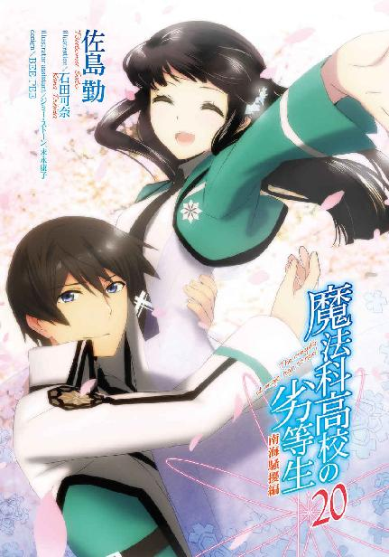
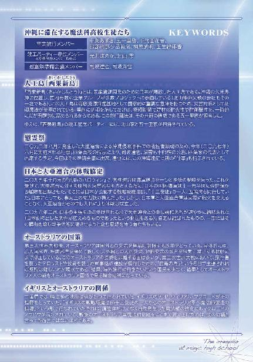

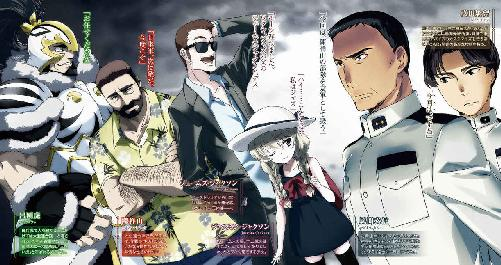
本書（電子版）に掲載されているコンテンツ（ソフトウェア／プログラム／データ／情報を含む）の著作権およびその他の権利は、すべて株式会社ＫＡＤＯＫＡＷＡおよび正当な権利を有する第三者に帰属しています。
法律の定めがある場合または権利者の明示的な承諾がある場合を除き、これらのコンテンツを複製・転載、改変・編集、翻案・翻訳、放送・出版、公衆送信（送信可能化を含む）・再配信、販売・頒布、貸与等に使用することはできません。
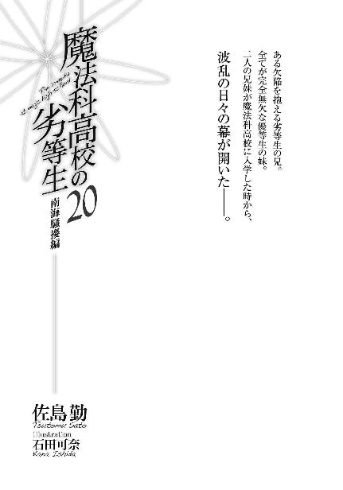
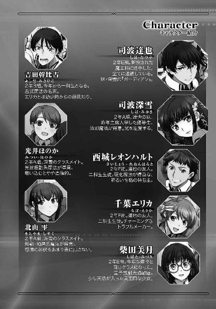
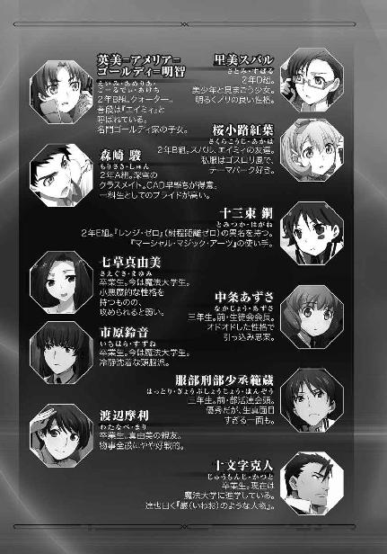
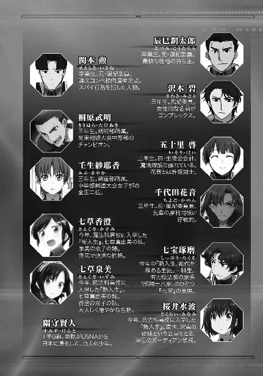
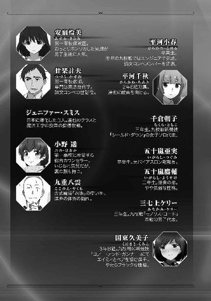
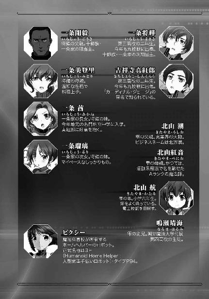
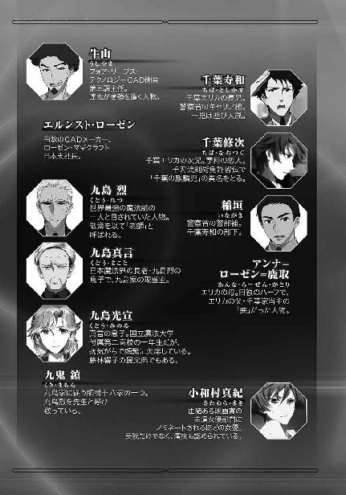
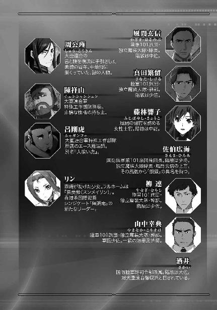
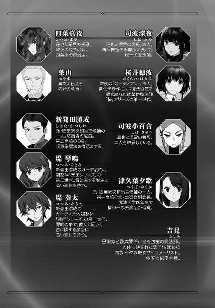
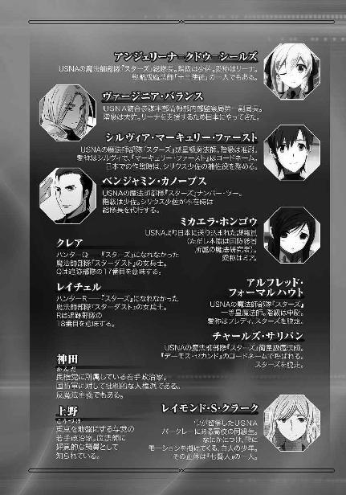
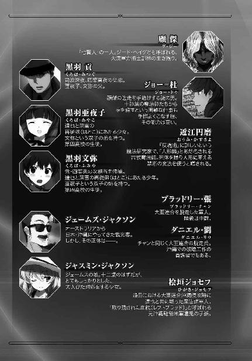
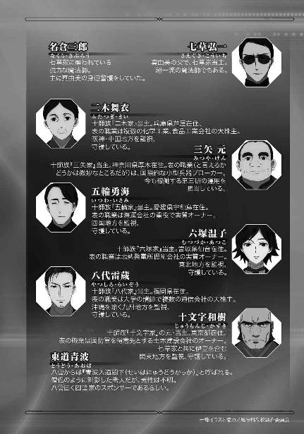
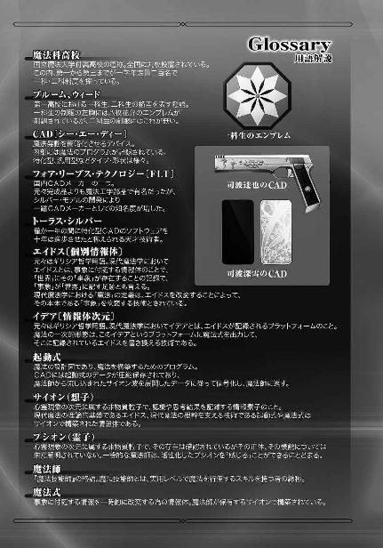
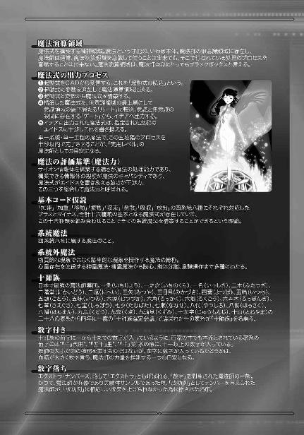
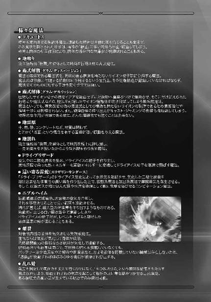
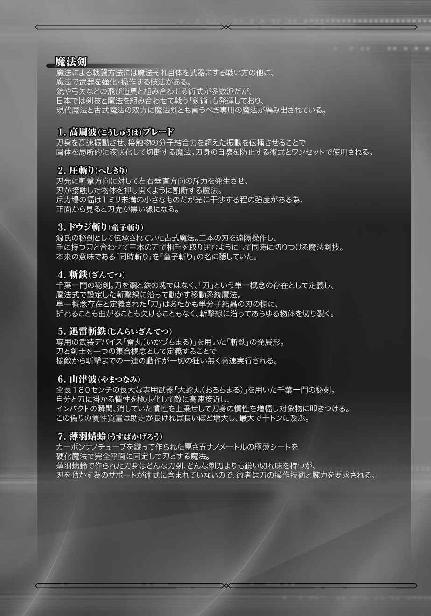
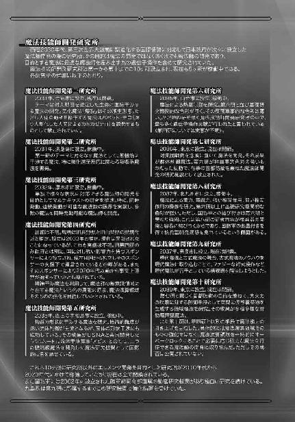
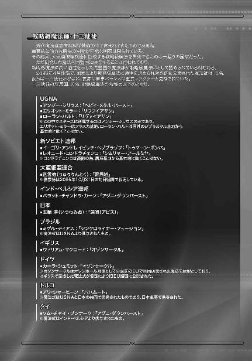
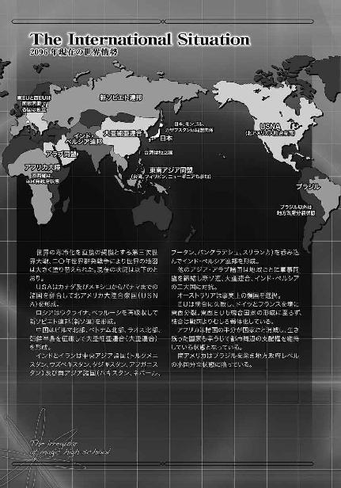
［１］
オーストラリア、ダーウィン基地。以前は国際空港があった地だが、世界群発戦争の後、オーストラリアが実質的に鎖国状態に移行したことにより、国際線民間空港は閉鎖された。
その代わり、ここにはイギリスの肝煎りで魔法師研究施設が建設された。
一般に、鎖国政策をとったからといって外国との交流を完全に断ってしまうわけではない。国家として外交を遮断していても、民間貿易の形式で──あるいは民間同士の交流に偽装して──限定的な外国とのつながりを維持する。
ましてやオーストラリアの場合は鎖国を国是として掲げているわけではなく、テロリストの侵入を阻止するという名目で人の出入りを極めて厳しくしているだけだ。実質的に、出入国が不可能となる程に。
だから政府が必要と認める相手ならば、秘密裏に受け容れる。交渉が必要ならば内密に外交官を差し向ける。
砂漠化の停止と砂漠の耕地化に成功したオーストラリアは、食糧資源も鉱物資源も自国だけで足りている。自給自足が十分に可能だ。
オーストラリアが必要としているのは自分の国を守る軍事力と、その為の軍事技術。
特に、海岸線を越えて国内に侵入したゲリラ的軍事勢力を、国民の生命と財産に対する犠牲を最小限に抑えて駆逐することができる軍事魔法技術だ。
歴史的経緯からこの国が頼りにしたのは、ＵＳＮＡと並んで魔法技術の先進国と見なされているイギリスだった。
ダーウィン空軍基地にイギリスからの極超音速輸送機が降り立つ。成層圏上層を音速の六倍で飛ぶ最新鋭機だ。イギリス空軍にとって虎の子の機体であり、極超音速爆撃機にも転用可能なこの機体を使用したのは、送り届ける乗客がイギリス軍にとってのＶＩＰだからだった。
その者は高級将校でも有力政治家でもなく、身分は民間の研究者だったが、イギリスにとっては国防力を左右する、まさに最高級の重要人物だ。
「サー・ウィリアム・マクロード。ご来訪を歓迎致します」
ダーウィン基地司令官が直々に出迎えたイギリスのＶＩＰ。それは戦略級魔法師十三使徒の一人、ウィリアム・マクロードだった。──なお公認戦略級魔法師が十三使徒のままなのは、大亜連合が劉雲徳の戦死を公式には認めていないからである。
「ご丁寧なお出迎え、痛み入ります」
マクロードは現在六十歳。銀色の髪をきれいに撫でつけた長身瘦軀の老紳士だ。物腰は丁寧で、一見しただけではイギリス首相と同等あるいはそれ以上の大物とは思えない。
「ウィリアム卿、どうぞこちらへ」
基地司令の副官が自走車の扉を開けて、敬礼ではなく、恭しくお辞儀する。
マクロードは気品たっぷりにお辞儀を返して、ロールスロイスのリムジンに乗り込んだ。
リムジンが向かった先は、防空地下シェルターの奥深くに守られた研究所だった。
調整体魔法師の研究、製造施設。かつてここでマクロードは、オーストラリア軍に魔法師製造の指導を行っていた。
調整体だけでなく自然発生した魔法師の強化にもマクロードのノウハウが活かされている。戦後のオーストラリア軍魔法師部隊をここまで育て上げたのは、彼の功績と言っても過言ではなかった。
「お久し振りです、サー」
「サー、またお目に掛かれまして光栄であります」
地下とは思えない豪華な部屋でマクロードを待っていたのは十二、三歳にしか見えない白人の少女と、三十代と思しき白人男性だった。
「ジャズ、また会えて嬉しいよ。ジョンソン大尉も変わりないようで何よりだ」
「私もです、サー」
「恐縮です、サー」
「二人とも、楽にしてくれたまえ」
マクロードがソファに座りながら二人にそう命じる。
少女も大尉も、休めの姿勢を取っただけで腰は下ろさなかった。
「早速だが、話は聞いているかね？」
少女と大尉の二人は、同時に「イエス・サー」と答えた。
「君たちにとっては不本意な作戦だと思うが、これ以上日本が勢力を伸ばすのはパワーバランスの観点から好ましくない。この作戦は本国だけでなく、イギリス連邦にとっても有意義なものだ」
第三次世界大戦後の世界秩序再編により、イギリス連邦は名実共に消滅したことになっている。
しかし、組織は無くなってもコネクションは残っている。何時でも新イギリス連邦をスタートさせられるように、密かな連携は続いていた。
──ただし新イギリス連邦は、イギリスにとってもオーストラリアにとっても唯一の選択肢ではない。それはイギリスもオーストラリアも正しく認識していたし、相手がそう考えていることも理解していた。
「いえ、命令に対して不服などありません。微力を尽くします」
そう答えたのはジャズと呼ばれた少女。本名、ジャスミン・ウィリアムズ大尉。彼女はマクロードが直接調整を手掛けた「ウィリアムズ・ファミリー」の一人。
十二、三歳にしか見えない外見に反して、今年二十九歳になる練達の魔法師だった。
「そうか」
マクロードは満足げに頷いて、内ポケットからカード型のストレージを取り出した。
「まだ、聞いているのは作戦の概要だけだと思う」
マクロードのこの言葉に、ジョンソン大尉が「肯定であります、サー」と答えを返す。
「ここに作戦の詳細が記されている。ただしいつもどおり、地名と人名は省かれている」
マクロードが言うとおり、それはいつものことだったので、ジャスミンもジョンソンも特に何も口を挿まなかった。
「攻撃の対象は沖縄諸島、久米島沖合い。日本が建設した海底資源採掘用の人工島だ」
マクロードは彼の説明を待つ二人にそう告げた。
◇ ◇ ◇
二〇九七年三月十日、日曜日。
テロリスト捜索の為一高に転校していた一条将輝が金沢に帰るのを見送った後、達也と深雪は魔法協会関東支部の応接室に戻った。
そこには四葉家当主、兄妹にとっての叔母である四葉真夜が待っていた。
「母上、お待たせしてしまいましたか？」
達也が「叔母上」ではなく「母上」と呼び掛けたのは、ここが自宅でも四葉家の拠点でもなく魔法協会だからだ。
「いいえ、達也さん。まだ予定時間前よ」
時計は確認している。まだ予定時間前であることは分かっていた。だが、真夜が待たされたと感じていればそんなことは意味を失う。真夜の返事に、達也よりも深雪の方が心の中で胸を撫で下ろしていた。
「二人とも、お掛けなさい」
命令口調ではなく柔らかな言い方で席を勧められ、兄妹は逆に警戒を強くした。何か厄介事を押し付けられるに違いないと予感を覚えた、の方が正しいか。
だがこの場合、立ったままというのもかえって不調法だろう。達也がまず腰を下ろし、わずかに遅れて深雪が続いた。
「達也さん、顧傑の件が片付いたばかりで申し訳ないのだけど」
達也は心にヒヤリとした感触を覚えた。大漢出身のテロリストが引き起こした事件は「終わった」という意味では片付いている。だが解決したとは言えない。例えば警察はまだ捜査を続けているし、国会でも事件続発の防止策が──再発防止策ではない──賑やかに議論されていた。
テロ事件を望ましい形で解決できなかった件については既に、真夜に謝罪して許しを得ている。だがそんなものは何時でもひっくり返し、蒸し返せる。達也が緊張を覚えても、意識過剰とは言えなかった。
「またお仕事をお願いしたいの」
「仰っていただければ、俺の方から参上しましたが」
にこやかに告げる真夜に対し、達也は慎重に言葉を返す。
「そんなに気を遣わなくても良いわ。私もこちらに用があったのよ」
どんなご用事でしょうか、とは、達也は訊かなかった。
四葉家も霞を食べて生きている仙人ではないし、あの山間部の村で自給自足しているわけでもない。
あの村は丸ごと、元は軍の秘密研究施設だ。いざという時は外部との接触を断って研究成果を守り続けることを前提としていたから自給自足もやってやれないことはないが、たとえ自分たちで消費する衣食住を自給できたとしても、金銭は何かと必要になる。
四葉にも傘下企業や取引先やスポンサーが存在するわけで、時には当主自ら挨拶をして回るのも不可欠なことだった。
「御用というのは、沖縄に行って欲しいのよ。深雪さんと一緒に」
「深雪とですか？」
「表向きは、あの事件から今年で五年になるので、この節目の年に行われる慰霊祭の打ち合わせに出席すること。出席といっても話を聞いているだけで構いません。犠牲者の遺族の意見を尊重しているという政府のアピールですから。併せて、お彼岸の法要にも出席してもらいます」
あの事件とは、二〇九二年八月に発生した、大亜連合による沖縄侵攻のことだ。
あの時の戦いで、達也たちは家族同然だった実母・深夜のガーディアン、桜井穂波を失っている。
「ですが叔母様。わたしたちは遺族ではありませんが」
それにも拘わらず深雪がこう口を挿んだのは、自分が行きたくないというより達也に辛い記憶を思い出して欲しくないからだった。
達也はまだ、本物の感情を取り戻していない。それは死ぬまで取り戻せないものかもしれない。
だが、本当に悲しい思いをすることは無くても、少しは悲しむことがあるのだ。
「遺族みたいなものでしょう？ それにこれは、十師族としての公務でもあります。十師族の中であの事件に直接関係をしているのは、貴女たちだけだから」
しかしそんな口実が、真夜に通用するはずは基より無かった。
「......はい、分かりました。つまらぬことを申しました」
「気にしなくて良いわ」
真夜は笑みを浮かべて深雪の謝罪を受け容れ、達也に視線を戻した。
「それで、本当に頼みたい仕事はこちらです」
真夜の背後に控えていた葉山が、主の目配せを受けるまでもなく動き、達也に大判の封筒を渡した。
「開けても構いませんか？」
「ええ、ここで見ていって頂戴」
達也は応接テーブルに用意されていたペーパーナイフで封を切り、中から表裏両面に無地の薄い表紙が付いた十枚程の書類綴りを取り出した。
パラパラと目を通した達也が書類を封筒に仕舞い直して立ち上がり、葉山に返却する。
葉山は達也に一礼して、その封筒を真夜に手渡した。
「達也さん、処分してもらえるかしら」
達也は「はい」と応えながら真夜の手から再び封筒を受け取った。
彼の手に移った直後、封筒は中の書類ごと消え失せた。達也が分解したのだ。
「母上、内容を深雪に伝えても構いませんか？」
「ええ、もちろんです。私としては二人で協力してこの件を解決して欲しいのだけど、やり方は達也さんに任せます」
ただし今回は、失敗は許しません。
真夜はわざわざ言葉にしなかったし、声に出して言われなくても完遂が要求される事案であることを達也は理解していた。
「承りました」
一礼した達也に頷きを返して、真夜は立ち上がった。
「お茶も出さずにごめんなさいね。少し予定が詰まっているものだから」
「いえ、お気になさらずに」
達也と深雪もわずかに遅れて立ち上がる。
真夜は前傾角四十五度で最敬礼する二人へ「お先に」と声を掛けて部屋を後にした。
◇ ◇ ◇
休み明けの月曜日。
深雪は実習室へ移動中の廊下で雫に話し掛けられた。
「深雪、沖縄へ行かない？」
沖縄行きと聞いて、深雪は少なからず動揺した。真夜の「本当の用事」は昨晩達也から説明を受けている。雫がその件を知っているはずはなかったが、タイミング的に、連想せずにいられなかったのである。
「沖縄に？」
「うん」
「沖縄の久米島に人工島を建設していたのは知ってる？」
言葉足らずの雫に代わり、ほのかが説明役として口を挿んだ。
「ええ、知っているわ」
見た目は完全に平静を維持したまま深雪が頷く。
「さすがは深雪ね......」
ほのかがいきなり感心し始めたのは、雫に聞くまで彼女自身は人工島のことを知らなかったからだ。なお雫も親に聞くまで知らなかったから、これが普通である。
「......それでね。その人工島建設に小父様の会社が出資しているそうなの」
深雪は然程意外に思わなかった。
雫の父親は日本有数の企業グループの総帥で、久米島沖に建設されていた人工島は日本の資源政策上、極めて重要な意義を持つ。
政府から出資を求められなかったとすれば、そちらの方が意外かもしれない。
「その人工島が先月完成したの。それでね」
ほのかが雫に目配せした。次のセリフは雫が告げるべきだ、と考えたのだろう。
「竣工記念パーティーがある。深雪も行かない？」
ほのかのバトンを受けて、雫が深雪を招待する。
「何時なの？」
「三月二十八日。バカンスを兼ねて二十五日に出発、三十一日に戻ってくる予定」
「......ごめんなさい。ちょうど同じ時期に、家の予定が入っているのよ」
すまなさそうに──これは演技ではなく本心だ──断った深雪の言葉に、ほのかが目を丸くした。
「家って、四葉家の？」
そう口にした直後、ほのかが自分の口を慌てて手で押さえる。
「別に変な用事ではないわ」
その狼狽ぶりに、深雪は苦笑いを漏らした。四葉家が恐れられているのは理解しているが、それにしても過剰反応だと感じたのだ。
「沖縄事件から今年で五年になるでしょう？」
ここ数年で沖縄事件と言えば、二〇九二年八月に発生した大亜連合による沖縄侵攻事件を指す。ほのかにもそれで通じた。
「節目の年ということで今年の夏に大規模な慰霊祭が行われる予定でね。その打ち合わせに立ち合うことになっているのよ」
節目と言えば本当は来年の七回忌のはずなんだけど、と深雪がどうでも良いように付け足す。
空気を読んだのか、ほのかも雫もコメントを返さなかった。
「ちょうど同じ時期に行われるお彼岸の法要にも参加することになっているわ。だからお兄様とわたしは二十三日の終業式直後に沖縄へ発つことになっているの。そんな訳で旅行に同行はできないけれど......、同じ沖縄だし、向こうで偶然会うかもしれないわね」
達也が沖縄へ行くと聞いて、ほのかが目を輝かせた。十師族・四葉家の仕事なら一緒に旅行など無理だと諦めていたところに行き先が同じ沖縄と聞いて、ほのかの中で期待が大きく膨らんだ。
「もし時間が空いたら一緒に遊べるかな？」
雰囲気だけでなく身体的にも前のめりになって訊ねるほのかに、
「そうね。ずっとお仕事ということもないでしょうから、時間が空いたら連絡するわ」
深雪は穏やかな笑顔で頷いた。
「うん」
ほのかの隣で深雪の返事を聞いていた雫も、いつもどおり言葉少ないながら、結構楽しみにしている様子だった。
◇ ◇ ◇
三月十五日。今日は魔法科高校の卒業式だ。第一高校だけでなく、魔法科高校九校の卒業式が一斉に行われている。
第一高校ではつい先程卒業生送別パーティーが終わったばかりであり、校内は喜びと寂しさが同居する喧騒に包まれていた。
去年の達也はまだ風紀委員だったので、卒業式やパーティーの進行それ自体には関わっていなかった。アクシデントに備えて控えていただけだ。しかし今年の彼は生徒会役員として、会長の深雪を支え裏で走り回っていた。
今年も一科生、二科生別々に開催されたパーティーの後片付けを終えて、達也は今、生徒会室に引き揚げてきたところだ。大勢の来賓に囲まれてその対応に追われていた深雪は、彼よりも先に戻ってきていた。
「お、いえ、達也様」
建前上「お兄様」とは呼べない。だが「達也さん」ではしっくりこない。
最近は「お兄様」と言い終える前に言い直すことができる程度には慣れてきた深雪だが、それでも「達也さん」と呼ぶことには馴染めずにいた。
何となく、自分と達也が対等になったような錯覚がして違和感を拭えないのだ。
そこで深雪が妥協案として採用したのが「達也様」という呼び方だった。水波が「達也さま」と呼ぶのを聞いて自分も、と思ったようだ。
物語の中から飛び出してきたような深雪の美貌に「婚約者」相手の様付けは意外な程マッチしていて、周りの人間にも「達也様」は違和感なく受け容れられていた。
「お疲れさまでした」
「深雪こそお疲れさま」
指定席とも言える端末の前に座った達也へ、水波がコーヒーカップを差し出す。
端末周りは本来飲食禁止なのだが、達也にそれを指摘する者はいなかった。彼に対して非好意的な泉美も、生徒会室の全情報機器のメンテを実質的に独りで行なっている達也にとやかく文句をつけることはできなくなっていた。
......これといい深雪のカリスマ性といい、確かに現在の一高生徒会には民主主義の原理にもとる危険な側面があることを否定できない。
もっとも、達也が飲食可能なテーブルではなく端末の前に座ったことには、ちゃんと理由があった。ミーティング用（という名目）のテーブルは、あずさ、五十里、花音、服部、桐原、紗耶香の卒業生組でいっぱいだったのだ。
「司波君、お疲れさま」
五十里が座ったまま、達也に労いの言葉を掛ける。
達也も座ったまま会釈を返した。卒業を祝う言葉は既に何度も繰り返されているので、ここでは敢えて口にしなかった。
卒業生たちも──花音も含めて──達也の態度に文句をつけたりしなかった。五十里もすぐ彼らの会話の輪に戻った。
「全員、予定どおりで大丈夫ですね？」
あずさが念押しのセリフを口にする。否定の言葉は無かった。
「このメンバーで卒業旅行なんて、一年生の時は思ってもみなかったわ」
「壬生、今更そんなことは気にするな」
「服部の言うとおりだぜ、壬生」
「そうよ。壬生さんは戦友じゃない。......あたしとしては、啓と二人きりが本当は良かったんだけど」
「花音。そんなことを言っては駄目だよ」
「はぁい」
コーヒーを飲みながら、聞くとはなしに服部たちの話に耳を傾けていた達也の隣へほのかがやってきた。
「中条先輩たち、卒業旅行は沖縄へ行くそうです」
「先輩たちも沖縄へ？」
ほのかと雫も自分たちと同時期に沖縄へ行くことを、達也は深雪から聞いていた。
「はい。雫のお家が出資している人工島の建設に、五十里先輩のお宅が技術協力しているそうで、竣工記念パーティーに皆さんで参加されるそうです」
「なる程な」
五十里家は刻印魔法の権威だ。刻印魔法は特に、災害対策の分野で有用性を評価されている。事前に刻印を施しておけば極短時間で建材の耐火性や耐衝撃性を、一時的にとはいえ、飛躍的に高めることができる。
海底資源採掘基地として国家的に重要な意味を持つ人工島に刻印魔法を使用するというのは、魔法の活用方法として理に適っている。そこに五十里家が協力しているというのも納得できる話だ。
達也が受けた任務と時期が重なるのは、実を言えば偶然ではなかった。真夜から言い付けられた仕事も、ほのかが話題にした人工島『西果新島』の竣工記念パーティーに関係があるものだった。
本来であれば達也は、少なくともほのかと雫には、警告すべきだっただろう。しかし彼は、秘密を守ることを優先した。
達也はともかく深雪は、友人を巻き込んでしまうことに心の中に大きな葛藤を抱えていた。しかしこれは、国防軍も巻き込んだ秘密任務に関わる情報だ。警告したくても説明のしようがなかった。
◇ ◇ ◇
卒業式が終わっても、春休みまでは三学期だ。
今年はカレンダーの都合で例年より二日ほど終業式が早いとはいえ、敵はこちらの都合に関係無く攻めてくる。
達也が真夜から受けた命令は、二十八日の久米島沖人工島竣工記念パーティーに合わせた破壊工作を阻止することだ。だからその任務を果たすだけなら、動き出すのは春休みに入ってからでも遅くない。
しかし敵に時間を与えた分だけ、任務の難易度は上がっていく。それに、敵の目的が記念式典だけとは限らない。四葉家の魔法師が現場にいたのに敵性外国勢力の破壊工作を許したなどということになれば、任務そのものは達成できても本来の目的は達せられないという羽目にもなりかねない。
もっとも、そんなことになれば四葉家のみの問題ではなくなる。十師族の面子が潰れるだけに止まらず、国防軍にとっても大きな恥辱だ。外国の工作員が日本で破壊活動を目論んでいるという情報に対して、四葉家と国防軍の利害は一致している。
三月十七日、日曜日。四葉家の魔法師であると共に国防軍の特務士官でもある達也が所属する独立魔装大隊の本部を訪れたのは、ある意味で当然の成り行きだった。
ただしこの任務では国防軍の一員として動くのではなく、四葉家の魔法師として軍に協力するというスタンスを保つ必要がある。
今日の打ち合わせでまず決めなければならないのは、達也が何時風間の部隊に合流するかという点だった。
「我々が先行して沖縄入りしよう。貴官は二十四日の彼岸供養式典で合流してくれれば良い」
その話題を達也が切り出すと、風間はすぐにこう答えた。今回の風間は、随分と物分かりが良い。もしかしたら顧傑の跳梁を座視していたことに後悔を覚えているのかもしれない。
まあ、理由はどうあれ、達也にはありがたい言葉だった。
「お言葉に甘えます」
達也は素直に謝意を示した。その上で、疑問を腹に溜め込まず口にした。
「しかし、中佐が直接現地で指揮を執られるのですか？」
「指揮だけではない。今回は私も戦力だよ。作戦の性質上、大人数は動かせないからな」
達也の問い掛けに、風間は不敵な笑顔で首を横に振った。
久々の現場に、気を昂ぶらせているのかもしれない。
「敵が少人数の工作部隊とは限りませんが」
達也は本気でこう考えていたわけではない。前回の沖縄事件から五年。横浜事変から一年半。ここでまた大部隊の工作員を侵入させてしまう程、国防軍も警察も無能ではないと達也は考えている。と言うより、信じている。
それは風間も同じだったが、彼は達也が提示した可能性を頭から否定することはしなかった。
「相手が大部隊を繰り出してくれば、現地の兵力で対応する。敵としては工作が成功しなくても、騒ぎが大きくなれば目的が達成される」
達也は風間が何を言いたいのか、すぐ理解した。
破壊工作を仕掛けようとしている敵の戦術目的は人工島の破壊、もしくはパーティーに参列する要人殺害。
だが戦略目標は日本人の敵意を煽り、講和条約を破棄させることにある。
こちらが大人数を動かせば、マスコミは当然、何に備えた出動なのか嗅ぎ回るだろう。大亜連合の反講和派による破壊工作が目論まれていると分かれば、それだけで世論を刺激することになってしまう。
しかしそれは現在の情勢下において、日本にとってのみならず、大亜連合にとっても不利益になるはずだった......。
［２］
日本と大亜連合の間に休戦協定が結ばれたのは二〇九五年十二月のことだ。
十月末に朝鮮半島南端を灼いた『灼熱のハロウィン』で、大亜連合は海軍拠点を一つと多数の艦艇を失った。これを受けて、大亜連合に対する勝利を決定的なものとする為に、日本の国防海軍は十一月半ばに佐世保から艦隊を出撃させた。新ソ連に対する備えを残していたので全艦隊とは言えなかったが、それを除けば動員可能な全ての艦艇を結集したと言って良いだろう。佐世保から出撃した艦隊には日本が公認する戦略級魔法師、『十三使徒』の一人、五輪澪も同行していた。日本にとっても、事実上の総力戦の構えだった。
幸いなことに、出撃した艦隊は大亜連合軍と実際に砲火を交えることは無かった。戦略級魔法『深淵』が使われることもなく、日本が貴重な戦略級魔法師を失うことも無かった。その前に、東南アジア同盟を仲介役とした大亜連合からの申し入れにより休戦は成立した。
そして二〇九六年三月、日本の主張をほぼ受け容れる形で大亜連合との間に講和条約が締結された。
速やかな講和の成立は、日本側の出した条件が控えめなものであったという側面もある。
しかしやはり、大亜連合の受けた損害がそれだけ大きかったというのが主な理由だった。
とはいえ、誰もが講和に賛成したわけではない。
どんな国家、どんな軍隊でも同じだろうが、講和に反対する勢力は必ず存在するものだ。日本にも、大亜連合にも、少なからず講和に反対する声があった。
そればかりか、もっと積極的に、講和を壊し戦争状態に復させようと企む者たちがいた。
三月二十一日。沖縄、那覇空港。
その日は特別な一日ではなかった。昨日と同じ、三百六十五日の内の一日。発着する飛行機も、乗り降りする乗客も、誰一人同じ人間はいなかったが、その違いは全て「個性」として許容される範囲内だ。
たとえ身長二メートル、体重百数十キロありそうな筋肉の塊であっても、パスポートに不備が無く荷物に違法性が無ければ他の旅行者と同じように税関を通ることができる。
その男は、他の旅行客のように大きなスーツケースを持っていなかった。手荷物のボストンバッグ一つをぶら下げ、到着ロビーから出て、タクシー乗り場へ向かって歩いていく。
彼の周りには、何故か他の人影が無かった。
ビルから誰も出てこない。タクシーが一台も駐まっていない。
そのことに不審感を覚えた男が、足を止めた。
国内線ターミナルの方から、一人分の足音が近づいてくる。
男はその足音の主へ身体を向けた。
ボストンバッグを路上に落とし、何時でも構えを取れるよう膝と肘を軽く曲げる。
その人物は、男ほどの巨体ではなかったが、やはり筋骨隆々たる偉丈夫だった。男が大きすぎるだけで、その人物も巨漢と呼ばれるだけの体軀を有している。
見る者が見れば、一瞥だけで分かる。
この二人は単に身体が大きいだけでなく、その内に戦う為の力を秘めている。戦う為だけに鍛え上げられた肉体の持ち主だ。
「呂上尉......」
男が、歩み寄る人影に呼び掛ける。いや、思わずその名を呟いただけか。
「脱走兵、ブラッドリー・張中尉」
それに対して呂剛虎のセリフは、明確に相手へ呼び掛けるものだった。
「抵抗しても構わないぞ」
呂剛虎の顔に浮かぶ、人喰い虎の笑み。
「チッ、鬼門遁甲か！」
チャンはようやく、人影が無かった理由に気がついた。ここは今、鬼門遁甲により一種の隔離空間になっている。それは、自分を捕らえる為の網に違いなかった。
体格ではチャンが十センチ、体重では二十キロ勝っている。
だが余裕の表情を浮かべているのは呂剛虎であり、焦りの表情を浮かべているのはブラッドリー・チャンだった。
チャンが呂剛虎に背中を向ける。
逃げる、と見せ掛けて、背後から迫る気配を頼りに後ろ蹴りを放つ。
呂剛虎は足を止めなかった。彼の身体は止まらなかった。
ブラッドリー・チャンの靴を片手で受け止め、そのまま押し退ける。
チャンの身体が、大きく宙を舞った。
その巨軀からは想像できない身の軽さで、タクシー乗り場の屋根に跳び上がる。
下を見てニヤリと唇を吊り上げたチャンの顔がたちまち強張った。
呂剛虎は道路の上にいなかった。
ブラッドリー・チャンが顔を上げる。
チャンと呂剛虎の目が合った。二人の目線は同じ高さだった。
チャンが屋根から転げ落ちた。自ら転げ落ちるようにして屋根から降りた。
一瞬前までチャンの頭があった所を、豪風を纏った呂剛虎の右足が薙ぐ。
空中で身体を水平回転させた呂剛虎が、左足で屋根の端を蹴って路上に戻った。
一足先に体勢を整えていたチャンが、地面に足をつけたばかりの呂剛虎に襲い掛かる。
縦に弧を描いたブラッドリー・チャンの手刀が、呂剛虎の頭頂へ振り下ろされる。
呂剛虎は下から突き上げる掌底で、チャンの手刀を迎え撃った。
銅鑼を鳴らしたような衝突音が轟く。
「鋼気功」
「お前だけの技ではないぞ」
呂剛虎が呟き、チャンが答える。
呟きはむしろ楽しげであり、答えには勝ち誇る響きが無かった。
呂剛虎が笑う。
獰猛に、歯を剝き出す。
呂剛虎の足が道路を蹴った。
舗装された路面に焦げた足跡を残して、瞬く間にチャンへ肉薄する。
目まぐるしく繰り出される拳、肘、掌打。
覚悟を決めた表情で、チャンがそれに応戦する。
戦況は明らかに、呂剛虎が押していた。
そこへ投げ込まれた一振りのダガー。
呂剛虎はそれを容易く弾いたが、その一瞬、彼の猛攻が途絶える。
チャンはその機に乗じて反撃しようとはせず、跳躍して呂剛虎から距離を取った。
呂剛虎がダガーの飛んできた方向へ、顔を動かさず目を向ける。
そこには身長百八十センチ程度の、サングラスを掛けた男が立っていた。
鬼門遁甲で人払いした陣内への侵入者。
そう認識した呂剛虎へ、「声」が話し掛けた。
『呂上尉、ここまでだ。一旦引け』
声を発したのは、前方に見据える敵ではない。後方から味方が近づいてきているわけでもない。声を伝えるスピーカーも無い。
「是」
虚空に生じたその「声」に短く答えて、呂剛虎がチャンに背を向けた。
何時でも襲い掛かってこいと言わんばかりに悠然と歩み去る後ろ姿を、チャンは構えを取ったまま見送った。
呂剛虎の姿がビルの中に消える。
タクシーがこちらへ近づいてくる。
不思議なことではない。ここはタクシー乗り場だ。
ブラッドリー・チャンはサングラスの男と合流して、停車したタクシーに乗り込んだ。
◇ ◇ ◇
「ブラッドリー・チャンの同伴者の正体は分かったか」
風間の問い掛けに、斜め後ろに立っている藤林が答えを返す。
「パスポート上の名前はジェームズ・ジャクソン。表向きは、オーストラリアからの観光客です」
「オーストラリアか。珍しいな」
第三次世界大戦後、オーストラリアは国外との交流を極端に制限する政策をとっている。これを日本人は一般的に「事実上の鎖国状態にある」と理解している。
しかしオーストラリアの対外政策と日本が江戸時代に採用した鎖国政策は、本来同列視できるものではなかった。
オーストラリア政府は外交上孤立政策をとっているものの、出入国の自由と貿易の自由は原則として認めている。非居住者による有形固定資産の取得は禁止しているが、収益分配権の形で間接的に所有することは禁じていない。
では何故「事実上の鎖国状態」という認識が広まっているのか。
それは、出入国審査、税関審査が極めて厳しく、また外国人の犯罪を一切許さない厳格な姿勢が人的交流、物的交流の双方を事実上禁止されている状態にまで抑圧しているからだった。
このオーストラリアの姿勢を非難する国は多い。しかし第三次世界大戦、別名二十年世界群発戦争において、旅行者を装ったテロリストや投資を装った軍事拠点建設が横行したのは紛れもない事実だ。「自衛の為」という名目を掲げられては、正面切っての反論は難しかった。
入国審査が厳しいのは、自国民が再入国する際にも適用される。短期の旅行であっても、帰国時に厳重な取り調べを受ける。名目は審査だが、実態は取り調べだ。
そこまでして海外旅行に行きたいという国民は少なく、結果としてオーストラリア人の姿をオーストラリア国外で見る機会は稀になっている。
「素性を洗うよう情報部に依頼してくれ」
工作員だとしたら、わざわざ目立つオーストラリア国籍を使うだろうか？ という疑問が生じる。だが敢えてオーストラリア人と偽っているとすれば、今度はそれが何を目的としたものかという問題点が浮上する。
「至急、手配します」
藤林は風間に敬礼すると、ノート型の端末を脇に抱えて部屋から退出した。
彼女と入れ替わるように、巨漢の男が室内に入ってくる。
今し方まで表で派手な立ち回りを演じていた呂剛虎が、空港の有料会議室に戻ってきたのだ。
「呂上尉、ご苦労」
呂剛虎に声を掛けたのは、風間の正面に座っていた大亜連合軍特務部隊上校・陳祥山だった。
陳祥山と呂剛虎は横浜事変の折に捕らえられ、非合法の破壊工作を実行した戦時犯罪者として収監されていたが、日本と大亜連合の講和成立により捕虜と同様釈放されていた。
正確に言えば、非公式に戦時犯罪者同士の交換が行われた。身許を隠した状態で捕獲された破壊工作員は本来ならば捕虜交換の対象にならないが、大亜連合に囚われていた日本の工作員を救出する為の材料にされたのである。
「いえ、捕り逃がしてしまいました」
「気にするな。あそこで引くように命じたのは私だ。こんな所で自爆されては、結局やつらの思う壺になりかねん」
呂剛虎は了解の印に敬礼した後、陳祥山を守るようにその背後へ移動した。
風間の背後に立つ真田と、呂剛虎の視線が交差する。
呂剛虎は不敵な笑みに唇を歪め、真田は涼しい顔でそれを黙殺した。
「彼らを乗せたタクシーには尾行をつけさせてあります。島内にいる限り、見失うことはないでしょう」
「お手数をかけます」
風間のセリフに、陳祥山が流暢な日本語で返す。
「我々としては、チャン中尉だけでなく他の脱走兵も捕らえたい。無理を聞いていただいて感謝しています」
チャンの逃走を許した背景には、彼を泳がせて仲間を炙り出そうという意図があった。
「そうでしょうな。その点は我々も同じです」
風間としては、いや、国防軍としては日本に潜入した破壊工作員を一網打尽にしたい。
この利害の一致により、彼らは一時的に手を結んでいた。
今後の対応について幾つかすり合わせを終えて、陳祥山と呂剛虎は空港を後にした。風間の部下が、彼らを用意した宿舎へ送り届けるべく同行する。その運転手は監視役も兼ねていた。
陳祥山たちと入れ替わるようにして、柳少佐が会議室にやって来た。一旦会議室から出て行った藤林も一緒だ。風間、真田、柳、藤林。山中を除く独立魔装大隊の幹部が、沖縄に勢揃いしていた。
「柳、どう見た」
「ブラッドリー・チャンは本気で戦っていたと思います。呂剛虎は、まだまだ本気ではなかったように見えました」
風間の質問に、柳は即答した。回答のセリフは推測の形を取っているが、口調に迷いは無かった。柳は鬼門遁甲の陣が敷かれていたにも拘わらず、その外側から呂剛虎とブラッドリー・チャンの戦闘を観察していたのだった。
「馴れ合いではない、か」
「脱走は偽装工作ではなく、事実と思われます」
風間は「そうか」と言いながら頷いて、全員に座るよう手振りで指示した。
「どうやら特尉に呆れられずに済みそうですね」
「真田少佐。今回彼は、『特尉』ではありませんよ」
冗談めいた真田の言葉をたしなめた藤林のセリフも、やはり一種の冗談だったのだろう。
「そうだった」
それが分かっているから、己の非を認めた真田の声にも悪びれた様子はない。
「彼の扱いを含めて、作戦は予定どおりだ」
風間が口にした「彼」というのは言う迄もなく「特尉」＝達也のことだ。達也は今回の作戦に独立魔装大隊の特務士官としてではなく、四葉家の魔法師として参加する。「特尉ではない」と藤林が言ったのは、こういう意味だ。
しかし風間がここで念を押しているのは、陳祥山の部隊との協調についてだった。
大亜連合の部隊との共同作戦を風間が佐伯から命じられたのは今月の頭、達也と打ち合わせを行う前だ。しかし風間は十七日の打ち合わせの際、達也にこのことを伝えなかった。
脱走兵が日本で破壊工作を目論んでいるから捕縛に協力して欲しい。大亜連合軍がそう言ってくるのは、特に不自然ではない。ここで講和をぶちこわされて困るのは日本よりむしろ大亜連合だ。
常に分裂の芽を抱える大亜連合中央政府にとって、軍の統制はただでさえ最優先事項。地方軍の脱走兵に勝手を許せば、ドミノ倒しに叛乱が広がる恐れがある。中央政府の高官にしてみれば、考えすぎでは済まされないリスクだ。
とはいうものの、脱走が偽装で共同作戦が日本に新たな工作を仕掛ける為の詭計である可能性も無視できない。それを警戒しないのは単なるお人好しではなく、職務怠慢、責任放棄、士官失格だ。
無論一〇一旅団の佐伯少将は、その可能性を考慮した。大亜連合軍による騙し討ちを視野に入れた上で、風間に白羽の矢を立てたのだった。
風間もそれは理解している。彼がこの任務に選ばれたのは、陳祥山と因縁があるからという単純な理由ではない。四葉家とパイプを持っているからでもない。インドシナ半島で大亜連合軍を手玉に取った『大天狗』風間玄信の技量を見込んでのことであり、彼の部下が『人喰い虎』呂剛虎に対抗しうると期待されてのことだった。
「今回は、陳祥山の部隊を友軍として扱う」
今日まで行動を共にする中で観察した結果と、柳の報告を聞いて、風間は取り敢えず陳祥山を信用することにした。
「今回は、ですね」
もっとも、真田が皮肉な口調で復唱したように、この協調関係が長続きするとは誰も考えていなかった。
◇ ◇ ◇
三月二十三日、土曜日。
終業式終了後、達也は深雪、水波を連れて慌ただしく沖縄へ飛び立った。
本来であれば今日は学校を休みたいところだったが、深雪は生徒会長だ。終業式を欠席するというわけにはいかなかった。
では出発を明日にすれば良かったのではないかと思われるだろうが、二十四日には午後一番で沖縄侵攻事件被害者の彼岸供養式典が控えている。当日に忙しい思いをするより、前日に多少無理をしてでも現地入りしておく方が楽だという判断だった。
ちなみにほのかと雫は、二十五日午後の便で沖縄入り。雫の父親の北山潮は人工島竣工パーティー当日の飛行機、母親の紅音と弟の航も潮と同じ便の予定だ。
また、あずさたち卒業生組は昨日、沖縄に到着しているはずだった。
五年前の飛行機では、達也は狭いノーマルシートだった。だが今回は、深雪と同じカプセルシートだ。なお水波も、使用人だからとノーマルシートに追いやられるようなことはなかった。──水波本人は贅沢なカプセルシートに居心地悪そうだったが。
三人が泊まったのは空港近くの高級ホテルだ。穂波と過ごしたあの別荘は、母親の深夜が存命中に処分した。たとえまだ司波龍郎名義で所有していたとしても、水波を連れて泊まる気にはなれなかっただろう。
ホテルにチェックインした当日に特筆すべきことは起こらなかった。
翌日、三月二十四日の彼岸法要も、あらかじめ葉山が全て手配しており、達也と深雪は案内役が言うとおりに四葉家代表として振る舞えば良かった。
黒一色のフォーマルなワンピースを身に着け、いつもの髪飾りを外して髪をアップに纏めた深雪は参列者の中で大層目立っていたが、これもまた特筆すべきことではない。
式典が終わり、一旦ホテルに戻って着替え、外出し直してからが達也たちにとっての本番だった。
達也たちのホテルは那覇空港のすぐ近くで、彼らの行き先は空港の隣だった。
国防陸軍那覇基地のすぐ目の前にある二階建てのレストラン。沖縄料理店ではなく、
「取り残された血統」と呼ばれる元沖縄駐留米軍遺児の子孫が経営するステーキハウスだ。
貸し切りにされたその二階が、達也たちの目的地だった。
◇ ◇ ◇
「おっ、達也！ 久し振りだなぁ、おい」
店に入ると同時に、達也は髪を剃り上げた黒い肌の大男に声を掛けられた。体格に相応しく大きな、そして陽気な声だ。
「ジョー」
相手の愛称を呼ぶ達也の声には、小さな驚きが込められていた。
「ご無沙汰しています。それにしても、その格好は？ 退役したというわけではありませんよね？」
五年前にこの地で知り合った魔法師軍人、桧垣ジョセフは店のロゴが入った派手な色のエプロンを着けていた。
「もちろん現役だぜ。こないだ軍曹に昇進したんだ」
「それは、おめでとうございます」
五年前のジョセフは上等兵だった。沖縄侵攻事件の軍功があったとはいえ、順調にキャリアアップを遂げているようだ。
「今日はオフで、この格好は単なる手伝いだ。ノーギャラだからバイトじゃないぜ。ここは退役した友人の店なんだ」
「そうだったんですか」
五年前、ジョセフは仲間たちとチンピラまがいの真似をして、肩で風を切っていた。
多くの犠牲者を出したあの事件で、その勇猛な戦い振りによりレフト・ブラッドに対する偏見は緩和されたと聞いている。こういう姿を見ると、それがある程度は事実だと分かる。
あの事件ではレフト・ブラッドの一部が敵を手引きしていた。そのことを国防軍は秘匿し、達也たちは口止めに応じた。今のジョセフを見て、それが間違いではなかったと達也は改めて確信した。
「お前の方も、最近よく名前を聞くぜ。まさか達也があの......」
「ジョー」
ジョセフのセリフを遮った達也の声は、決して強い調子のものではなかった。
「おっと、いけね。引き止めちまったな」
だがジョセフは、それで自分が口を滑らせ掛けたことに気がついた。
「お連れさんが二階でお待ちだ。そこの階段から上がってくれ」
達也はジョセフに目礼を返して、深雪と水波を引き連れ二階へと上がった。
扉をノックし、「司波達也です」と声を掛ける。
すぐに鍵が外れる音が聞こえて、内側から真田が顔を見せた。
「──良く来てくれたね。さぁ、入って」
真田がチラリと水波へ目を向けたのは、彼女と初対面だからだろう。しかし、水波を同行させることは前以て告げてある。二人ではなく三人だったことに驚いたのではないはずだ。
同行者に驚いたのは、達也の方だった。
室内には風間と、真田と、予想外の人物がいた。
達也はポーカーフェイスを保っていたが、深雪は口を手で押さえて悲鳴をかみ殺さなければならなかった。
「風間中佐、真田少佐、今回はよろしくお願いします」
「こちらこそ、よろしく頼む」
立ち上がり、達也の挨拶にそう応えて、風間は座ったままの陳祥山へ目を向けた。
「今回の作戦で、我々は協力関係にある」
風間が席を勧めるより先にそう言ったのは、同席している男が、常識的に考えてここにいるはずがない人物だと理解しているからだ。
常識を当てはめられない任務だからこそ、この場に陳祥山がいる。
「今回、大亜連合軍の陳上校は味方だ。それを理解した上で席に着いてくれ」
「了解しました。深雪」
「はい。わたしもそのように心得ます」
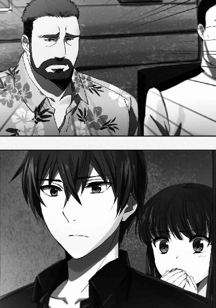
風間に対してではなく達也に対してそう答え、深雪は達也が引いた椅子に腰掛けた。
達也は風間に「失礼します」と断りを入れて、深雪の隣に座る。
水波は深雪の斜め後ろに立ったままだ。
風間が水波に一瞥を投げる。だが無理に席を勧めることはしなかった。
「早速だが、現在の状況を説明しよう」
「お願いします」
風間が口火を切り、達也がそれに応じる。陳祥山は黙したままだ。
「沖縄本島に侵入した工作員に大きな動きは無い。陳上校の手を借りて一度挑発してみたが、今のところ慎重に振る舞っている」
達也が陳祥山に目を向ける。
しかし、陳祥山からの反応は無かった。
達也は視線を風間に戻した。
「現在確認されている敵の勢力はどの程度ですか」
「この沖縄本島に六人。日本人二名とオーストラリア人一名が含まれている」
「オーストラリア人ですか？」
「パスポート上は、そうだ。航空機の搭乗記録も出発地はシドニー空港になっている」
「そのオーストラリア人について分かっていることは」
「名前はジェームズ・ジャクソン。四十歳。職業はジャーナリスト」
ジャーナリストと聞いて達也は少し納得した表情を浮かべた。工作員を送り込む際、記者というのは格好の隠れ蓑になる。
「入国の目的は観光。十二歳の娘を連れている」
「娘は実在するんですか？」
「これがその写真だ」
風間がタブレット型端末を達也に渡す。達也は端末を深雪にも見えるように持って、画面をじっくりと見詰めた。そこにはひげ面の男と十二、三歳くらいの麦わら帽子を被った少女の静止画が映っていた。
「似てない親子ですね」
「本当に親子だとすればな」
達也の意味ありげな感想に、風間が苦笑しながら答える。
「カモフラージュだとすれば、こんな少女を連れてきている意図が分からん。まさか自爆攻撃に使うわけでもあるまい」
「本当に少女だとすれば、ですが」
達也のさり気ない一言に、風間が軽く目を見張る。
「見た目どおりの歳ではない、と？」
「写真だけでは判定できません」
「ふむ、可能性は否定できんか......。だがオーストラリア人の情報は入手が難しい。君が指摘した可能性を念頭に置いた上で対応することにしよう」
風間は達也のことを「貴官」ではなく「君」と呼んでいる。「大黒竜也特尉」ではなく「四葉家の司波達也」として話をしているのだ。これは陳祥山が同席しているからだろう。陳祥山は達也が戦略級魔法師・大黒竜也特尉であることを知らず、その一方で達也や深雪の戦闘力を横浜で確かめている。
もっとも、「司波達也」が軍と協力関係にあることを風間が陳祥山に対して隠していないのは、また別の理由に因るものだ。
外国勢力に属する魔法師による、日本に対する破壊工作。その阻止に十師族・四葉家が動くのは、「不思議ではない」どころか自然なことだ。達也が四葉家の一員であると公表されたことにより、「大黒竜也特尉」の存在理由は戦略級魔法師の秘匿のみになったと言えよう。
「久米島の方にはまだ動きが無い。だが、破壊工作員の標的が久米島西沖合いの人工島であることは確実だ」
確実と断定する根拠の説明は無かった。
だが達也もその点は疑っていない。真夜から見せられた指令書にも防衛目的は人工島『西果新島』と書かれていた。風間が敵の標的を人工島と特定したのは、陳祥山からもたらされた情報によるものだろうと達也は推測した。
「新たな動きがあったらすぐに連絡しよう。それまでは英気を養っていてくれ」
「分かりました」
達也は自分の役割を弁えていた。
四葉家の一員と知られた彼と深雪は目立ちすぎる。今日の法要式典で注目を集めていたのも、深雪の美貌によるものばかりではなかった。
あれだけ熱い視線を四方八方から向けられながら、不躾に話し掛けてくる者がマスコミを含めていなかったことも、二人の素性が知れ渡っている証だ。
「私の方からは以上だ。何か質問は？」
「いえ、特にありません」
「そうか。この後はどうする？」
「式典で深雪が少し疲れているようですので、ホテルでゆっくりさせたいと思います」
達也がそう言うと、深雪が申し訳なさそうな表情で風間に会釈した。
これはこの場に留まらない為の口実だ。今回、陳祥山は国防軍の協力者かもしれないが、達也と深雪にすれば仲良く食事をしたい相手ではなかった。
「昨日東京から着いたばかりでしょう？ 疲れるのも当然かもしれませんね」
それまで黙っていた真田が口を挿んだのは、角が立たないようフォローを入れたのだろう。
「藤林君も疲れたと言っていましたから」
「そうだな」
「では、藤林中尉はご休憩中ですか？ 式典会場でお見掛けしましたがお話する機会がありませんでしたので、こちらで御挨拶させていただくつもりだったのですが」
真田が一瞬気まずげな顔になったのは、単に藤林がこの場を欠席しているというだけの理由ではなかった。
藤林がここにいない理由は、彼女が達也と顔を合わせるのを避けたからだ。だがそんなことを言えるはずがない。
「ああ、基地で休ませている。すまないな」
風間が達也の質問にそれだけを答える。
「いえ」
達也は副官が隊長の側を離れていることに関して、それ以上質問を重ねなかった。
◇ ◇ ◇
「なぁ、俺が来て本当に良かったのか？」
達也が風間に会っていたのと、ちょうど同じ頃。那覇のショッピングモールを歩いている一団の中で、一際ハンサムな青年が突如そんなことを言い出した。
「何だ、沢木。今更だぞ？」
沢木の問い掛けに、服部が呆れ声を返す。
「そうだぜ、沢木。もう三日目じゃねえか」
「それはそうだが、俺が加わらなければ三対三だろ？ 空気が読めていなかったかと思ったんだ」
「なっ......!?」
「さ、沢木くん、何を言っているんですか!? わたしと、は、服部くんは、別にそんな仲じゃありませんよ！」
一瞬絶句した服部の後ろから、顔を赤くしたあずさが焦った口調でまくし立てた。
「......中条の言うとおりだ。俺としては、カップル二組に男一人と女一人なんて気まずい状態にならずに助かったと思っている」
服部が五十里と花音、桐原と紗耶香に「少しは控えろ」と言いたげな目を向ける。
五十里は派手な柄の開襟シャツにベージュのチノパン、花音は同じ柄の開襟シャツにベージュの膝上丈スカートのペアルック。
桐原は無地のＴシャツにホワイトジーンズ、紗耶香は同じ色のＴシャツに七分丈のホワイトデニムという、これまたペアルック。
あずさと服部は、ペアルックではない。薄手のジャケットを羽織っている服部に対して、あずさはパーカーにハーフパンツというラフなスタイルだ。
確かに、一緒にされたくはないだろう。
服部のセリフと視線に、二組のカップルが笑い声を漏らした。
彼らは国立魔法大学付属第一高校を卒業したばかりのＯＢ、ＯＧグループだ。
五十里と花音、桐原と紗耶香。服部、あずさに加えて沢木の七名で、彼らは卒業旅行に来ているのだった。
「沢木君はさっきの司波君たちを見てそう思ったのかな？」
五十里が振り返ってそう訊ねる。
彼の左腕には花音がしがみついていたが、五十里は全く暑そうな素振りを見せていない。
この二人のオープンな熱々ぶりは同級生なら知らぬ者はいない。沢木も特に気にした様子は無かった。
「自分では気がつかなかったが、言われてみればそうだな」
沢木がなる程、という感じで深く頷く。
服部が横から「何だよ、それは」とツッコミを入れた。
「でも、沢木君の気持ちも何となく分かる気がするよ。ご供養の式典でこんなことを感じるのは不謹慎かもしれないけど、司波君と深雪さん、本当にお似合いだったもの」
紗耶香の声には、少しの憧れと少しの羨望が込められていた。
「深雪さんくらいの美人になると相当な二枚目でも釣り合いが取れないけど、司波君の存在感は全然負けてなかった」
感嘆する紗耶香に、
「二人とも、とても高校生には見えなかったけどな」
桐原が茶々を入れる。これには紗耶香だけでなく花音や五十里、服部にあずさまで失笑を漏らしていた。
「ああ、全くだ。特に司波君の堂々としたたたずまいには感心した。魔法師とか四葉家とか以前に、武人というのは彼のような男を言うのだろう」
ただ一人、沢木は真面目な顔で頷いている。
「......大丈夫。沢木君も見るからにサムライって感じだから」
花音の混ぜ返しにも、沢木は「そうか？」と真顔で反応していた。
彼らが話題にしていたように、五十里たち一行は沖縄侵攻事件の犠牲者彼岸供養式典を見学した後、街をブラブラしているところだった。
特に目的は無い。気に入ったアクセサリーがあれば買ってもいいか、程度である。
だから紗耶香がその少女に目を留めたのも、偶然でしかなかった。
「どうしたんだ、壬生？」
紗耶香の視線に気づいた桐原が彼女の視線をたどり、訝しげに眉を顰めた。
「......今時、白人の子供なんて珍しくないだろ？」
紗耶香が見ている先には、十二、三歳くらいの栗色の髪の少女が一人ぽつんと立っていた。肌の色と顔立ちから、白人種であることが分かる。
「違うわ。分からない？」
「んっ？」
紗耶香に言われてもう一度目を少女に戻した桐原が、今度は鋭く目を細めた。
「どうした、桐原」
「......穏やかじゃないな。この雰囲気は」
服部が桐原に声を掛け、沢木が状況を察して声を潜める。
誰かを──おそらく親を──待っているのか、じっと立っている少女を盗み見る大の男。
それが四人。しかも、取り囲むようにして少しずつ近づいている。
「誘拐か？」
服部が軽蔑のこもった声でそう言って、誘拐なり猥褻行為なりを止める為に歩き出した。
「待て、服部。ここは俺と桐原が行く」
沢木がその肩を摑んで呼び止める。
「俺と桐原は白兵戦タイプで遠距離は苦手だ。五十里は対人戦向きじゃない。女子をガードしつつ、いざという時に援護の魔法を撃てるのはお前だけだ」
何故だ、という顔で振り返った服部に沢木はそう返して、少女へ向かい歩き出す。
桐原がすぐその後に続こうとした。今度はその背中に、紗耶香が声を掛ける。
「桐原君、あたしも行く」
だが紗耶香は桐原を止めようとしたのではない。同行を希望したのだった。
「いやっ、けどよ......。どう見てもあいつら、平和な目的じゃなさそうだぜ？」
遠回しに「危ないからついてくるな」と告げる桐原に、紗耶香は「でも」と反論した。
「桐原君と沢木君だけで近づいては、あの子だけじゃなくて他の人からも変な目で見られちゃうわよ」
桐原が嫌そうに顔を顰める。
相手は小学生か、中学校に上がったばかりの年頃。
こっちはもうすぐ大学生。桐原の進学先は防衛大学校だから、もうすぐ特別職公務員でもある。
確かに、自分と沢木があの女の子に話し掛けると、そういう誤解を招くかもしれない。桐原は紗耶香の警告を妥当なものと認めざるを得なかった。
「......分かった。だが、俺の側を離れるなよ」
「分かってる」
紗耶香は自分の腕が剣あってのものだと弁えている。無謀な真似をするつもりは無い。
桐原が振り返る。五十里と二人で花音を制止している服部が彼に向かって頷いた。
桐原と紗耶香は足を速めて沢木の隣に並んだ。
桐原と沢木は少女の側まで来て、そこからどうするかよく考えていなかったことに今更気がついた。
二人とも、声を掛けるべきだとは思った。
だが何と声を掛ければ良いのか分からない。
それ以前に、少女から見れば自分たちは見ず知らずの大人だ。いきなり声を掛けて不審人物扱いを受けるのは自分たちではないかと尻込みを覚えたのだ。
「こんにちは。私は紗耶香よ」
「ハイ......こんにちは。私はジャズ」
結局、少女に声を掛けたのは紗耶香だった。「英語で話し掛けるべきかな......フランス語もイタリア語もできないし」と迷った挙げ句、まず日本語で話し掛けたのだが、幸い少女は日本語を理解した。
「ジャズ、誰か待っているの？」
「ダディ......お父さんを待っている」
少女の日本語が自分の英語より余程流暢だと紗耶香が密かにショックを受けていたのは、ここだけの秘密である。
「そう。ここで待っているように言われたの？ あっちの日陰の方が涼しいわよ？」
「お姉さん、警察の人？」
「えっ？ ううん、そんなことないけど」
「そう。良かったら警察の人がいる所に連れて行ってくれない？ お父さんが迷子になったみたい」
自分が、ではなくお父さんが迷子。
きっと迷子になったことを認めたくないのだろう。
そう思って紗耶香は微笑ましい気分になる。
その所為で、彼女がそれに気づいたのは、桐原と沢木が紗耶香と少女の二人を間に挟み込むように移動した後だった。
辺りの人通りが何時の間にか無くなっている。
サングラスを掛けた男が四人、彼女たちを取り囲むように近づいてきている。
四人は服装も、掛けているサングラスのデザインもまちまちだった。だがそんなことでは誤魔化しようがない程、似通った雰囲気を纏っていた。
顔立ちや身体つきではなく、動作が似ていた。
「四人か......」
桐原が舌打ちしそうな口調で呟く。
人数はこちらの方が多い。男だけをカウントしても四対四。
（だが中条は、魔法の腕はともかく戦わせるのは無理だ。千代田の魔法はこの間合いじゃ使えねえ。俺たちまで巻き込まれちまう。五十里も、味方を巻き込まない点じゃマシとはいえ、似たようなもの......）
実質的には三対四。
紗耶香を無意識に戦闘要員から除外しながら、桐原はそう考えて焦りを覚えた。
「桐原、壬生、走るぞ」
突然、沢木が紗耶香と桐原にギリギリ聞こえるレベルまで絞り込んだ声でそう言った。
相談ではない。それは決定であり押し付けだった。
「桐原、壬生、行け！」
「マジかよ！ 壬生！」
悪態をつきながら、桐原が紗耶香を促す。
「ジャズ、一緒に来て！」
紗耶香が少女の手を取る。
「オーケー」
意外なことに、ジャズと名乗った少女は躊躇いもなく、慌てもせず紗耶香に従った。
桐原が先頭に立ち、紗耶香、ジャズと続く形で服部たちのいる方へ走り出す。
殿は沢木だ。
桐原の前に左右からサングラスの男が立ちはだかる。
「どけぇっ！」
桐原はその二人の間に、問答無用で突っ込んだ。
サングラスの男たちは、手に何も持っていない。彼らは素手で桐原に襲い掛かった。
一人が低い跳躍によるモーションの小さな跳び蹴りを放つ。桐原は身を捩ってそれを躱した。
奇襲攻撃により足が止まった桐原へ、もう一人の男から右拳が突き込まれた。
桐原が右の手刀を小手に撃ち込む。
縦拳による突きを打ち落とされた男は、そのまま右腕を畳み肘を桐原目掛けて振った。
桐原が自分の左肘を相手の右肘にぶつけ、間合いを潰す。
男の動きが止まった直後、彼は自ら後退しながら男の額へ右手刀を振り下ろした。
桐原の手刀を相手が自分の左腕で防ぐ。
ゴムタイヤを叩いたような感触があった。
桐原はそのまま後退し、紗耶香へ襲い掛かろうとしていたもう一人の敵を横蹴りで牽制する。
桐原の蹴りを、もう一人の男は避けずにブロックする。ブロックしただけでなく、蹴り足を押し返した。
思い掛けなく強い反動に、桐原がバランスを崩す。
しかしそれは、致命的な隙にはならなかった。
桐原が蹴りを繰り出すのと同時に、紗耶香はデニムパンツから細いベルトを抜き取っていた。
実用性の無いファッションアイテムと思われたベルトが、一振りしただけで細身の剣に変わる。
五十里が千葉家の「薄羽蜻蛉」を基に作った護身具だ。薄羽蜻蛉のような切れ味は無いが、硬化魔法への特別な適性が無くても刃引きした真剣程度の攻撃力は発揮できるという代物。紗耶香のような剣の技術に熟達している者が持てば、護身用の域を超えた武器になる。
紗耶香がこんな物騒な物を持っているのは、暴力沙汰を予感したから、ではない。
単なる偶然だ。
薄羽蜻蛉を真似て隠し武器を作ってみたものの、五十里にも花音にも剣の心得は無い。
エリカならば使えるだろうが、彼女向きの得物でないことは剣術素人の五十里にも分かる。
深く考えず女性向きにデザインしてしまった所為で桐原にもテストを頼めない。
そこで満更知らない仲でもない紗耶香にモニターを頼んだのだった。
紗耶香が今日、このベルトをしていたのは都合の良い偶然だが、だからこそ利用しない手はない。
刻印魔法により鍛鉄並みの強さとしなやかさを手に入れたベルトの剣で、紗耶香は襲い掛かってきた相手の胴を薙いだ。一撃で倒すには至らなかったが、その男は後退し、紗耶香からも桐原からも距離を取る。
その直後、爆発の衝撃と冷気が男を襲う。
常温で圧縮した空気弾をぶつけ、圧縮を解除することにより空気を爆発させると共に、断熱膨張で低温状態を作り出す服部の魔法だ。不意を突く衝撃と急激な低温でその男は行動不能に陥った。
一方、桐原の手刀を腕でブロックした男は、攻撃に転じようと足を踏み出したところでバランスを崩した。
その男の足下をあずさがビクビクした顔で見ている。男が足を滑らせたのはあずさの魔法によるもの。
道路は排水性が高いポーラスコンクリート製。水を通す微小な穴が無数に空いている。そこへ圧縮空気を送り込み、路面から噴出させることでエアクッションを作り上げたのだ。
先に体勢を崩していた分、立て直すのも桐原が早い。
桐原は一度の踏み込みで間合いを詰め、男の喉へ人差し指を突き込んだ──否、指で触れた。
男が桐原の右手を払いのけようとする。
しかしその動作は途中で止まり、糸が切れた操り人形のように、サングラスの男は崩れ落ちた。
桐原が得意とする高周波ブレードは、単純化すれば自分の手が触れている棒状の物体を高速振動させる魔法だ。
触れているものを、震わせる。
対象は何も、非生物に限らない。
桐原は、相手の首を柄に、頭部を刀身に見立てて振動魔法を行使することにより、敵に激しい脳震盪を起こさせたのだった。
相手が完全に意識を失っているのを確認して、桐原は背後へ振り返った。
一対二の闘いを余儀なくされている沢木が苦戦しているのではないかと案じて。
だが、それは杞憂だった。
一人は既に、路上に転がっている。
そして最後の一人を、沢木がまさに殴り倒しているところだった。
五十里たち七人はジャズという名の少女を連れてショッピングモールのファーストフード店に入った。警察が来るまで待とうという声もあったが、沢木がすぐにあの場を離れるよう強く主張した結果だ。
勝手にいなくなってはジャズの父親が心配するのでは、という声が女性陣から上がったが、ジャズ自身が「ＧＰＳ付きのモバイルを持っているから大丈夫」とその懸念を打ち消したのが決め手になった。最初に言っていた「父親が迷子になったから警察に」云々は、どうやら桐原たちに対する牽制だったようだ。
「お待たせ」
「悪いな」
「良いよ、これくらい」
飲み物をまとめて買ってきた花音と五十里を服部が労い、テーブルに全員が揃ったところで紗耶香がジャズに話し掛けた。
「ジャズ、大丈夫？ 怖くなかった？」
「ええ、大丈夫。お姉さんたち、ありがとう」
日本語の巧みさもそうだが、落ち着いた態度も子供のものとは思えない。魔法科高校生も年齢の割に大人っぽいと言われているが、ジャズはそれ以上だ。
だからといって会ったばかり、かつ勝手にこちらから関わりを持った相手にいきなり「何歳だ」と訊くのは何となく憚られた。
「さっきの人たちに何か心当たりはある？」
その代わり、花音がこう訊ねた。
「ううん。無い」
ジャズに隠し事をしている様子は無い。こんな小さな子供に、隠し事をしていると悟らせない演技力があるとは、この場にいる誰も考えなかった。
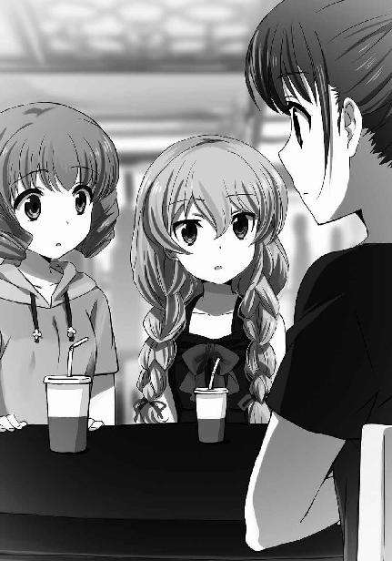
「そう......。こんな人通りの多い所で襲ってなんてこないと思うけど、お父さんが来るまではあたしたちが一緒に居てあげるから大丈夫よ」
花音がそう言った直後、まるで彼女のセリフを合図にしたかのように、
「ジャズ！」
野太い男の声がジャズの名を呼んだ。
「ハイ、ダディ」
男の声が切羽詰まっていたのに対して、少女の声は平坦だった。少なくとも、心細かったという印象は無い。
「急にいなくなるから心配したぞ。......あの、貴方たちは？」
ジャズの父親と思しき男性は、猜疑と警戒を隠せない視線を五十里たちへ向けた。
「ジャズさんのお父さんですね？ 私は服部刑部と申します」
代表して服部が立ち上がり、男性に向かって名乗る。疑われるのは当然なので──少なくとも服部はそう思ったので──不快感は抑えるまでもなく懐いていない。
「私たちは四人組の男がジャズさんをさらおうとしていたところに偶々居合わせました。見て見ぬ振りをすることもできず、ジャズさんを人目が多い場所にお連れしたという次第です」
「ソーでしたか......。モーシ遅れました。ワタシ、ジャズの父のジェームズ・ジャクソン、デス」
まだ疑いが完全に晴れたようではなかったが、多少警戒心を緩めた表情でジャズの父親が名乗り返す。娘より下手な日本語だったが、会話に支障を来す程ではない。その拙さにわざとらしさを感じたのは服部だけではなかったが、敢えてそれを問い糾す者はいなかった。
「誘拐犯は撃退しましたが、仲間がいる可能性を考えてその場を離れることを優先しました。もし警察に届けられるのなら、ご同行しますが」
「イエ、それには及びまセン」
「そうですか......。ご事情は敢えてうかがいませんが、人気の少ない場所は避けた方が良いと思います」
「ハイ。ホテルに戻ることにしマス。ムスメを助けてくだサリ、ありがトーございマス」
「いえ、当然のことをしたまでです」
「ありがとう。バイバイ」
父親に手を引かれたジャズが振り返って手を振る。
紗耶香、花音、あずさが手を振り返しながら見送った。
二人の姿が見えなくなったところで、服部が声を潜めて沢木に話し掛ける。
「沢木、何故あいつらを警察に突き出さなかったんだ？」
服部はさっきの四人を倒しただけで放置したことが納得できない様子だ。
親友という程ではないが、三年間それなりに親しくして服部は沢木の気性を把握している。服部は、沢木が誘拐犯如きに怖じ気づくはずはないのだが、という疑問も覚えていた。
「俺が相手をした連中だが、中国語を喋っていた」
「何ぃ？」
「しーっ！」
思わず声を上げる桐原を、隣の席から紗耶香がたしなめた。
「あっ、ああ、すまん」
何事かと集まってくる視線から目を背けて、桐原が同じテーブルの皆に謝る。しかしそれで、彼が口を閉ざすことはなかった。
「まさか......二年前と同じ？」
大亜連合という国名を挙げなくても、桐原の質問を理解できない者はこの場にいない。
「中国語を喋っていたというだけで決めつけることはできないんじゃないか？ 政府とは無関係の犯罪組織かもしれん」
服部の反論はもっともなものだ。
「確かにそうだが、あいつらの技からは軍隊格闘技の臭いがした」
しかし、沢木の言葉を否定する材料は無かった。
「いやだ、またあの時みたいなことが起こるの......？」
紗耶香が漏らした不吉な予想を笑い飛ばす声も、残念ながら無かった。
◇ ◇ ◇
ホテルに戻る、というジェームズ・ジャクソンのセリフは、噓ではなかった。
彼のセリフのうち、それだけが本当のことだった。
「ジョンソン大尉、さっきの怪しい日本語は何だ」
ジャズ──オーストラリア軍魔法師部隊所属、ジャスミン・ウィリアムズ大尉は、部屋に戻り盗聴器が無いことを確認し終えてすぐ、きつい口調で「父親」を詰った。
「如何にも日本に慣れていない外国人という感じだっただろう？」
ジェームズ・ジャクソンというのは偽名だ。
この男の本名はジェームズ・Ｊ・ジョンソン。ジャスミンと同じくオーストラリア軍魔法師部隊の大尉である。
「三流コメディアンではあるまいし。あれでは無用な注目を集めるだけだ。現にあの少年たちは不審を懐いていたようだぞ」
「マジか」
ジェームズの真剣味に欠ける返答に、ジャスミンがため息を漏らす。
「......次こそはパートナーを変えてもらおう」
「聞き入れられないと思うぜ」
ジャスミンが更に深いため息を吐く。
ジェームズが言うように、彼とのコンビは昨日今日始まったものではない。親子の設定も、工作任務のたびに押し付けられていた。
ジャスミン・ウィリアムズ大尉は調整体魔法師だ。彼女はほぼ計画されたとおりの魔法技能を持って誕生したが、調整の副作用と考えられている遺伝子異常を抱えていた。
身体が成熟しないのだ。
彼女が今の──十二歳相当の外見になったのは二十歳の時。そして、それ以降の九年間、全く成長が見られない。プロジェリア症候群（早老症）の逆パターンだ。
オーストラリア軍は彼女の遺伝子異常を治療しようとはしなかった。
少女の外見を持つ、十分な軍事訓練を積んだ魔法師。
妙齢の美女とはまた別の、高い利用価値があると考えたのだ。
その特長を活かす為、オーストラリア軍は彼女を潜入工作任務の専門家として育成した。
ただ十二歳の子供という肩書きと外見は、警戒されない代わりに様々な場面で行動に制限を受ける。それをカバーする「親」の役割を担うのがジェームズだ。二人は「親子」として、これまでも様々な任務でコンビを組んできたのである。
無論、ただ「親」を演じるだけならジェームズである必要は無い。
ジェームズ・Ｊ・ジョンソン大尉は身長百八十センチ、体重七十五キロ、褐色の髪に茶色の瞳。白人男性としては余り目立たない外見をしている。
とはいえ、この程度の特徴の無さならもっと印象が薄い人間はオーストラリア軍にもゴロゴロいる。ジェームズがジャスミンのパートナーに起用されているのは、戦闘魔法師としての能力を買われているからだ。
ジャスミンは遠距離広域攻撃を得意とする魔法師。体格から来る身体能力の低さも相俟って、接近戦を苦手としている。
一方、ジェームズは自己加速魔法を得意とする前衛型の魔法師。肉体的にも体格以上のパワーを持っており、ジャスミンを抱えて敵の前から離脱するなどという芸当も朝飯前だ。
一言で表現すれば、この二人は能力の相性が良い。長年コンビを組んでいることもあって、お互い気心も知れている。上層部が今更コンビ解消を認めるはずもなかった。
「あいつらの素性は分かったか？」
生産性のない愚痴は止めて、ジャスミンは自分をさらおうとした者たちに話題を転じた。
「大亜連合の工作部隊。俺たちのご同類だ」
「やはり追跡部隊か。一体どうやって私たちの素性を突き止めたのだろう？」
ジャスミンは納得顔で頷いた後、訝しげに首を傾げた。
「そりゃあ、日本軍の情報部あたりから教えてもらったんじゃないか？」
彼女の問いに対するジェームズの回答は、あっさりしたものだった。
「大亜連合軍と日本軍が手を組んでいるということか？」
「そうでなきゃ、やつらがあんな大っぴらに活動できるはずがない」
「講和条約を結んだばかりだし、それほど意外なことでもないか」
ジェームズの推理は深く考えたもののようには聞こえなかったが、ジャスミンはそれで納得した。彼女も薄々、同じことを考えていたのかもしれない。
「新ソ連とかＵＳＮＡにつけ込まれないよう、仲直りしたところを見せなきゃならんからな」
「非公式の作戦とはいえ協力し合うことで、各国の工作員に付け入る隙を見せない、というところか」
「それだけじゃないだろう。反講和派の破壊工作なんぞ許した日には、日本も大亜連合も面目丸潰れだ。大亜連合は脱走兵を自分たちの手で始末したいだろうし、日本は自国の領土内でこれ以上テロ事件なんぞ起こさせるわけにはいかない。多少の融通くらい利かせるだろうさ」
「私たちとは見事に利害が対立しているな」
「それも当然だ。何たって俺たちは、一大国家プロジェクトのスタートセレモニーを台無しにしようとしているんだから」
二人は現状について話し合っていただけではない。意見を交換しながら荷造りを進めていた。
「こっちは終わったぞ。ジャズ？」
「こっちも終わった。行こう」
ジャスミンが狙われたということは、当然このホテルもマークされている。言葉にするまでもなく、ジャスミンもジェームズもそう考えていた。
今もどうせ見張られているに決まっている。こそこそと裏口から出て行っても堂々とチェックアウトしても結果は同じだ。
二人は尾行をまく為に、少々手荒な手段を採ることにした。
◇ ◇ ◇
達也が真夜から与えられた使命は人工島竣工パーティーを標的としたテロの阻止。破壊工作員の捜索は今回対象外だ。
それは一〇一旅団にも伝わっていたようで、風間との打ち合わせも破壊工作員の所在を突き止めたら連絡する、という結論だった。あるいは、秘匿された戦略級魔法師である達也を、共同作戦中の大亜連合軍になるべく曝したくないという風間、あるいは佐伯少将の判断があったのかもしれない。
独立魔装大隊特務士官「大黒竜也特尉」として行動できない為、ムーバル・スーツをはじめとした特殊装備を使えないというデメリットはあるが、深雪と別行動しなくてすむのは達也にとってありがたいことだった。
「一旦ホテルに戻るか」
風間と密談したステーキハウスから少し歩いたところで、達也は深雪にそう話し掛けた。
「そうですね。少し、疲れました」
「タクシーを手配しますか？」
この後はホテルに戻る、と風間に告げた予定は噓ではない。達也が深雪の意思を改めて確認するのを横で聞いていた水波が、すぐに携帯端末を取りだして無人タクシーを呼び出すかどうか訊ねる。
すぐ近くといっても、徒歩ではホテルまで十分以上掛かるからだ。
「ええ、お願い」
「かしこまりました」
水波が自分のハンドバッグから携帯端末を取りだして、無人タクシーの配車センターにアクセスする。
しかし彼女はすぐ、訝しげに眉を顰めた。
「水波、どうした？」
達也が水波の困惑を読み取り問い掛ける。
「それが......タクシーセンターが応答しないんです」
「タクシーセンターが？」
頷く水波。
達也は自分の端末を取りだし、指を走らせた。
「──つながらないのは交通関係の一部だけ」
端末に目を向けたままで出した声が、呟くというには大きめだったのは、深雪と水波に聞かせる為のものだからに違いなかった。
「ソフト的な障碍ではないな。ハードウェアの故障......いや、破壊工作か」
深雪の顔色が変わった。水波も表情が硬くなっている。
「テロリストに先を越された......ということでしょうか？」
深雪の問いに、達也は首を振った。縦に、ではなく横に。
「局所的に通信網を遮断しても、代替の回線に切り替わるだけだ。別の破壊工作、例えば放火や武装蜂起などと連携しなければテロ活動としての意味は無い」
「あっ、つながりました」
水波が思わず発した言葉が、達也のセリフの証明となった。
「おそらく、逃走の為だな。計画的なものか、行き当たりばったりだったのかは不明だが、こちら側の追跡を振り切る為に中継基地局を幾つか破壊したのだろう」
通常のモバイル通信網に併設する形で秘密裏に設置されている軍用通信の中継局は、障碍物が多い市街地の通信を円滑化し、かつ大容量データ通信をスムーズに行う為のものだ。仮に民生用中継機ごと基地局が破壊されても別の中継ポイントに切り替わるだけだし、適当な中継機が無くても軍用通信機ならば成層圏プラットフォーム回線、衛星回線が直接使える。
中継基地局を破壊しても、一時的に部隊同士の連携を攪乱する程度の効果しか得られない。それも、ほんの一分、あるいはそれ以下だ。
しかし、逃走側にその一分未満で追跡チームを無力化する手段があれば、包囲網に短時間空いた小さな穴から逃げ果せるチャンスも生まれる。今回の敵は、そのわずかなチャンスを確実に活かすことができる手練だということだ。達也はそう推測した。
「......もしかして、破壊工作員はわたしたちのすぐ近くにいるのでしょうか？」
「すぐ近くにいた、と言うべきだ。新たな妨害工作も見られないようだし、既に逃亡済みの可能性が高い」
深雪の問い掛けに、達也が再度「否」を返す。
「水波、タクシーを呼んでくれ。行き先はホテルだ」
「かしこまりました、達也さま」
破壊工作の首謀者らしいという手掛かりだけでは、達也のエレメンタル・サイトを以てしても犯人までたどり着くのは不可能だ。今の段階では、彼にできることはない。
それに今回は、達也が張り切る必要は無い。「箱根テロ事件」の際とは、対応に当たっている人材の質が違う。ネットワークに対する工作であれば、真田と藤林が何らかの手掛かりを見つけるだろう。もう敵の所在を押さえているかもしれない。
適材適所という言葉で今の一件を棚上げして、達也は深雪、水波と共にやって来た無人タクシーに乗り込んだ。
◇ ◇ ◇
達也の予測は一部的中し、一部外れていた。
「ホテルをチェックアウトしたオーストラリア人工作員を追跡していた捕獲部隊が全滅しました。死者はゼロですが、全員行動不能です」
国防陸軍基地内の一室で、感情を押し殺した声による報告が為された。
臨時の指揮指令室として貸し与えられた部屋で、藤林が風間に作戦の失敗を伝えていた。
「全滅か......。敵の増援か？」
「いいえ。捕獲対象の魔法攻撃によるものと思われます」
風間たちは確かに破壊工作員の尻尾を摑んでいる。だが、身柄を拘束することには失敗していた。
「どのような攻撃だ？」
「高濃度のオゾンガスによる急性中毒です。麻痺症状が見られます」
藤林の具体的な報告に、同席していた真田が自分の端末を見ながら独り言のような口調で口を挿んだ。
「『オゾンサークル』か？」
「真田？」
「ハッ。申し訳ございません」
風間に名前を呼ばれて、上官を前にした態度ではないと真田は遅ればせながら気がついた。
真田は急いで立ち上がり、風間に向かって謝罪する。
「構わん。それより、『オゾンサークル』？」
「ハッ。オゾンガスを発生させる魔法は他にもありますが、密閉されていない屋外で訓練を受けたカウンターテロ要員をガス中毒で倒すとなると、『オゾンサークル』の可能性が高いと考えます」
「......確かに」
捕獲に向かわせた部隊はカウンターテロ訓練の一環で、銃器や爆薬だけでなく化学兵器の取り扱いも修得している。前触れが察知できるものであれば、ガス攻撃にむざむざとやられはしない。敵の魔法は捕獲部隊が対応する間もなく彼らを高濃度オゾンガスの中に捕らえたと見るべきだ。
それ程素早く、大量にオゾンを生成できる魔法となれば、真田が言うようにオゾンサークルが第一候補に挙がる。
「オーストラリアの魔法師がオゾンサークルを？」
「それ程不思議なことでもあるまい」
藤林が呈した疑義を、真田が否定する。
オゾンサークルはイギリスのウィリアム・マクロードとドイツのカーラ・シュミットが操る戦略級魔法として有名だが、元々は分裂前の欧州連合でオゾンホール対策として開発が始まった魔法だ。
分裂前の協定に従い、旧欧州連合諸国の間でオゾンサークルの魔法式に関する情報は共有されている。かつてイギリス連邦の一員だったオーストラリアの軍魔法師部隊が情報提供を受けていても、確かに不思議ではない。
しかしこれは逆に言えば、ジェームズ・ジャクソンを名乗るあの男性と、その娘ということになっている少女のどちらか、あるいは両方がオーストラリア軍の魔法師ということを意味している。
「藤林、あの二人の正体は分かったか？」
「いえ、まだです。ただ想子センサーの記録を見る限り、捕獲部隊を倒した魔法の使い手はジャスミン・ジャクソンと推定されます」
「少女の方か」
「あるいは、少女の姿をした方の魔法師です」
藤林のセリフに、風間が訝しげな表情を浮かべる。
「外見どおりの年齢ではないと？ 達也も似たようなことを言っていたが」
達也の名前に、藤林の表情が微かに揺れた。
しかしそれがどういう感情を反映しているのか、風間には分からなかった。
「諜報員に第二次性徴を抑制する薬物が投与されていた実例は隊長もご存じのことと思います。同様に、成長抑制措置をとられた工作員が存在する可能性は否定できないと考えます」
藤林が口にした非人道的な推測について、風間から特にコメントは無かった。
「大亜連合の部隊を妨害した者の素性は判明したか？」
代わりに彼はこれを訊ねた。
「はい」
今度は明らかに苦笑いと分かる表情を藤林が浮かべる。
「国立魔法大学付属第一高校の卒業生です。先日卒業式を迎えたばかりの、達也くんの一年先輩ですね。沖縄には卒業旅行で来ているようです」
「そういえば人工島の竣工記念パーティーに、五十里家の長男が招かれていたな。となると、邪魔をしたのは偶然、いや、お節介か」
風間がため息を吐きながら笑い声を漏らすという器用な真似をしてみせた。それ以上、一高卒業生に関する言及は、この場では無かった。
「藤林は引き続き工作員の身許調査を進めてくれ。真田は敵本隊の捜索だ」
「分かりました」
「ジェームズ・ジャクソンとジャスミン・ジャクソンの姿は上空のカメラで捉えてあります。逃がしはしません」
「よろしい」
真田と藤林が同時に立ち上がり、風間に敬礼して部屋から退出した。
［３］
ジャスミン・ジャクソンの偽名を使用しているジャスミン・ウィリアムズ大尉と、ジェームズ・ジャクソンの偽名を使用しているジェームズ・Ｊ・ジョンソン大尉がその情報を耳にしたのは、三月二十四日の夜のことだった。彼らは風間の部下の追跡から逃れ、イギリス系国際資本のシーサイドホテルで大亜連合脱走部隊の幹部と密かに合流していた。
「四葉の魔法師が？」
オウム返しに問い返したジャスミンに、反講和派のリーダーの一人で今回の破壊工作の首謀者であるダニエル・劉少校は頷きを返した。
「今日の式典に、四葉家次期当主とその婚約者が参加していました」
「式典というと、五年前の戦役で犠牲になった者たちの慰霊祭ですか？」
リウは細かい訂正は口にせず、再び頷いた。
「魔法師のリーダーが戦没者の為の式典に代理人を遣わすのは、別におかしなことではないと思いますが」
ジェームズがジャスミンの横から口を挿む。
「確かに不自然ではありません」
リウはジェームズの意見を認めた後、
「ですが、無視できることでもないと思います。彼らの沖縄入りが我々とは無関係だとしても、四葉の魔法師がここにいるというだけで作戦の大きな障碍になりかねません」
こう付け加えた。
「しかし、四葉のプリンセスとそのフィアンセはまだ高校生だったはず」
ジャスミンの反論に、リウは今度こそ首を横に振った。
「横浜の作戦では、当時高校生だった十文字家の現当主によって我が軍は大きな損害を受けました。子供だからといって侮ることはできません」
ジャスミンたちに一応の注意は促したものの、リウも達也と深雪の真価を──如何に危険な魔法師であるかを知らなかった。
理解していなかったのではなく、その知識が無かった。
◇ ◇ ◇
二〇九七年三月二十五日。
敵破壊工作員から要注意人物認定を受けた達也と深雪は、今日も精力的にカウンターテロ作戦に勤しんでいた──という事実は無い。
二人はホテルでゆったりとした時間を過ごしていた。
「偶には贅沢をするのも良いものですね」
「そうだな」
「私は落ち着かないのですが......」
バルコニーのテーブルで朝食をとっている主二人の会話に、給仕をしている水波が恐る恐る反論する。
三人が泊まっている部屋はツーベッドルームのスイートだ。今回は表向き、沖縄侵攻事件の犠牲者供養式典への出席と夏の慰霊祭の打ち合わせという公的な仕事に、四葉家を代表して来ている。他の十師族は式典に参加していなかったから、師族会議を代表してと言い替えても過言ではない。当然費用は本家持ちだし、十師族の権威を示す為という意味合いから用意された部屋は最高級だった。
彼らが宿泊しているスイートにはツインのベッドルームが二つある。部屋割りは達也が一部屋、深雪と水波が同室。わざわざ水波だけ別に部屋を取る必要を達也も深雪も認めなかった。
しかし水波はこのスイートルームが豪華すぎて、かえって落ち着かないようだ。婚約者の間に割り込む格好になって恐縮しているという面もある。彼女は何度も、控えめにではあるが、「自分はもっと安い部屋に」とアピールしていた。
「護衛役が護衛対象の側を離れてどうする」
だがその都度こう諭されて、返す言葉を失ってしまうのだ。水波が希望するような安い部屋となると、別のフロアになってしまう。それではいざという時に間に合わない。
「申し訳ございません」
結局水波は今回も、謝罪を口にして引き下がらざるを得なかった。
「水波ちゃんもそろそろ席に着きなさい」
テーブルの上に食事と飲み物が揃ったところで、深雪が優しく声を掛ける。
水波は素直に「はい」と答えて腰を下ろした。こういう時に逆らっても無駄だと彼女は既に学習していた。
水波がコーヒーを淹れ直し、ワゴンでお皿を下げていく。本当はホテルの従業員に任せるべきなのだが、水波は「高級な部屋に我慢している代わり」と言わんばかりにここでは我が侭を通している。──まあ、チップの習慣が無いから従業員にも実害は無い。そう思って達也も深雪も黙認しているのだった。
「深雪、疲れは取れたか？」
「はい。昨日は夕方からゆっくりさせていただきましたので、気怠さはすっかり取れました」
「それは良かった」
達也は深雪の言葉が強がりでないのを自分の「眼」で確認して、優しく微笑んだ。
深雪が恥ずかしそうに目を逸らす。
だが気弱な自分を恥じるように、目元を赤く染めながらすぐに視線を戻した。
「今日は少し遠出をしてみないか？」
「はい、喜んで！」
任務は？ と深雪は訊ねなかった。達也が自分の為に時間を割いてくれるというなら、彼女に異存があろうはずはない。
達也の決定に口出しするような不遜な真似をするなど、深雪には思いも寄らないことだった。
「水波もついてきてくれ」
「かしこまりました」
ちょうどテーブルに戻ってきた水波も迷わず頷く。彼女の場合は、主人の言い付けに背くという選択肢がそもそも無い。
「船に乗るから、二人とも動きやすい格好に着替えて欲しい」
「分かりました。少しお待ちいただけますか？」
「急かすつもりはない。その間に準備をしておくから、水波は深雪の支度を手伝ってやってくれ」
「仰せのままに」
深雪と水波が自分たちの部屋へ引っ込む。達也もまず着替えを済ませる為、ベッドルームに向かった。
◇ ◇ ◇
港に着いた達也は、深雪と水波を連れて外洋航行が可能なクルーザーに乗り込んだ。クルーザーといっても機関部と情報機器は軍用快速艇の物がそのまま使われているのだが、外から見ただけでは分からない。
「よう、来たな」
「ジョー、今日はよろしくお願いします」
クルーザーで達也たちを待っていたのは、昨日再会したばかりの桧垣ジョセフ軍曹だった。
「あの、お兄様......、これは？」
昨日は思い掛けない再会にただ驚いただけだったが、これにはさすがに理解が追い付かず、深雪は他人の前で「達也様」と取り繕うことも忘れていた。
「今日は飛行機を使う予定だったんだが、昨晩、桧垣軍曹から船を出してもらえると申し出を受けたんだ。それで、ご厚意に甘えることにした」
達也の説明が終わるのと同時に、ジョセフが平服姿にも拘わらず、深雪に向かって敬礼した。
「桧垣ジョセフ軍曹であります。本日は皆様の護衛を務めさせていただきます」
そう言って手を下ろし、ニヤリと愛嬌のある笑みを浮かべる。
「護衛といっても、実際には接待だな。お偉いさんたちも『四葉』の名は無視できないらしい。かといってうるさがられては逆効果。あーっ、どんなハブが出てくるか分からない」
どうやらジョセフは「藪蛇」と言いたかったようだ。
「基地の上層部が悩んでいるところに風間中佐から『四葉家の次期当主と面識がある下士官がいる』って助言があって、そいつに護衛の名目で観光案内させようって話になったんだ。つまり、俺だな」
ジョセフが深雪に向かってウインクする。いかつい容貌だが、意外に愛嬌があり様になっていた。
「そんな訳で達也に行きたい所を訊ねたら、石垣島ってリクエストがあったんで軍の高速艇を乗組員ごと借りてきた。軍用っていっても偉い人の視察用だから乗り心地は保証するぜ」
「石垣島へ？ そんなに遠くまで足を伸ばされるおつもりだったとは存じませんでした」
深雪がお愛想ではない、驚いた表情で達也を見上げる。
「天候次第では中止しなければならなかったからね。がっかりさせたくなかったんだ」
「びっくりしました......ですが、嬉しいです」
深雪は言葉どおりの笑顔を達也に向けた。
石垣島まで、約四百キロを三時間。波も決して穏やかではなかったが船内は驚く程静かで、軽い船酔いすらせず達也たちは石垣島に上陸した。
港には彼らの到着に合わせてレンタカーが用意されていた。接待という言葉が大袈裟に聞こえない至れり尽くせりぶりだ。
「じゃあ、一通り観光スポット巡りで良いか？」
「ええ、お願いします」
ジョセフが運転席に乗り込む。有名な観光地だけあって主要道路は自動運転に対応しているが、全ての道路を網羅しているわけではないので免許を持った運転手が必要なのだ。
沖縄本島育ちのジョセフが石垣島まで来る機会はそれ程多くないはずだが、それでもツボを押さえたスムーズなガイドだった。護衛とメイド付きではあるが、深雪は達也との思い掛けないデートを存分に楽しんでいた。
そして日も傾き、そろそろ本島へ戻らなければならない時間になって達也が車を向けるよう頼んだのは、有名な真珠専門の宝飾店だった。
ジョセフには表で待っていてもらい、達也は深雪と水波を連れて店内に入った。
「司波達也ですが」
「お待ちしておりました」
達也が名を告げると、店員が奥のテーブルへ案内する。
明らかに来店を予約していたと分かる対応に、深雪は訝しさと期待を覚えた。
「こちらでございます」
一旦奥に引っ込んだ店員が、持って来たネックレス用のジュエリーケースを丁寧に開ける。
「まあ......っ！」
中に入っていたのは、深雪が思わず感嘆を漏らす程に見事な真珠のマルチカラーネックレスだった。
白、黒、金、三色の真珠を組み合わせた、標準的な長さのグラデュエーション・タイプ。全てラウンド（真円）でエクボ（自然にできるキズ）がほとんど見当たらない。色の鮮やかさもテリ（光沢）も文句の付けようが無い、専門家でなくても分かる高級品だ。
「長さを見てもらえませんか」
「かしこまりました」
達也の言葉に店員が丁寧に頭を下げ、深雪に「お付け致しましょうか？」とうかがいを立てる。
「あの、わたしに......ですか？」
他に考えようも無い。だがそれでも思わず、深雪は達也にそう訊ねた。
「もちろんだ。お誕生日おめでとう」
深雪が口を両手で覆う。
「指輪は......いずれ、近い内に。今回はネックレスで我慢してくれ」
達也はいつもどおり平然とした顔をしているが、表情と口調以外の部分で、何となく照れ臭そうにしている。
「我慢だなんてそんな！ 嬉しいです。ありがとうございます、達也様」
感極まったのか、深雪の目が潤んでいる。彼女が「お兄様」ではなく自然に「達也様」と口にしたことに、水波だけが気づいていた。
◇ ◇ ◇
「ジョー、今日はありがとうございました」
「良いってことよ。お蔭で俺ものんびりできたしな」
ホテルのエントランスまでついてきたジョセフが、そのまま無人タクシーで去っていく。
それを見送っていた達也は、タクシーが見えなくなると同時に、通りの向かい側のビルを見上げた。
「お兄様？ 如何なさいましたか？」
その視線に気づいた深雪が達也に問い掛ける。
深雪のその声で水波が動いた。達也が目を向けているビルから、深雪を背中にかばう位置に立つ。
「慌てる必要は無い」
達也にそう宥められても、水波の警戒は中々解けなかった。
「敵......ですか？」
深雪が達也の視線をたどっても、カーテンが閉まった窓しか見えない。自分だけかと思って窺い見れば、水波の目も定まっていない。達也が何を見ているのか、水波にも把握できていない証拠だ。
「金で雇われた情報屋の類だろう。捕まえても大したことは聞き出せない」
聞き出せないだろう、でもなければ、聞き出せないに違いない、でもない。「聞き出せない」と断言する達也に、深雪はそれ以上質問も反論もできなかった。
達也が深雪の背中をそっと押す。
達也に促されるまま、深雪はホテルの回転扉をくぐった。
◇ ◇ ◇
深雪、達也、水波の順にホテルへ入っていくその背中を、道路を挟んで向かい側にあるビルの一室で見送って、ジェームズ・Ｊ・ジョンソンオーストラリア軍大尉は詰めていた息を吐き出した。額を手で拭おうとして、掌が冷たい汗に濡れているのを今更のように自覚する。
（緊張......いや、恐怖していたのか？ この俺が？）
現在のオーストラリアは外交に消極的なだけでなく、それ以上に、海外派兵に消極的だ。鎖国という表現の妥当性はともかく、表向き孤立政策をとっていることに間違いはない。他国との同盟関係も無く、合同演習の類にも一切参加していない。
だがそれは、ジェームズのような種類の軍人に実戦の機会が訪れないという意味ではない。
オーストラリアは資源が豊富な国だ。鉱物資源だけではない。砂漠化の停止と砂漠の緑化に成功したことにより、今や世界でも数少ない自然農業で食糧を賄える国でもある。領土的野心に燃える他国の、工作機関相手の謀略戦は日常的と言える程に頻発している。
また表向き孤立政策をとっていても、完全な中立を堅持しているわけではない。今回のように、秘密の非合法作戦で他国の武装組織と手を組むことは決して珍しくない。
軍にあって工作任務を専門とするジェームズは、この暗闘の最前線で活躍してきた百戦錬磨の戦闘魔法師だ。死線を潜り抜けたことも一度や二度ではない。大抵のことには動じない度胸を身につけている、と彼は自負している。
（この俺が......あんな餓鬼に？）
しかしどんなに否定したくても、それが誤魔化しでしかないと彼自身が理解していた。
（俺の監視に気がついたことだけじゃない。こっちの精神を貫き心臓まで届くような、死神の如きあの視線......。『アンタッチャブル』の名は伊達じゃないってことか）
およそ三十年前、大漢崩壊と共に囁かれ始めた戒めの言葉。
──日本の四葉に手を出すな。手を出せば、破滅する。
現に、ジェームズが属する裏の世界では、大亜連合が日本相手に不利な立場で講和を余儀なくされたのは四葉に手を出したからだ、という噂が真顔で語られている。朝鮮半島南端を灼いた戦略級魔法は四葉家が開発したものではないか、という声も少なくない。
また、世界最強の魔法師部隊の呼び声高いＵＳＮＡのスターズが、日本に手を出して四葉家に撃退された。──そんな未確認情報も彼のところに回ってきている。
余りにも華々しい話ばかりで、ジェームズは全てを額面どおりに受け取る気にはなれない。
今回、ジェームズたちの敵として日本軍の指揮を執っているのは、インドシナ半島で勇名を馳せた『大天狗』風間玄信。彼をはじめとして、日本軍所属魔法師の実力は高い水準にある。
日本の魔法戦力は、四葉だけではない。大亜連合の奇襲部隊を撃退したのも、飛行ユニットを世界で初めて実戦投入した軍の魔法師部隊の力によるところが大きい。
状況を決定づけた戦略級魔法も日本軍が開発した秘密兵器だろうというのが、ジェームズを含めたオーストラリア軍の見解だ。常識的に考えて、あれは一民間組織が持つには大きすぎる力だ。そんなことを許容すれば、国のバランスを保てるはずがないからだ。
──それでも四葉は、決して侮ってはならない相手だ。
──たとえそれが、十代の学生であっても。
そのことをジェームズは、改めて心に刻んだ。
◇ ◇ ◇
深雪の誕生日の為に達也が手配していたのは、プレゼントだけではなかった。
二人は泊まっているホテルの高級レストランでフルコースのディナーを楽しみ──水波は空気を読んで、というより空気に当てられて辞退した──、その後展望ラウンジに席を移してグラスを傾けていた。
もちろん二人ともノンアルコールカクテルだ。「少しくらい......」という深雪のリクエストは、達也がやんわりと却下した。彼は京都のホテルで真由美を相手に苦労した経験を忘れていない。
言葉で止めるだけではない。達也は深雪のグラスの中身にまで「眼」を配っていた。わざわざ『精霊の眼』を使ってアルコール度数をチェックしていたのだ。
だから、断言できる。深雪はアルコールを摂取していない。
「お兄様......わたし、何だか......」
それなのに、横に並べた隣のソファから達也を見上げる深雪の目は熱く潤み、瞳の焦点はぼやけていた。
深雪が着ているカクテルドレスはオーソドックスなＡラインで、スカート丈は膝下だ。普通なら椅子に座っても膝が見える程度。ところが、ソファがかなり低い上にクッションが効いている為、彼女のほっそりと形の良い足が膝のかなり上まで見えている。
幸い衝立で仕切られているので他の客の目には触れない。しかし達也の目には、低いソファに浅く腰掛けている所為で両膝を立てるような座り方になっている姿が飛び込んできている。深雪は行儀良く座っているだけだから余計、達也は目のやり場に困っていた。
「そろそろ部屋に戻ろうか」
体調が悪いのではなく、雰囲気に酔ったのだろう。
いずれにせよ、もう戻った方が良いと判断して、達也は深雪を促し立ち上がった。
深雪は大人しく達也に続いた。彼女はここでごねるような少女ではない。達也の言葉ならば尚更だ。
その代わり、深雪は達也の左腕にするりと自分の右腕を絡ませた。
ピタリと身を寄せ、甘えた目で達也を見上げる。
ただの兄妹だった時なら軽く叱りつけてそっと腕を解いているところだが、達也は深雪のするがままに任せた。二人の立場を考えれば、不自然な行為ではないからだ。
深雪にもそういう計算があったのだろう。それでも微かに安堵の表情を浮かべたのは、拒絶される可能性を、ほとんどあり得ないと知りつつ恐れていたからか。
達也は深雪に左腕を預けたまま展望ラウンジを後にした。
部屋に入る直前、深雪は達也の左腕に絡めていた右腕を解いた。
何事も無かったかのような顔で留守番をしていた水波を労う。
達也も水波を労った後、先に入浴するよう深雪に声を掛けてベッドルームに引っ込んだ。
ドアを閉め、スーツを寝間着代わりのルームウェアに着替えて、ライティングデスクの前に座る。
そうして、今日の戦果に「眼」を凝らした。
意識の主な部分を情報次元へ向ける。
無数に枝分かれする因果の系統樹。去年までは三次元的なビジョンを順番にたどっていくことしかできなかったが、先日の爆破テロ事件の捜査で黒幕を探して情報流を数え切れないくらい何度も上り、下ったことで、限定的にではあるが、因果の連なりを俯瞰して視る力を達也は手に入れていた。
その俯瞰的な視界の中で、彼は自分自身から放たれた情報の欠片をすぐに見つけ出した。
マーカーは外れていない。彼は検索対象の情報を読み込みに掛かった。
（......ジェームズ・ジェフリー・ジョンソン。オーストラリア軍所属の魔法師。階級は大尉）
達也が「視て」いる情報は、ホテルに帰ってきた時、自分たちを監視していた敵工作員のものだ。距離があり、顔がはっきり見えたわけではなかったが、あの場で視線の主が白人男性だということは何となく分かった。
それで、前日風間に写真を見せられた「親子」の片割れではないかと見当をつけ、追跡用の想子マーカーをイデア経由で撃ち込んでおいたのだ。
（現在位置は久米島沖北東海上。漁船を買収でもしたのか？）
残念ながら、マークした本人以外の情報までは読み取れなかった。マーカーを手掛かりに「視野」を広げていく技術は、まだ修得中の、不完全なものだ。
それでも「ジェームズ・ジャクソン」の正体が「ジェームズ・Ｊ・ジョンソン大尉」であるという情報は価値が高い。達也は自分が手にした成果を過小評価せず、旅行鞄からノートサイズの大型端末を取り出して風間宛てに今判明したことを暗号化して送信した。
入浴その他諸々を済ませ、後は寝るだけとベッドルームに戻った達也は、自分が使っていないベッドにパジャマ姿の深雪が腰掛けているという状況に遭遇した。
パジャマ自体には透けているとか襟刳りが深いとかボタンを多めに外しているとかサイズが大きすぎて肩が露出しているとか、その手の劣情を誘う要素は無い。
だが絹のような薄い生地──本物の絹かもしれない──越しに、下着を着けていない胸の輪郭が分かってしまい、達也はさり気なく視線を外した。
「......何か相談したいことがあるのか？」
首から下を見ないようにして彼は妹兼婚約者に訊ねる。
「いいえ？ 何も困っていることはありませんよ？」
達也の質問に小首を傾げる深雪の口調は、何処かふわふわしたものだった。
さっきから何度も確認したことであるにも拘わらず、達也は思わず、深雪の血中アルコール濃度へ「眼」を向けた。
「......そんなに視ないでくださいますか。恥ずかしいです......」
深雪が目元を赤く染め、潤んだ瞳で達也を見上げる。
「あ、ああ。すまない」
これには達也といえども、多少の動揺は免れなかった。
彼でなければ「多少」では済まなかっただろう。理性を蒸発させてライカンスロープに種族チェンジするか、精神の耐久値を一気に削られ落ちていたに違いなかった。
「お兄様、もうお休みになられますでしょう？」
口調だけでなく、言葉遣いも少々怪しかった。
やはり、アルコール無しで酔っているに違いない。
達也は深雪の様子を見て、そう結論づけないわけにはいかなかった。
「そのつもりだ」
「それではどうぞ、ベッドへ。灯りはわたしが消しますので」
「......頼む」
この部屋から追い出すことは無理だと達也は悟った。
水音は聞こえないが、水波はまだ入浴中のはずだ。浴室を出れば、深雪が何処にいるのかすぐに分かる。
誤解は避けられない。達也はそんな諦めと共に目を閉じた。
隣のベッドからすぐに幸せそうな寝息が聞こえてきたことが、わずかな救いだった。
真夜中、足音を殺しながら慌てて部屋を出て行く気配に、達也は気づかないふりをした。
［４］
翌日の朝。
二人してバツが悪そうな顔で目を逸らす深雪と水波に、達也は今日の予定を告げた。
「今日は予定どおり久米島に行く」
これは昨日のようなサプライズではなく、最初から計画されていた。
と言っても、任務に直接の関係は無い。時間があれば防衛対象の人工島を直接見ておくつもりだが、それはあくまでも「時間が余ればついでに」程度の位置づけだ。
今日の主目的は観光だ。昨日は深雪へのプレゼントがメインだったが、今日の趣旨は気楽に時間を潰すことにある。
今回の任務の成否基準は二十八日の人工島竣工記念パーティーを無事に終わらせられるかどうか。しかし、破壊工作を事前に阻止する為には敵の作戦能力を奪うことが必要で、それには敵の主兵力が何処に隠れているのかを突き止める必要がある。そして、その捜索は国防軍の仕事だ。敵の主力部隊が見つかるまでは、達也の出番は無い。
沖縄まで来てホテルでじっとしているのは、達也でも時間がもったいないと感じる。だからといって、自分の仕事でもないのに外国の魔法師を探しに出掛ける気にもなれなかった。
そんな訳で、達也は今日の空き時間をバカンスに当てることにしたのである。
「飛行機の出発時間は八時半。ＣＡＤはそのまま機内に持ち込める」
このあたりのことも、改めて言う必要がない確認事項だ。
ＣＡＤの持ち込みは公務員の場合、警察に申請すれば大抵認められる。魔法大学生、魔法科高校生もこれに準じる。十師族の特権を行使したというわけではない。その代わり、いざという時に救助義務が発生するのだが。
「準備は整っております。後は達也さまと深雪さまに着替えていただくだけです」
「ご苦労様」
「まずは朝食を済ませよう」
水波の先回りした気働きを深雪が労い、達也が先に立って朝食が用意されているホテル内のレストランへ向かった。
◇ ◇ ◇
「達也さんっ！」
空港の出発ロビーに入った途端、達也は横合いから声を掛けられた。
「ほのか。雫も一緒か」
声を掛けてきた相手はほのか。その隣には雫もいる。
達也は二人の姿に驚かなかった。深雪が二人から旅行に誘われたことは達也も聞いている。その行き先と目的が自分たちの任務と重なっていたことも。
「うん。おはよう」
見知った顔は、ほのかと雫の二人だけではなかった。
「中条先輩、おはようございます」
「おはようございます。深雪さんたちも久米島へ？」
「はい」
「先日のお彼岸法要会場で招待客の中にいるのを見ましたから、もしかしたら何処かで会えるかなーとは思っていましたけど、偶然ですね」
「わたしも先輩方が久米島へ行かれるということはお聞きしていましたから、もしかしたら、とは思っておりました」
深雪はあずさのセリフに長めの相槌を打った後、服部、五十里、花音、桐原、紗耶香、沢木とも順番に挨拶を交わした。
待ち合わせをしていたわけではない。だが偶然にしても意外すぎるという程ではなかった。
達也たちが乗ろうとしている便の到着時間は午前九時。
沖縄本島に宿を取って久米島観光をしようとすれば、出発にはちょうど良い時間だ。
日付が重なったのは全くの偶然だが、時間が重なったのはある程度必然と言える。
「光井さんたちともお話していたんですけど、深雪さんたちもご一緒しませんか？」
達也たち三人、ほのかと雫の二人、あずさたち七人、合計十二人で固まって搭乗手続きを待っている最中、あずさがそんなことを言い出した。言う迄もなく、久米島でも一緒に行動しないかという意味だ。
深雪が「どう致しましょう？」という表情で達也の顔を見上げる。
「良いんじゃないか」
達也は頷くだけでなく、あずさにも聞こえる声ではっきりと告げた。
深雪は達也に向かって「はい」と返事をした後、あずさに視線を戻した。
「よろしくお願いします」
丁寧にお辞儀する深雪。服部や五十里の承諾を得る前に、達也たちの同行が決定した。
久米島に到着した一高生及び一高ＯＢ・ＯＧ一行は、まず雫が手配したグラスボートで島の周りを一周することで話が纏まった。当初の計画では雫たちも乗り合いのボートを利用する予定だったのだが、人数が増えたので急遽、一隻丸ごとチャーターすることにしたのだ。
那覇空港を出発する直前に依頼して久米島に到着した時には既に手配が完了していたのは、さすがに日本有数の大富豪・北山家と言うべきか。
空港から兼城港まで直線で約五キロ。
一行はレンタサイクルで港へ向かい、少しの待ち時間の後、船に乗り込んだ。
「うわぁ！」
「これは凄いですね......」
船内で花音が歓声を上げ、あずさが感嘆を漏らした。その驚きも、大袈裟ではないだろう。
雫の為に北山家がチャーターしたグラスボートは、側面にも海中を観賞できるのぞき窓がついた半潜水艇タイプ。
ただ、この船について「窓」という表現は妥当ではないだろう。このグラスボートは喫水下の側面が船首・船尾を除いてほぼ透明になってた。床もほんの一部を除いて透けている。船室から見る景色はまさしく海中パノラマだった。
海中だけでなく、甲板上から見る景色も素晴らしい。真っ白なビーチもあれば、奇岩がそびえる崖もある変化に富んだ地形。一高生、一高卒業生たちはボートの中を上ったり下りたり忙しく動き回っていた。
ボートは久米島の南端から東北東へ針路をとって、一番の名所である無人島「はての浜」の沖合いに泊まった。
「何をしているのかしら」
「この船は喫水が深いから、上陸用のゴムボートを組み立てているんじゃないかな」
花音の疑問に五十里が答えたように、船員が甲板でゴムボートを膨らませ、船外機をつけている。
ゴムボートは六人乗りが二艘。サイズからしても船外機の出力からしても、小型船舶の免許を持っている船員の同乗が必要なのだが、
「達也さん、持ってたよね？」
「小型船舶免許か？ 持っているぞ」
「あっ、僕も持っているよ」
雫の問い掛けに達也が頷き、続いて五十里が手を挙げたので、十二人が一度に無人島へ渡れることになった。なおこの面子の中では、水波が達也と同じで二級と特殊小型（水上バイク用）を、服部が特殊小型を持っている。
達也、深雪、水波、ほのか、雫、沢木。
五十里、花音、服部、あずさ、桐原、紗耶香。
この組み合わせで、十二人はコーラルサンドが堆積してできた白い砂州に上陸した。
達也のボートでは沢木が先に降りて深雪や雫の下船に手を貸している。
「達也さま、ボートは私が見ています」
船外機の固定状態をチェックし終わった達也に、水波がそう申し出た。
「では、頼む」
「お任せください」
達也は無駄に意思を問うことをせず、水波に留守番を任せた。
ここに来ているのは彼女にとり上級生ばかりだ。無理に同行させても気疲れするだけだろう。
それより一人で待たせておいた方が本人ものんびりできると達也は判断したのだった。
「では、もう一艘の方は俺が見ていよう」
ほのかに続いてボートを降りた達也に、沢木がそう話し掛ける。そして彼は達也の返事を待たずに、隣のボートへ歩いていった。
向こう側から「わたしと服部くんは別に！」というあずさの焦った声が聞こえてきたが、自分が関与すべきことではないと思って達也は口出ししなかった。
隣を気にしている場合ではなかった。
達也を待っていたほのかが、いきなり上着を脱ぎだしたのだ。
前ボタンの半袖チュニックの下はビキニタイプのトップとホットパンツタイプのボトムの、セパレートの水着だった。恵まれたスタイルに加え、いつもは二つに縛って肩に下ろしている髪をアップにしていることもあって、中々に大人っぽくセクシーな姿だ。
亜熱帯の久米島とはいえまだ三月。水着姿には少々早い。海水浴やスノーケリングで海に入っている観光客は、皆無ではないにしても、ちらほらとしか見えない。
ほのかの大胆な水着姿は同行者だけではなく他の観光客の目も惹いていた。
「達也さん、向こうの方まで行ってみませんか」
しかしほのかは自分に浴びせられる邪な視線を（表面的には）まるきり無視して、達也の腕にしがみついた。
わざとなのか、ギュッと胸を押し付ける。
大胆すぎるその行為に、深雪が目を見張った。
眦を吊り上げるまでに至らないのは、呆気にとられているからか。
その隙に、ほのかが達也を引きずっていこうとする。
彼女らしくない強引さに驚いているのは達也も同じだった。もっとも、彼がほのかの腕を振り解かないのは、困惑の余り状況が把握できていないからではない。
危うかったからだ。
ほのかには常日頃から「背水の陣」的な必死さがつきまとっている。そして今日は、その印象が特に強い。
腕にしがみついて達也を見上げる顔は、小悪魔の笑顔を作っている。
そう──「作っている」のが容易に分かってしまう。
達也はほのかが前を見た瞬間に、深雪へ目を向けた。ほのかのことは友人として大切だが、達也にとっては深雪の気分を害してまで心を配るべき相手ではない。
しかし深雪も、いつものほのかではないと感じているようで、嫉妬ではなく彼女を気遣うような視線を達也に返した。あるいは昨日のプレゼント──物だけには限らない──が深雪に余裕を与えていたのか、達也を咎めている様子は無かった。
もちろん、ほのかの大胆すぎる行動には、その背景となる出来事があった。
──ほのかと雫が沖縄に来たのは三月二十五日。昨日のことだ。そして更にその前日、ほのかは珍しく雫とは別行動でエイミィ、スバルと都心のファッションスポットへショッピングに出掛けていた。
別に、ほのかと雫が喧嘩をしていたというわけではない。
雫は魔法師の雛鳥であるのと同時に「お嬢様」でもある。彼女は「お嬢様」に必要な教養を身につける為、学校の勉強以外に多くの習い事を抱えている。
長期の旅行に出る前後は、その期間の「お稽古」を消化する為いつも以上に忙しくなってしまう。そんなわけで、雫は旅行前に身動きが取れなかったのだ。
エイミィのお誘いは「賑やかな所をぶらぶらしよう」というもの。
ほのかは普段、人混みの中には出掛けない。
しかしそれは雫が喧騒を苦手としているからで、ほのか自身は賑やかなのが嫌いではなかった。同じ年頃の若者が発散するエネルギーは、ほのかにとってむしろ好ましいと感じられるものだ。
言い方を変えれば、雫の都合が悪くなければできない街遊びを久々に堪能しようという格好だった。
食べ歩きやウインドウショッピングが目的だから、エイミィやスバルには特に目当ての品物はない。だがほのかには、せっかくだからついでに買いたい物があった。
「実は、明日から沖縄に行くんだけど」
ファーストフード店でこう切り出したほのかに、
「えっ、そうなの!?」
エイミィは驚きと共に「羨ましい」という気持ちを包み隠さぬ目を向け、
「知ってるよ。久米島の人工島のパーティーに出るんだろう？」
スバルは事情通なところを見せつけた後、ほのかに「それで？」と続きを促した。
「沖縄に持っていく服を買いたいんだけど......」
「パーティードレス？」
エイミィの質問に、ほのかは首を横に振った。
「司波君に見せる為の服か」
スバルの推理を、ほのかは肯定も否定もしなかった。だが恥ずかしそうに沈黙しているのは、この場合、頷くのと同じだ。
「なる程、それで私たちのアドバイスが欲しいんだね！」
謎は解けた！ と言いたげな勢いでエイミィが断定する。
それは誤りではなかった。
「......どんなのが良いと思う？」
ほのかが怖ず怖ずと二人に意見を求める。
「水着が良いんじゃないかな。ほのかだったら、上はビキニで」
それに対するスバルの答えは、あっさりしたものだった。
「ええっ!?」
ほのかが狼狽の声を上げた。飲み物を口に含んでいたら、吹き出していたことだろう。
「あっ、似合いそう。それが良いよ。でも、幾ら沖縄でもまだ寒くない？」
エイミィは無責任に、あるいは他人事で話を決定の方向へ持っていこうとしている。
「海に入るわけじゃないから。寒かったら日焼け止めと一緒に防寒クリームを塗れば良いし」
「スバル、頭良い～」
エイミィの称賛を得意げな顔で見返すスバル。
「ちょっと待ってよ！」
そこへほのかが、焦って異議を申し立てる。
「私だけ水着っていうのは、ちょっと......」
「久米島だろう？ だったら泳がなくてもビーチには行くんじゃないかい？」
「......多分」
「それなら水着でもおかしくないよ。ほのかしか着ないんだったら、余計にアピールできるじゃないか」
「恥ずかしいよっ」
テーブルを叩きそうな勢いのほのかに、スバルは冷たい視線を向けた。
「ほのか」
その眼差しに相応しい声で、スバルが怯むほのかの名を呼ぶ。
「ほのかはさ、本気で司波君を深雪から奪う気はあるのかい？」
思い掛けない真面目な口調に、ほのかばかりかエイミィまで絶句してしまう。
「ああ、この訊き方はちょっと意地が悪かったね。ほのかが本気で司波君のことを好きなのは知っている。僕が言いたいのは、本気で深雪に勝つ気があるのかい？ ってこと」
「それは......」
ほのかは何故か、その後に続くべき「もちろん」というフレーズを口にできなかった。
「こんなことは僕よりほのかの方が良く分かってると思うけど、まともに勝負しても深雪には勝てないよ」
「......分かってる」
厳しい現実を突きつける言葉。それはあらゆる分野において正解とは言い切れない「現実」だったが、達也の心を争うという肝心の「戦場」においては疑いようもなく正しい。
「ほのかと深雪は細かな違いはあっても大枠で同じタイプだ。一途で真面目。献身的で、時々暴走する傾向があるけど、基本的に慎み深い」
ほのかは何も言い返せない。スバルの言うことは、一々当を得ていた。
「リードを許している相手と同じアプローチで攻めても、差は縮まらないんじゃないかな」
言い返したのは、ほのかではなくエイミィだった。
「じゃあさ。スバルはどうすれば良いと思うわけ？」
「僕が、じゃなくて、ほのかが、だけどね。アプローチを変えるべきだと思うよ」
「具体的には？」
「まずはイメチェンかな。ほのかはスタイルが良いんだから、それを武器として最大限に活かす。セクシー路線を目指すべきだろうね」
「ふむふむ」
頷いたのもエイミィ。ほのかは口を開け閉めしているが、そこから声が聞こえてこない。
「そして深雪がしそうにないことをすれば良い。例えば、一人だけ大胆な水着姿になって胸を押し付ける」
「無理だよっ！」
遂に、ほのかが短い悲鳴を上げた。だがスバルもエイミィもほのかをチラリと見ただけで、つまり本人そっちのけで、作戦会議を続ける。
「そんなことして、司波くんに引かれないかな」
「まさか。あの男にそんな可愛げがあるもんか」
「あーっ、まあ、そうだよねぇ」
「それにこのままじゃ、ほのかの負けは決まっているようなものだよ。リスクを恐れている場合じゃない。そうだろう、ほのか」
「う、うん......」
いきなり話を振られて、ほのかは気圧されたように頷いてしまう。
「よし」
そう言って、スバルは立ち上がった。それだけでなく、腕を引っ張ってほのかを立たせる。
「えっ？」
「そうと決まれば、早速水着を見に行こう」
呼応するように、カップをトレーに載せてエイミィも立ち上がった。
「思いっきり大胆なのを選ばなきゃね」
「えっ？ えっ？」
スバルがほのかを引っ張って店を出て行く。カップを返却口に戻してきたエイミィが、小走りで二人に追いついた──
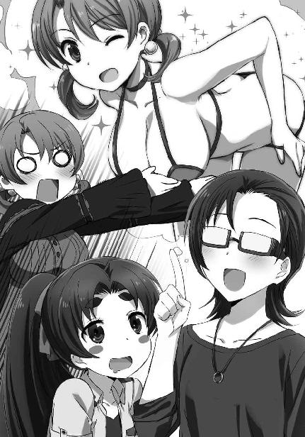
そんな一幕があって、ほのかは羞恥心を小悪魔の仮面で隠し、達也に積極的なアピールを繰り広げている。
ようやく迷いを吹っ切れたのか、あるいは卒業生組の手前、達也の浮気を許していると受け取られるのはまずいと考え直したのか、深雪が達也の隣に駆け寄った。
それでも、ほのかは達也の腕を抱え込んで離さなかった。
ほのかが達也にじゃれつく様を見ていたのは、同じ砂州の観光客だけではなかった。
隣の砂州、「ナカノ浜」から「はての浜」へ視線を送っていた中年の男性が、その軽装に相応しからぬゴツい携帯端末を慣れた手つきで操作する。
その視線を達也の感覚は捉えていたが、他の野次馬とまるで温度差が無かった為、特別に注意を向けることはしなかった。
◇ ◇ ◇
グラスボートに戻っても、ほのかの積極アピールは続いていた。さすがにチュニックは着ているが、ボタンを上三つまで外して水着のブラを見せている。
幸い、ほのかの格好に「はしたない」と顔を顰める者は船内にいなかった。だが、卒業生組が距離を置いてしまったのはやむを得ないと諦めるしかない。
それに、花音や紗耶香から達也が視線で責められたのも仕方が無いことだろう。彼女たちも達也が二股を掛けているわけではないと分かっている。しかし、報われない恋で辛い思いをしているのは女の子──ほのかなのだ。同じ乙女として、達也に厳しい目が向けられるのは、もうどうしようもない。
誘惑を仕掛けるほのかと、それを牽制する深雪と、非難の視線を浴びせ掛ける花音と紗耶香。
それだけのプレッシャーを向けられながら、異常に気づいたのは達也が一番早かった。
「ほのか、少し良いか」
「達也さん？」
いきなり達也の声の質が変わったことにほのかが戸惑う。彼女の言葉にならない問い掛けには答えず、達也はほのかから離れ、操舵室へ向かった。
達也の様子に普通ではない兆候を感じた服部がその後を追う。服部の背中には沢木と桐原が続いた。
緊急事態の到来を告げる達也のセリフを聞いたのは、その三人だった。
「船長、前方五百メートルの海底付近に艦影が探知できるはずです」
「何ですと？」
達也の背後では服部、沢木、桐原が緊張した顔を見合わせ、操舵室内では船長がクルーにソナーを前方海底へ向けるよう命じた。
「いました！ 推定全長八十メートル、通常型潜水艦と思われます！」
「何でそんな物がここに!?」
遅れてやって来た五十里の背中にくっついていた花音が、悲鳴を上げた。
「国防軍の物じゃないのか？」
沢木が疑問を呈する。しかし実のところ彼自身も、その可能性はゼロに近いと考えていた。
「国防軍の物なら問題無い。違う場合を想定して対応すべきだ！」
そして服部が、仮説を論じることの無駄を答えとして返す。
「進路反転！ 面舵一杯！」
まさに船長は、服部と同じ考えで即対応した。
その指示に従い、船が右に弧を描き始める。
こちらの動きから気づかれたことを悟ったのか、不審潜水艦も機関停止の状態から動き始めた。それだけで、国防軍の潜水艦である可能性が消える。
「注水音を確認！ 不審艦が魚雷発射態勢に入った模様！」
ソナー員が悲鳴を上げた。
「発射管への注水音が聞こえるのか。旧式艦だな」
「そんなことを言っている場合か！」
吞気な──あるいは不敵な──呟きを漏らした達也に服部が嚙み付く。
達也は服部の非難には応えず、
「水波」
何時の間にか卒業生三人の背後に控えていた水波の名を呼んだ。
「はい、達也さま」
こんな場合にも拘わらず、水波の返事はいつもどおりの落ち着いたものだ。
「対物障壁用意。設置場所はボートから三十メートル。サイズは各魚雷前方に半径十メートル。ボートの進路を塞ぐのは厳禁だ。できるな？」
「お任せください」
達也のリクエストに、水波は全く取り乱した様子無く、かつ自信を窺わせる口調で頷いた。
「魚雷、来ます！」
白い航跡が二本、速度を増しながらたちまち迫る。
こちらはまだ回頭中で魚雷を躱せる状態ではない。
「水波」
「はい」
水波が既に構えていた携帯端末タイプのＣＡＤを操作する。
水中に生じた対物障壁を魔法的な知覚で捉えたのは、達也だけではなかった。
水柱が上がる。
しかし、衝撃は押し寄せてこない。
水波の対物障壁が爆発を完全にはね返したという側面もあったが、そもそも魚雷自体が破壊を目的とした物ではなかった。
「発泡魚雷。足止めが狙いか」
達也のセリフは独り言というより、服部たちに解説しているような趣があった。
水波が障壁を解除したことにより、海面に広がった泡がゆっくりと押し寄せてくる。
「僕に任せて」
五十里がＣＡＤを操作して大きく右腕を振った。
海面の泡が、ワイパーで拭き取られたようにかき消される。
「次はおそらく、魚雷型有人艇による襲撃」
「第二波、接近！」
達也の予測にかぶせるようにして、ソナー員の叫びが耳に届いた。
「お返しだ！」
四条の航跡を刻む魚雷（型の何か）に、服部の魔法が炸裂する。
海中に生じた気泡が四基の魚雷を包み込んだ。スクリューが推進力を発揮できなくなっただけでなく、前へ進む慣性も泡に食われて魚雷が立ち往生する。
魚雷型有人艇の背面中程が大きく開いた。
中から一人ずつ、ドライスーツのような戦闘服を着た男が飛び出す。
「任せろ！」
海面から跳び上がった男へ向かって、沢木が甲板を蹴った。
男より高くジャンプした沢木が、鋭角に軌道を変え急降下する。
沢木のキックが、敵を海中に叩き落とした。
飛行魔法ではない。ベクトル操作による空中機動。
沢木は空気を足場に再び跳び上がり、もう一人撃墜する。
残る二人の敵が、グラスボートに乗り込んだ。
「任せて良いんじゃなかったのかよ！」
セリフの内容に反して、桐原の口調は楽しそうなものだった。
「爆釣だぁ！」
桐原がノリの良い気合いと共に、手に構えた釣り竿を敵に打ち込む。
敵の男は、腕を上げて桐原の打ち込みを受けた。いや、腕の前に展開した対物障壁で桐原の高周波ブレードを防御した。
「おりゃおりゃおりゃ！ はっはっはぁ！」
しかし桐原の攻撃は、それで終わりではなかった。高周波ブレードに併用される自壊防止術式で強靱な得物と化した釣り竿で雨霰と剣撃を繰り出す。
哄笑を放ちながら相手を打ち据える桐原の狂戦士ぶりは、どう見ても彼の方が悪役だ。
遂に防ぎ切れず、侵入者が血飛沫を上げて倒れる。さすがに桐原も、相手を両断してしまう程まで我を忘れてはおらず、傷はどれも骨に達していない。──それでも重傷であることに違いはないが。
最後の一人は、仲間が切り刻まれるのを黙って見ていたわけではない。連続攻撃についていけず防御一辺倒になった味方を援護すべく、桐原に銃を向けた。
しかし、引き金が引かれることはなかった。
背後から無数の礫に襲われて、その男は俯せに甲板へ倒れた。
礫の正体は海水から作り出した氷。服部の魔法だ。
服部の持ち札は、真由美が使う魔法と似ている術式が多い。これは偶然ではなく、服部がそれだけ真由美のことをよく見ていたということだが、彼は真由美の魔法を単に真似るだけではなく、良く消化して自分のものにしていた。
「こいつらは？」
船上に戻ってきた沢木が、服部と桐原に倒された二人の男を見下ろしながら誰にともなく問い掛ける。
「海賊......海中海賊と言うべきでしょうね」
それに答えたのは達也だった。
彼は服部に倒された海賊を写真に収めると、その横にしゃがみ込んでドライスーツのような戦闘服のベルトを両手で摑み、立ち上がる勢いを利用して海に放り込んだ。
「おいっ!?」
慌てる服部に構わず、達也はもう一人の、桐原に何ヶ所も斬られて血を流している男も撮影した後、足を摑んで甲板の端へ引きずっていく。
「こいつらの身柄がこちらの手の中にある限り、海賊は何時までもしつこく襲ってくるでしょう」
「取り戻しに来るというのか？」
「あるいは正体がばれないように、こちらの船ごと沈めようとするか、ですね」
服部の顔を見ずに答えた達也は、足を引きずっていた賊を船縁から投げ落とした。
「こうしておけば、海賊が仲間を回収する間、時間を稼げます。その隙に逃げましょう」
最後のフレーズは、様子を見に来た船長へ向けたセリフだった。
「分かりました」
船長は顔を青ざめさせながらも、部下に指示を出すべく足早に操舵室へ戻っていく。
「......お前って、つくづく恐ろしいやつだな」
身震いする桐原に向かって、達也は肩を竦めて見せた。
◇ ◇ ◇
達也の読みどおり、潜水艦は一高生・ＯＢ・ＯＧ一行をそれ以上追いかけなかった。
これは達也の推理力が優れているというより、背景を知っているか知っていないかの違いによるものだ。
達也は──深雪と水波も──潜水艦の海賊が大亜連合脱走兵とオーストラリア軍工作員の合同部隊であることを知っている。それを、特にオーストラリアにとって公にできない事実であり真の標的である人工島襲撃までは身許隠蔽に全力を尽くさなければならないという裏事情を知っていれば、潜水艦の行動を予測するのは難しくなかった。
その潜水艦内は今、険悪な空気で満たされていた。
「だから無用な手出しはするべきではないと忠告したのです」
大亜連合脱走兵集団のリーダー、ダニエル・劉少校を嫌みな口調で詰ったのはオーストラリア軍魔法師部隊に所属する工作員、ジェームズ・Ｊ・ジョンソン大尉だ。
彼のパートナーであるジャスミン・ウィリアムズ大尉は、潜水艦に乗り込んでいない。女性だから潜水艦に乗れなかった、のではなく、ジャスミンの外見的特徴はオーストラリア軍の工作任務における重要な武器だからだ。
敵の油断を誘う十二、三歳の容姿に、大人の経験と判断力。そして高度な魔法技能。
彼女にとって正体を知られないことは、他の工作員以上に大きなアドバンテージとなる。
今回の共同作戦でも、大亜連合脱走兵側でジャスミンの外見を知っているのはダニエル・リウのみ。他の士卒との接触が避けられない潜水艦に同乗することはできなかった。
そんな訳で、ジャスミンは現在、ジョンソン大尉と別行動をとっている。
「高校生だからといって侮れない。そう言ったのはリウ少校殿、貴官でしょう！」
今回負傷したのは大亜連合軍脱走者のみ。一見、ジョンソンが苛立つことではないようにも思われるが、彼としては無用な騒ぎを起こして日本側が警戒を強めるに違いないことが無性に腹立たしかったのだ。
「それで、これからどうするのです」
苛立ちをぶつけ終えて取り敢えず落ち着いたのか、ジョンソンはリウに今後の計画について訊ねた。
「作戦対象を二十八日のパーティーに絞ります」
答えるリウの口調は、歯切れが悪いものだった。
今回、達也たちが乗ったグラスボートに手を出したのは、リウの側近が主導した作戦だ。
四葉家の魔法師を捕らえるか、最低でも二十八日の作戦に手出しができなくなる負傷を負わせる。
併せて、北山家の娘を拐かし、営利誘拐事件に見せ掛けることで、敵の人員をその捜索に誘導する。
北山家の娘に同行している魔法大学、防衛大学校入学予定者も身代金のリストに加えることで、こちらの正体を単なる海賊と誤認させる。
この作戦に、リウ自身は正直なところ、余り乗り気ではなかった。
だが明確に反対もしなかった。
ジョンソンは、ハッキリと反対した。
その作戦の結果、何の成果も得られず、戦闘員の内の一人は作戦復帰が見込めない重傷を負い、潜水艦という隠し球の存在も相手に知られることになった。これ以上のミッション続行は不可能とはいえ、ここでそれを認めるのはジョンソンが正しく、自分たちが間違っていたと認めることになる。
端的に言えば、面子が傷ついているのだ。それはリウのような人間にとって、本来耐え難いことだった。
元々リウが日本との講和に反対しているのも面子の問題だ。国内政治体制の動揺や外交プレゼンスの低下、海底鉱山の失陥など色々と理由をつけてはいるが、根本にあるのは、日本のような小国に膝を屈するのが耐えられないという感情の問題だったのだ。
「妥当なご決断だと思います」
礼儀に配慮したジョンソンの物言いも、今は小馬鹿にされているように感じられる。
「しかし分かりません」
フラストレーションを紛らわせる為に、リウは話題を変えた。
「何故我々の存在が嗅ぎ付けられてしまったのでしょうか」
「......アクティブソナーを使ったからではありませんか」
リウの疑問提示に対するジョンソンの回答はおざなりなものだった。
「それはそうでしょう。しかし民間の客船や遊覧船のアクティブソナーは航行の障碍となる浅い深度を対象としたもので、本来なら海底付近に沈んでいた本艦を探知できるものではありません」
リウは一旦言葉を切って、ジョンソンが彼の言っていることを理解しているかどうか確認した。
ジョンソンの瞳から、無関心のベールが取り除かれていた。
「彼我の距離は、まだ五百メートルもあったのです。この艦の座標に見当をつけて狙い打ちしない限り、民間船のソナーでは探知できるはずがないのですよ」
「......これも四葉の魔法ですか？」
ジョンソンの声に恐れが混じる。彼を動揺させたことで、リウは少し、溜飲を下げた。
◇ ◇ ◇
潜水艦による襲撃を事前に察知したのは四葉の魔法なのか？
ジェームズ・Ｊ・ジョンソン大尉の推理は、半分正解で半分誤りだった。
達也と深雪、水波は沖縄本島のホテルに戻っていた。
雫とほのかは今日から久米島のホテルに移っている。
あずさたちも同じホテルに移動した。当初の計画では沖縄本島のホテルからパーティーに向かう予定にしていたが、雫から部屋を確保できると言われて楽な方に変更したのだ。
達也たちも雫から同じ申し出を受けた。しかし達也と深雪はまだ本島で表向きの仕事が残っている。そう告げて、他のメンバーと空港で別れたのだった。
そして今、達也はホテルの部屋で、ジョンソン大尉をトレースするマーカーがまだ生きているかどうかチェックしているところだ。
昨日、盗み見る視線をたどって撃ち込んだ想子弾は、少しずつ摩耗しながらまだ十分な強さを保っている。しかし達也は念の為に新たな想子弾をイデア経由で放ち、古いマーカーを分解して抹消した。
どうやらオーストラリア軍の魔法師は、彼の細工にまだ気づいていないようだった。さっきの襲撃を見た限りでも、分かっていて逆用を考えている兆候は無い。
達也が海中海賊を装った大亜連合脱走部隊の襲撃を察知できたのは、潜水艦を見つけたからではない。久米島東海域に反応があったジョンソン大尉の座標を特定したことによるものだ。
自分の首に鈴がついていることを、ジョンソンは知らない。エレメンタル・サイトによる監視は彼にとって未知の技術。故に知りようがない。
尻尾を摑まれているのは大亜連合脱走部隊ではなく、オーストラリア軍の方だ。
Curiosity killed the cat.
好奇心は猫をも殺す。
ジョンソンは任務で達也と深雪を見張っていたのであり、好奇心で片付けてしまうのは語弊がある。しかし、彼が陥っている状況はまさにこの諺のとおりだった。
四葉の魔法ではなく達也の魔法で、オーストラリア軍工作部隊はその動向を掌握されていた。
［５］
翌日、三月二十七日は夏の慰霊祭に関する打ち合わせが予定されていた。
今日で表向きの仕事は終わり。後は北山家の招待に応じて明日の『西果新島』竣工記念パーティーに出席するだけだが、無論達也の仕事はそれだけではない。
むしろ、今日からが本番だ。
「達也くん、どうしたの？ 今は慰霊祭の打ち合わせ中ではなかったかしら」
風間の所へいきなり押し掛けた達也を出迎えたのは藤林だった。
見たところ、達也に対する藤林の態度は正月の時点から変わっていない。
しかしアポ無しであっても、基地のゲートから部屋に通されるまでに、心理武装を終えるには十分な時間がある。彼女の自分に対する心情が本当に以前と変わっていないかどうか、達也には分からない。
彼はそれを、無理に知りたいとも思わなかった。
藤林に何と思われようと、どうでも良い──とまでは、達也も考えていない。彼女は貴重な協力者だ。「電子の魔女」の力を利用できるのと利用できないのとでは、選択肢の幅が大きく変わる。
できれば藤林とは友好的な関係を維持したいと達也は思っている。
だがその為に何か特別なご機嫌取りを実行するかというと、そこまでするつもりも彼には無かった。
要するに、藤林が今までどおりを装うなら、達也もそれに便乗するだけだ。
「本家から応援が来ましたので、そちらは深雪に任せてきました」
実は昨日の夜の時点で、葉山の補佐役である本家の白川執事が彼らの仕事をサポートする為に沖縄入りしていた。
率直に言えば、慰霊祭の打ち合わせに出席するのは単なる数合わせだ。特に交渉が必要になるという性質のものではない。
しかしこれまで四葉の後継者として公の席に出たことがない深雪が、非公開とはいえ四葉家次期当主の肩書きで会議に参加するのだ。
四葉家に悪意を持つ者、四葉家を利用しようとする者から、不意討ちで無理難題を吹っ掛けられないとも限らない。その懸念があったから、背景になるだけの会議に達也も一応出席しておくつもりだった。
だが、白川執事が深雪の横についていてくれるのであれば、達也が同席する必要は無い。葉山の補佐役として堅実な手腕を振るっている白川なら、達也より上手く対応できるだろう。今日の潜在的脅威は魔法力でもなければ腕力でもない、舌先三寸なのだから。
真夜もそう考えて白川を派遣してくれたのだろう。達也はその好意を素直に受け容れた。
たとえそれが「サポートはしてあげたから自分の仕事をきちんと成し遂げなさい」という圧力だと分かっていても。
「そう。それで達也くんは、どんな手掛かりを持って来てくれたのかしら」
藤林は本気でそう訊ねたわけではない。幾ら達也でも、そこまで都合良く敵に接触できるとは考えていない。
これは、軽口のようなものだった。
「破壊工作員の潜水艦を沈めますので手を貸していただけませんか。これが対象となる潜水艦の推定現在位置です」
だから、達也の回答を理解するのに、藤林は少しのタイムラグを生じさせてしまった。
「......隊長を呼びます。少々お待ちください」
藤林は年下の友人に対する態度を有力魔法師一族本家の一員に対するものに切り替え、達也が差し出すデータカードを受け取って、隣の部屋へ移動した。
◇ ◇ ◇
待ち時間は予想外に長かった。しかし、藤林が呼んできた面子を見て、待たされた理由はすぐに分かった。
風間、真田、柳の、独立魔装大隊幹部。
彼らに加えて、陳祥山、そして呂剛虎までもが作戦卓を囲んだ。
達也と呂剛虎は八王子特殊鑑別所で顔を合わせたことがあるだけだ。横浜事変に先立ち、大亜連合の手先になっていた関本勲を始末する為に特殊鑑別所を呂剛虎が襲撃した時以来。
あの時、呂剛虎を撃退したのは真由美と摩利で、達也は真由美に襲い掛かろうとした呂剛虎を止めただけだった。呂剛虎に止めを刺したのは──殺してはいないが──摩利だ。
横浜事変の際、横浜ベイヒルズタワー前で呂剛虎を迎撃したメンバーにも達也は加わっていない。そういう意味では、達也と呂剛虎の間に直接的な因縁は余り無いと言える。
とはいえ、一年半前に陳祥山と呂剛虎が達也とその周辺に様々な工作を仕掛けていたのもまた事実。あの時、陳祥山と呂剛虎は、達也の明確な敵だった。
しかし今、達也は何の敵意も無しに──もちろん好意も無い──二人と向かい合っている。彼の無機的な態度には、呂剛虎の方がむしろ戸惑いを覚えている様子だった。
だがさすがに陳祥山は、雑念に左右されたりしなかった。
「司波殿、と呼ばせていただく」
「ご自由に、上校殿」
達也と陳祥山の挨拶はこれだけで済んだ。
「敵工作員の潜水艦を沈める作戦の会議とうかがっているが、その潜水艦に工作員が潜んでいるのは確実なのか」
陳祥山の話は、すぐに本題へと移る。
彼の口から「敵工作員」というフレーズが語られたことに達也は皮肉を感じたが、わざわざ空気を乱すような真似はしなかった。
「当該潜水艦に貴国の脱走兵と行動を共にしているオーストラリア軍の魔法師が同乗しているのは確実です」
「どうやって知った、とは訊くべきことではないのだろうな」
「申し上げられません」
言葉に出してハッキリと回答を拒絶した達也に、重ねて問い掛ける声は無かった。
「当該潜水艦は貴国の物でも我が国の物でもありません。念の為、外交チャンネルを持つ各国に問い合わせてみましたが、自国の物であるという回答はありませんでした」
風間が沈黙を埋めるように説明を代わる。
「オーストラリアにも問い合わせたのですか」
「ええ。まあ、正直に答えるはずはありませんが」
陳祥山の質問に、風間が苦笑いを浮かべて頷いた。
陳祥山も「確かに」と言いながら、同じように苦笑する。
しかし、二人はすぐ真顔に戻った。
「限りなく黒に近いとはいえ、当該艦は現在、公海上にある。大っぴらに撃沈するわけにはいかない」
風間が達也へ目を向ける。
「遠距離魔法攻撃で沈めては如何でしょうか」
達也は事もなげにそう答えた。
「四葉の魔法か？」
陳祥山が達也に問う。
「そうです」
今度は、回答を拒まなかった。
「ありがたい申し出だが、それは作戦が上手く行かなかった際の保険としたい」
そう言って風間は、隣に座る真田に目線で発言を促した。
「司波君が提供してくれた海図データから、私たちも当該潜水艦の現在位置を把握しました」
司波君、という真田の呼び方に、陳祥山が「おやっ？」という顔を見せた。
敢えて、見せたのだろう。「司波君」という呼び方が達也と日本軍の特殊な関係を反映したものなら、失言に気づいたと示して見せることで動揺を誘うつもりだったのだと思われる。
しかし、五年前の事件で達也が風間、真田と関わりを持ったことは、特に秘匿する必要がないことだ。侵攻部隊の撃退──殲滅と言うべきか──に達也が加わっていたことは秘密だが、親しい関係を見せるだけでは、そこまで結びつかない。論理的な思考を重んじる者程、飛躍しすぎだと自らを戒めるはずだ。
真田はそこまで考えて「司波君」という呼び方を採用している。それでなくてもこの程度のことで揺さぶられるような可愛い性格はしていない。
「敵艦は浮上中です。補給を受けているものと思われます」
真田は陳祥山の視線をスルーして説明を続けた。
「海上に姿を曝しているのですか？」
「いいえ。ご同胞はそこまで愚かではないでしょう」
陳祥山の質問に、真田は笑顔で首を横に振った。
何処がどうとは言えないが、何となく人の悪さが滲み出ている笑みだ。
「最早同胞ではない。やつらは脱走兵だ」
「これは失礼。話を戻しますと、件の潜水艦は中型タンカーに偽装した係船ドックに隠れています」
この時代、石油の、燃料としての用途は廃れている。しかし工業原材料としては、まだまだ高いニーズがある。タンカーが東シナ海に浮かんでいてもそれ程おかしくはない。
「補給にどの程度の時間を掛けるつもりなのかは不透明ですが、今の状態ならば海賊に偽装して襲撃すれば、係船ドックごと潜水艦を押収できます」
「我が軍から脱走した者たちは、お引き渡し願えるだろうか」
「無論です。こちらの作戦にご協力願うのですから可能な限りの便宜は図らせていただきます」
陳祥山の要求に、風間が条件付きで応じる。
「感謝します」
陳祥山が風間に頷き、呂剛虎に目で合図をした。
呂剛虎が立ち上がり、部屋を出て行く。襲撃に加わる部隊の編成に向かったのだ。
「この作戦は時間との勝負だ。直ちに出撃準備を整えろ」
「十分で出撃できます」
風間の命令に柳が力強く応じる。
「司波君も同行願えるか？」
「了解です」
達也の答えを合図にして、全員が椅子から立ち上がった。
◇ ◇ ◇
大亜連合軍反講和派が用意した潜水艦は通常型だ。さすがに原子力潜水艦を調達することはできなかった。
現在、原子力機関を兵器に使用することは国際条約により禁止されており、国際魔法協会が自らの存在意義を懸けて監視に当たっている。兵器分野における原子力機関の主な使い途は大型艦船だが、もし原子力搭載艦船が発見されたなら国際魔法協会がすぐさまその無力化に動き出す。
とはいえ、全世界全兵器をチェックする実力を、国際魔法協会は備えていない。まだまだ国家の壁は厚い。隠密性が高い原子力潜水艦を相手に実力行使は難しく、事実上野放しになっている。
もっとも、国際魔法協会の活動が無意味だというのも極論だ。
核兵器の使用阻止の為ならば、国籍に縛られず、必要なあらゆる手段を用いることが許される。『国際魔法協会憲章』はそう定めており、核戦争を恐れるほとんど全ての国家がこの憲章に従うことを自国の魔法師に認めている。
政府が核戦争を恐れなくても国民がこれを恐れた。
国民の意思を無視しうる体制の政府も、全世界の魔法師を敵に回すリスクは無視できなかったのだ。
原子力機関搭載兵器の禁止も「核兵器の使用阻止」に含まれると定義されている以上、有力国家も大っぴらに原子力潜水艦を所有することはできない。大国の原潜所有は公然の秘密でありながら、秘匿しなければならないという枷が積極的な運用を妨げている。
他国に原潜が存在する証拠を決して摑まれるわけにはいかない。この厳重な管理を必要とする原子力潜水艦を少数派の脱走部隊が手に入れることは不可能だった。
脱走部隊が作戦に投入している潜水艦は通常型ではあるが、現代の潮流として燃料電池を電力源とした非大気依存推進機関を備えている。燃料電池技術の進歩により補助動力に留まらず主動力としてＡＩＰ機関を利用しているが、燃料電池の「燃料」──水素と酸素の供給源──を補給する必要がある。また小型艦の宿命として、燃料以外の物資も頻繁に補給しなければならない。
昨日の作戦で消耗した魚雷の補充もある。本番前日のこのタイミングで偽装ドック入りしたのは、必要なことだった。
......と頭では理解していても、ジョンソン大尉は苛立ちを抑えられなかった。
昨日の作戦は、全く無意味なものだった。
その思いは一夜明けてますます強くなっている。
そして、その無駄な作戦を無残に失敗した結果、本来の作戦の前日になって予定外の補給を行わなければならなくなり、敵の庭先で浮上するというリスクを冒している。これでは潜水艦を調達したメリットが台無しだ。
彼が懐いている不満は大亜連合軍の脱走士卒にも何となく伝わっていて、両者の間に気まずい雰囲気が形成されていた。
その所為とばかりも言えないが、ジョンソンは一旦、潜水艦に乗船している脱走部隊主力と別れることになっている。彼はその為の連絡艇の到着を待っているところだった。
「大尉殿、連絡艇が到着しました」
「分かった。すぐ行く」
彼が待っていたのはタンカー内部を刳り抜いて作った係船ドックの中だ。わざわざ案内されなくても、連絡艇の到着は見えている。
ドック内に浮上したのは、魚雷のように細長い、定員二名の小型潜水艇。水中バイクに毛が生えた程度の居住性しかないが、速度と隠密性は十分だ。
既に、上陸用の観光船へ移乗する為のドライスーツにも着替え終わっている。
ジョンソンは友軍との対立が表面化する前に、さっさと移動することにした。
◇ ◇ ◇
オーストラリア軍の工作員が移動を始めたことに、達也は五分遅れで気づいた。だが彼はそれを風間に告げなかった。
潜水艦の位置は捕捉している。この真田のセリフを疑う理由はない。彼らを乗せた自家用ジェット──を装った空挺部隊輸送機──は一直線に工作員の潜水艦へ、正確には潜水艦を内部に抱え込んだ移動式偽装ドックへ向かっている。
優先順位は工作潜水艦の方が高い。それにジェームズ・Ｊ・ジョンソンの居場所は継続的に把握している。判断を迷わせる情報を与える必要は、今は無かった。
「到着まで五分」
「降下準備」
真田の報告を受けて、風間がいつでも降下できる態勢を整えるよう告げる。
陳祥山と呂剛虎に、特別声を掛けることはしなかった。二人ともこの手の作戦行動には慣れている。それがたたずまいだけで窺われたからだ。
ジェット機に残るのは真田のみ。達也はもちろん潜水艦へ突入する。独立魔装大隊では、柳だけでなく風間も今回は降下部隊に加わっている。
風間にとって白兵戦は久し振りだが、達也は五年前の戦いでも共に侵攻軍の前へ飛び降りた経験を記憶に残しているので、違和感は全く覚えなかった。
「見えました」
「降下！」
ジェット機のスピードでは、一瞬で通り過ぎてしまう。柳とその部下七人を先頭に、呂剛虎、陳祥山とその部下八人、達也、風間と、彼らは矢継ぎ早に空中へ躍り出た。
パラシュートを使わずに次々と甲板へ降り立った日本・大亜連合混合部隊に、タンカーの大亜連合脱走部隊は全く対応できなかった。
降下時の隙を無くす為に着地寸前、魔法で一気に減速するというやり方は、特に目新しいものではない。前大戦時には見られなかった運用だが、二十年前にはＵＳＮＡ、新ソ連、インド・ペルシア連邦、そして日本の各軍で実用化されている。五年前、沖縄侵攻部隊を撃退する際にも使用された戦術だ。
しかし、分かっていてもそのスピードに対処することは難しい。今回のように機体を偽装して奇襲を掛けられたなら、この戦術に精通している日本軍でも侵入を阻止できないだろう。
この作戦では、達也だけでなく柳たちもムーバル・スーツを着用していない。さすがにそこまで大亜連合軍に手の内を曝すことはできなかった。
それでも彼らが着ている野戦服は、一見普通の生地に見えながら通常の防弾服とは一線を画する防御力を持つ。ヘルメットのシールドも高い透明度を有しながら狙撃銃の高威力弾もはね返す強度を備えている。
さすがに重機関砲の掃射を受ければひとたまりもないし、対魔法師用に特別威力を高めたハイパワーライフル相手では分が悪い。しかし、それ以外の携行兵器に対しては、臆せず突っ込んでいくことが可能だ。
陳祥山率いる大亜連合部隊も、自分たちの防弾野戦服で身を守っている。呂剛虎も今回は白虎甲ではなく野戦服を着ているが、彼の『鋼気功』は元々ハイパワーライフルすらはね返す。
柳と呂剛虎は競うようにして甲板から下の層へ降りていった。
達也は風間と共に、その背中を最後尾で見送っている。自分が前へ前へと出しゃばる場面ではないと、彼は弁えていた。
その代わり達也は、迎撃システムを潰すことで柳たちを支援することに専念していた。
透視に等しい情報認識力で、まず対人レーダーを次々に「分解」した。次に、船内カメラを潰す。
これだけで船内に仕掛けられた対人兵器は使い物にならなくなっていたが、彼は隠しドックへと侵入する過程で、この船の各種システムを「眼」につく限り壊していった。
タンカーに偽装したドックの指令室が柳たちの侵入を察知した時には、大亜連合脱走部隊にとって状況は既に手遅れとなっていた。
「リモート銃座、反応しません！」
船内防衛システムの管制を担当していた下士官が悲鳴のような声で報告する。
「ガスを使え！」
潜水艦からドックに移っていたダニエル・リウ少校が、普段見せている冷静な態度をかなぐり捨てて怒鳴った。
「それでは味方を巻き込んでしまいます！」
「構わん！ 侵入者を止める方が先だ」
「了解！ ......駄目です！ ガス噴出口が開きません！」
しかし、部下の返答は彼の苛立ちを増すものばかりだ。
「ええい、どうなっている!? 隔壁閉鎖！ とにかく侵攻を遅らせろ！」
「隔壁、作動しません！」
「何が起きているのだっ！」
リウの叫びに答えられる者は、この場にいなかった。
達也が後方から魔法を放つ。
──柳と呂剛虎の進路上で起動しようとしていた遠隔操作の銃座がバラバラになった。
達也が魔法を放つ。
──ガス装置の配線が切れた。
達也の魔法が放たれる。
──隔壁の電力線が切断された。
藤林や真田がハッキングするより効率は悪いかもしれないが、ハード的に作動不能にする為、すぐには復旧しないという強みがある。
船体を直接破壊されなくても、移動式偽装ドックは達也によって内部から分解されていった。
「そのくらいで良いだろう」
達也の隣を歩いていた風間から、制止の声が掛かる。
「柳も陳上校も、目的地に着いたようだ。これ以上、君の魔法を知られるリスクを冒す必要は無い」
「了解です」
達也は風間の言葉に頷いて、仕上げとばかり潜水艦のスクリュープロペラとシャフトの結合を分解した。
柳と呂剛虎は、同時に係船ドックに侵入した。
二人が顔を見合わせる。
呂剛虎が潜水艦へ跳躍し、柳はドックの通路を走った。
彼らの侵入路とは別の出入り口から敵兵が出現する。
敵の数は多くない。脱走部隊は元々の人数が限られている上、陸上に兵力を残している為だろう。
彼らの武装も十分な物ではなかった。横浜事変では本隊だけでなく潜入部隊もハイパワーライフルを装備していたが、ここに現れた兵士は銃剣を着けた自動小銃しか持っていない。
これならば今着ている服の防弾機能頼りで制圧できそうなところだが、柳に手を抜く意思は無かった。
部下に先んじて敵兵に接触する。相手に引き金を引く暇は与えない。
船内、建物内での使用が考慮されているのか、ブルパップ方式で全長を縮めたアサルトライフルの大型キャリングハンドルを左手の手刀で内側から叩いて銃身の向きを逸らす。
体勢が流れた敵兵の顎へ、柳の突き上げる掌底が決まった。
敵兵の身体が宙を舞う。
物理的な打撃だけでは決してあり得ない距離と高さを敵兵が舞う。
動作に連動して発動した加速魔法が、顎だけでなく敵兵の全身を軋ませる。
柳目掛けて両側から銃剣が突き込まれる。銃撃を選択しないのは、同士討ちを避ける為か。
その判断は、普通ならば誤りではなかった。
だが、結果から見れば誤りだった。
右側の敵の懐へ踏み込んだ柳が、敵のアサルトライフルのキャリングハンドルを摑み、グッと引く。
つんのめる敵兵の襟を更に引き寄せた柳は、敵の側面を撫でるような至近距離ですり抜けて背後に回り込んだ。
敵兵の銃剣が、お互いの胸元に迫っている。
柳は敵の背中を叩くことで、最後の一押しを加えた。
耳障りな悲鳴が上がる。
味方の血を吸った銃剣付きアサルトライフルが床に転がり、わずかに遅れて二人分の転倒に床が鳴った。
敵に迷いが生じる。
柳は敵の真っ直中にいる。彼に向かって引き金を引いても、銃弾は味方を撃つ可能性が高い。
しかし銃剣による格闘戦を選んでも、悪い見本を見せた僚友の二の舞を演じる未来しか見えない。
隠しドックの狭い通路上だ。仕方が無い部分もある。だが、迎撃に降りてきた大亜連合脱走部隊の兵士たちは戦術を間違えたのだ。
彼らは密集しすぎていた。
人数の利を活かしたくなるのは当然の思考だが、敵が近接格闘戦を挑んできたからといってここまで間合いを詰めるべきではなかったのだ。
柳の背後にも、彼の部下がいるのだから。
不意に、柳がしゃがみ込んだ。
距離を取っていた柳の部下二人が、短機関銃サイズのアサルトカービンを連射する。
敵も防弾服を着ていたので、それだけで全滅させることはできなかった。
だが三メートルの距離で直撃弾を受けたダメージは軽くない。
立ち上がった柳と、突撃してきた彼の部下により、この場の敵兵は立ち所に制圧された。
潜水艦を挟んだ向こう側の通路から銃撃が飛んでくる。
「三人、ついてこい。残りは援護と、こいつらの拘束」
部下の返事を待たず、柳が回廊状の通路を走り出す。
彼のすぐ後ろにいた部下が三人、それに続き、残る四人は柳の命令どおり一人が倒した敵を拘束し、三人が援護射撃を開始した。
潜水艦に飛び乗った大亜連合部隊は二手に分かれた。陳祥山は四人の護衛に囲まれて上甲板に残り、残る五人で呂剛虎を先頭に艦内へ侵入した。
呂剛虎の体格では艦内の所々で頭が天井に支えてしまうのだが、彼はまるきり不自由を感じさせない動きで中の脱走兵を次々に薙ぎ倒していく。
他の四人も、呂剛虎程の腕は無かったが、潜水艦に残っていた元同僚を戦闘力で大きく凌駕していた。
狭い潜水艦の中では銃器も自由に使えない。
それでなくても、呂剛虎の『鋼気功』はライフル弾どころかハイパワーライフルの弾でさえ寄せ付けない。
呂剛虎がハッチから艦体後方へ、残る四人が前方へ進撃し、戦闘は短時間で終結した。
『艦内の制圧、完了しました』
「ダニエル・リウはいたか」
呂剛虎からの通信に、陳祥山が質問を返す。
『いえ、艦内にはいません。ブラッドリー・チャンも同様です』
「脱走兵の拘束は他の者に任せ、上尉はすぐに合流しろ」
『是』
ブラッドリー・チャンは最初から別行動していた可能性が高い。その一方で、ダニエル・リウはここにいると陳祥山は確信していた。
潜水艦内にいないとすれば、移動ドックの指令室だろう。
（日本人に先を越されたかもしれんな......）
陳祥山はそう考えながらも、全く焦っていなかった。
破壊工作の首謀者であるダニエル・リウと、実行にあたり前線で指揮を執るブラッドリー・チャン。この二人を捕らえれば、反講和派による今回の企みは潰えたも同然だ。
しかし陳祥山には、自分たちの手でリウを捕まえることに拘りは無い。彼に与えられた任務である破壊工作阻止と脱走兵捕縛という結果が得られれば、それで構わなかった。
風間と達也はタンカーに偽装した船体の艦橋へ向かっていた。
二人も最初は潜水艦を抱え込んだドックへ向かうつもりだったのだが、柳から敵兵が予想より少ないという報告を受けて移動ドックその物を制圧することにしたのである。
風間が進路を変更し、達也は何も訊かずそれに追随する。
二人は共に八雲の教えを受けた兄弟弟子だが、同じ釜の飯を食った間柄というわけではない。阿吽の呼吸を体得する機会は無かったはずだが、言葉を介さずに意思を交わすことができているのは師匠の影響で思考様態の一部に類似した傾向が形成されているからか。
船内カメラをはじめとした監視機器は先程全て潰してある。ブリッジは盲目状態だ。敵の指揮官が、最終的には逃亡を考えているにせよ、人手による偵察を出してくるのは当然の手順と言える。
達也と風間は、既に二人×二組、合計四人の偵察兵とすれ違っている。敵の兵士は正面から向かい合いながら風間と達也を認識しなかった。
達也も隠形にはそれなりに自信を持っている。だが、すれ違う際、相手がこちらを避けているのにそのまま通り過ぎていくような技術を身につけた覚えは無い。
（これが、鬼一法眼が編み出したと伝えられる『天狗術』の一つ、『隠れ蓑』か。ヨーロッパの古式魔法『ハイディング・マント』と同系統の術式だな）
鬼一法眼といえば源義経に兵法を盗まれた（教えた？）伝説で知られる陰陽師であり、また古流の剣術・京八流の始祖とも伝えられる剣術の達人というのが、一般に知られていた人物像である。
しかし、魔法の実在が認知されるに連れて、鬼一法眼にはもう一つの伝説が加わった。
源義経との関わりから、古来より鬼一法眼は鞍馬天狗と同一視される傾向があった。
義経に剣術を教えた鞍馬天狗と、兵法を教えた鬼一法眼。この二人（一人と一柱？）を同一の存在と見るのは、義経を軸に考えれば自然な流れだろう。
では何故、鞍馬『天狗』なのか。『鞍馬』は分かる。京八流の源となる剣を伝授した相手は鞍馬山の僧侶だ。しかしそれだけでは、『天狗』とは結びつかない。
鬼一法眼が天狗と呼ばれたのは、陰陽術を対人用にアレンジし、後に忍術へ導入された『天狗術』を編み出したからだ、という説が魔法史研究者から提唱された。この説は多くの支持者を得て、今では定説として認められている。
風間は八雲に弟子入りする前から、この天狗術を修めていた。風間の異名『大天狗』はこの古式魔法に由来している。彼は八雲の指導により数多くの忍術を修得しているが、風間が本当に得意としている魔法は今でも天狗術だ。
認識阻害魔法『隠れ蓑』は天狗術の代表的な魔法の一つ。これは小野遥の先天的特異魔法技能（ＢＳ魔法）に似ている。
見えているのに見ない。
聞こえているのに聞かない。
見えているから、避ける。だが、避けたことに気づかない。
光や音波を遮断あるいは攪乱するのではなく、意識に干渉し「そこにいない」と思い込ませる魔法。
認識阻害の強さは小野遥の先天的な異能に劣るだろう。だが天狗術『隠れ蓑』は自分だけでなく同行者も認識させなくする。
魔法が及ぶ範囲は術者の技量による。風間の場合は、自分を含めて四人まで隠すことができる。
達也が敵の偵察兵に見咎められなかったのは、風間の『隠れ蓑』によるものだった。
二人はブリッジの根元にある部屋の前にたどり着いた。
操舵室ではなく、指令室。外見は小型タンカーでも、内部構造は戦闘艦の特徴を備えている。
風間が指令室のドアを開ける。
中にいた大亜連合脱走部隊の幹部はその音に振り向いたが、風間の姿を目にするなり、興味を失ったように顔を戻した。
『状況を報告せよ！ おいっ！ ......駄目です、少校殿。迎撃部隊は全滅したものと思われます』
『潜水艦に残っていた者も通信に出ません。我々だけでも脱出すべきだと考えます』
指令室に残っていたのは三人。他の者はドックに遣ったか、偵察に出したのだろう。
あいにく達也は彼らが何を喋っているのか分からなかったが、風間は中国語を理解できる。
この三人が破壊工作を目論む敵の幹部だと確信して、風間は達也に目で合図した。
達也の『分解』が大亜連合脱走士官の身体に穴を穿つ。
両肩、両足大腿部の、一人四箇所。
十二本の魔法を同時に放ち、達也は敵の幹部を一瞬で無力化した。
◇ ◇ ◇
風間と陳祥山の部隊が潜水艦と偽装ドックを制圧し終えた時点で、ジョンソン大尉はまだ海中にいた。
昼前、ランデブーポイントに到着し、海中で小型潜水艇を降りてドライスーツで浮上。海上に予定どおり民間クルーザーに偽装した工作船が停泊しているのを見て、ジョンソンは柄にもなくホッと息をついた。
船上には彼のパートナーであるジャスミン・ウィリアムズ大尉が待っていた。
「ジャズ!? 何かあったのか？」
予定では、彼女は久米島の隠れ家で待っているはずだ。
ジャスミンは気まぐれで計画を変更するような性格ではない。ジョンソンは軽口を叩く余裕も無く真顔で予定を変えた理由を訊ねた。
「知らないのか？ ......いや、知らないようだな」
ジャスミンの反応に、ジョンソンの中で嫌な予感が膨れ上がっていく。
残念ながらそれは、杞憂ではなかった。
「明日の作戦の主力部隊が日本軍に捕まった。戻って早々だが、すぐに打ち合わせをしたい」
ジョンソンが絶句したのは、一秒未満の極短い間だった。
「──了解した。着替えてくる」
「ダイニングで待っている」
ジャスミンを見送る手間も惜しんで、ジョンソンは更衣室に割り当てられたキャビンに向かった。
ダイニングの椅子には、ジャスミンと、大亜連合脱走部隊の幹部、ブラッドリー・チャンが待っていた。
チャンがジャスミンをチラチラ見ているのは、彼女の身分が本心では信じられないからだろう。
ジャスミンはこれまで、リウを除く脱走部隊には会わないようにしていた。チャンと顔を合わせているのは、リウが捕まってしまった為にやむを得ず、だった。
チャンは今日初めて彼女の姿を見たのである。十二、三歳の少女の外見から、彼女が大尉の階級を持つ魔法師だと納得するのは、確かに難しいかもしれない。
二人が待っていた席は、ダイニングと言っても簡易キッチンに付属している小さなテーブルと椅子だ。チャンの巨体には見るからに窮屈そうだったが、そんな些細なことに不平を唱える余裕は見られなかった。
それはジョンソンも同じだ。
「捕まったというのは、臨検を受けたのか？ 移動ドックは公海上にいたはずだ」
「臨検ではない。詳しいことは分からないが、超法規的な奇襲を受けたらしい」
「正規軍による海賊行為か！」
ジョンソンが腹立たしげに吐き捨てる。
「その点は我々も日本軍を非難できない」
ジャスミンは彼を宥めるのではなく、鏡を突きつけて頭を冷やさせた。
「......他に分かっていることは？」
完全に落ち着いたというわけではなかったが、ジョンソンは多少抑制された口調で説明の追加を求めた。
「大亜連合の追跡部隊が襲撃に加わっていたようだ」
「日本軍が大亜連合軍と共闘しているのは分かっていたが、まずいな。明日の作戦の情報は漏れていると見るべきか？」
「向こうも非合法の作戦に踏み切っているのだ。今更、自白剤の使用を躊躇わないだろう」
ジャスミンの口調に、非難や嫌悪感は込められていない。洗脳や拷問も、工作任務を専門としてきた彼女にとっては珍しい話ではなかった。
「それに、作戦自体が既に破綻している」
今回の破壊工作でオーストラリア軍が果たしている役割は、あくまでも大亜連合反講和派のバックアップだ。それも物的支援に止めることを原則としており、直接的な戦闘要員はジャスミンとジョンソンのコンビ以外に派遣していない。
ジャスミンたちにしても、破壊工作に主戦力として参加する予定ではなかった。オーストラリアが反講和派を支援する際の条件として合意された計画では、あくまで状況を監視することが主な任務で、戦闘に参加するのはやむを得ない事態に限るとされていた。
無論、オーストラリア軍も戦闘を全面的に禁止するつもりは無かったはずだ。もし戦わせる気が全く無いのなら、二人のような腕利きを派遣しない。彼らの派遣にはイギリスの意向が強く反映されていたが、オーストラリアにそのつもりが無ければ実行されなかっただろう。
とはいえ、成功の見込みが低下した作戦に拘る必要は、オーストラリアには無い。日本のプレゼンス増大を阻止したいと考えて今回の作戦を立てたのはイギリスで、オーストラリアは秘密同盟国としてそれに協力しているだけなのだ。
「作戦は実行すべきです。今中止しては、これまでの犠牲が無駄になってしまう」
しかしブラッドリー・チャンの立場は違った。彼は強行に破壊工作の遂行を主張した。
それもチャンの立場ならば当然と言えよう。彼らは大亜連合・香港軍を脱走してこの作戦に従事している。
香港がイギリスの政治的影響下にあるのは公然の秘密。しかしそれでも、所属している国家はあくまで大亜連合だ。
香港に戻れば、チャンは犯罪者。高ランクの戦闘魔法師であるチャンに待っている刑罰は、良くて強制重労働、高い確率で洗脳による傀儡兵──自由意思を奪われた生体兵器への転落だろう。
洗脳は魔法技能を損なうというのが一般常識だが、大亜連合軍は魔法のバリエーションを損なうという条件付きながら、魔法師を洗脳して絶対服従の兵士に改造する技術を実用化している。無頭竜を通じて顧傑からもたらされた魔法──呪術と言うべきかもしれない──から派生した技術だ。
それは傀儡化される魔法師にとっては死刑に等しい。自由意思を奪われて使い潰されるのだ。苦しむ心すら失ってしまうとはいえ、おぞましさは死刑以上と言える。
チャンに残された道は、破壊工作を成功させて日本との講和を覆す。これにより、罪を功に変える。反講和派の復権により母国政府に功績を認められなくても、破壊工作を成功させた実績を手土産にオーストラリア、あるいはイギリスに亡命する。
とにかく、明日の人工島竣工記念パーティーに対する工作任務の成功が無ければ彼の未来は閉ざされてしまうのだ。作戦中止を受け容れるはずがなかった。
「しかし、作戦の主力となる潜水艦は失われてしまいました」
ジャスミンが指摘したとおり、明日の作戦はチャンが率いる別働隊で警備の目を惹き付けた隙に、海中から潜水艦で攻撃を加えるというものだった。それも、魚雷やミサイルで直接狙うのではなく、海中から工作員を送り出して密かに接近し、フロートに爆弾を仕掛けるという手順を予定していた。
「小型艇は残っています。要は海中から気づかれずに接近できれば良いのです。潜水艦は作戦に絶対必要というわけではない」
「それが可能ですか」
「我々の部隊には水中での活動を得意とする魔法師が残っています。人数は減ってしまいましたが、作戦に支障はありません」
チャンの強気なセリフを聞いて、ジャスミンがジョンソンと顔を見合わせた。
「我々の独断では結論を出せません。本国に照会する時間をください」
ジャスミンに代わり、ジョンソンがチャンにそう申し出た。
これは、時間稼ぎではない。オーストラリア本国の意向を確認する必要があるのは、紛れもない事実だった。
「......分かりました。良いお返事を期待しています」
チャンにもそれが分かったのだろう。彼は焦りを抑えて頷いた。
◇ ◇ ◇
ジョンソンが本国の上官と連絡を取った手段は、イギリスの軍事用通信衛星をピンポイントで狙った指向性の強い電波による無線通信だった。
言う迄もなく、盗聴を避ける為だ。
しかし残念ながら、ここまでしても、彼の通信は日本軍に傍受されていた。
「藤林中尉、ご苦労」
「恐縮です、隊長」
藤林の二つ名『電子の魔女』は主に凄腕ハッカーとしての異名だが、魔法師としての面も併せ持っている。
電気・電波信号に干渉する発散系、収束系、振動系魔法の使い手。
電磁波を攻撃手段や索敵手段として使用するのではなく、有線・無線を問わず、通信に介入する魔法を得意とする「魔女」。光通信も未だ最終的には電気信号に変換されるものである為、彼女の魔法の守備範囲に含まれる。
また、現に行われている通信だけでなく、上書きされ消去された磁気・電子・光学記憶媒体のデータを再構築する特殊スキルも藤林は持っている。
彼女に解読できない通信はあっても、彼女に傍受できない通信は事実上存在しない。ジョンソン大尉の衛星通信は、藤林の魔法によって独立魔装大隊の受信機にも流れていた。
「真田、解読できたか」
「はい。それ程複雑な暗号ではありませんでした」
そして藤林に解読できない暗号でも、真田には大抵解くことができた。真田は魔法工学技術者として優れているだけでなく、暗号技術者としても知る人ぞ知るエキスパートだ。
「内容は？」
「明日の作戦を中止すべきかどうかを問い合わせるものですね。オーストラリア軍は回答を保留しています」
「こちらとしては、続行してくれた方がありがたいが......」
もしこの場に達也が残っていたら、風間のセリフに異議を唱えただろう。彼にとっては事件など起こらないに越したことはない。
しかし風間の立場では、自分たちに有利な結果が得られるならば多少の犠牲はやむを得ない、いや、むしろ積極的に支払うべきコストだと考える。
大亜連合軍を脱走した反講和派は、既に作戦能力を失っている。風間たちはそう分析していた。明日中に戦力を補充できる確率は無に等しい。彼らが破壊工作を決行しても、大した被害にはならないと予測されている。
「偽の回答を摑ませるのは......いや、無理だな」
風間の悪辣な呟きに、真田は残念そうな苦笑いを返した。
「偽の通信を流すのは、技術的に不可能ではありません。ですが、本物の回答を遮断するのは難しいと思われます」
「そうだな」
風間もそれを理解していたから、中途で自分の思い付きを否定したのだ。
それに、詐術を仕掛ける時間も無かった。
「オーストラリア軍からの回答、来ました」
風間がなおも悪だくみをしようと首を捻っているところに、藤林から傍受の報告がもたらされる。
「何と言ってきた」
一度解読済みの暗号だ。さすがに同じ復号キーの使い回しはしていなかったが、自動で平文化が可能だった。
「ハッ、『明日の作戦決行を許可する。大亜連合反講和派と協力して作戦を成功に導け』とのことです」
「そうか。柳」
風間の声に「ハッ」と応えて、柳が部屋の隅から歩み寄る。
「このことを陳祥山に伝えて、迎撃フォーメーションを詰めてこい。細かい部分は任せる」
「了解しました」
風間に敬礼をして、柳が部屋を出て行く。彼の足取りは、いつもに比べて微妙に軽かった。
「それにしてもオーストラリアは強気ですね。新兵器でも手に入れたのでしょうか」
真田が真剣味の感じられない口調で風間に話し掛けた。
「いや、本気で成功するとは思っていないのではないか」
しかし風間から返ってきた意見は、冗談とは思えないものだった。
「それは一体？」
「私も本気で成功させるにしては、いい加減な指示だと感じました。本当に破壊工作を成功させたいと考えているなら、彼らにとって状況が悪化している分、詳細な作戦指示を出すと思います」
真田のラフな問い掛けに、藤林が推測の形で答える。
藤林が出した答えは、風間の考えに近かった。
「それが後方にいるお偉いさんの考え方だな。後ろから細々とした指示を出されても現場の状況に合わないことが多いんだが、お偉方というのは得てして可能な限り現場を管理したがるものだ」
軍事だけでなくもっと一般的に適用できそうな皮肉を風間が口にする。
独断専行の冤罪を着せられて長く冷遇されていたからか、彼は地位が上がっても管理者に対して毒を吐く傾向があった。
無論、本人たちに聞こえないように、という程度の分別は備えているが。
「逆に具体的な指示を出さない場合は、失敗を予想して責任をとらずに済むよう立ち回ろうとしていることが多い。今回のケースは、これに当てはまるのではないか」
「隊長のご意見は理解できますが、作戦を失敗すると派遣している工作員の身も危うくなると考えるのではないでしょうか」
真田は今一つ風間の見解に同調しきれない顔で疑問を呈する。
「当然、そこは分かっているだろう。それでも構わないとオーストラリア軍は考えているというのが私の意見だ」
この大胆な推理には、真田も驚きを隠せなかった。
「魔法師の工作員を切り捨てるというのですか？」
対照的に、風間は落ち着いた表情で頷いた。
「本当に失えない魔法師ならば、こんな危うい作戦には投入しない。単にリスクが高いというのとは違う。安全ネット無しで綱渡りをさせているみたいなものだ」
「最初から使い捨てを視野に入れていたと......？」
絶句した真田の代わりに訊ねた藤林の声は、わずかに震えていた。
「仮に、我が国にとり差し迫った脅威になる魔法師がＵＳＮＡに出現したとして、達也を単独でＵＳＮＡに派遣するだろうか」
「いえ......少なくとも、十分なバックアップをつけると思います」
具体的な例を挙げられて、藤林は納得の表情で頷いた。
「能力的な欠陥があるのか、身体的な欠陥があるのか......。潜入任務に起用されるくらいだ。有能ではあるのだろうが、失っても惜しくないと考えているのではないか」
風間は机の上からタブレット型端末を取り上げた。ステーキハウスの二階で達也との打ち合わせの際も使った物だ。
画面に呼び出したデータも、あの時と同じ。ひげ面の男と十二、三歳くらいの麦わら帽子を被った少女の静止画が映っている。
「例えばだ。この『少女』の外見が薬物投与によるものではなく、調整の副作用として表れた遺伝子異常によるものだとしたら、どうだ？」
「隊長、それは......」
『調整の副作用』というフレーズが、藤林の舌を麻痺させた。
「あくまでも仮説だ。だが、あり得る話だとは思わないか？」
「そうですね」
風間の相手が、藤林から真田に戻る。
「あり得る話です。また、そのような特殊性を抱えた調整体魔法師であれば、いつ燃え尽きても不思議ではありません。隊長が仰ったような運用をオーストラリア軍が行っている可能性は十分にあります」
真田が出した結論に、それ以上のコメントは無かった。
［６］
いよいよ三月二十八日になった。
深雪の四葉家次期当主としての公務は昨日で終わっている。今日は友人の招待でパーティーに出席する予定であり、達也もそれに付き合うことになっている。
──というのが、表向きのスケジュールだ。
しかし四葉家現当主に与えられた任務は今日が本番。都合良く潜り込むことに成功したパーティーに対するテロ工作を阻止するのが本来の仕事だった。
「深雪様がパーティーに出席される手筈は整えておりましたが、不要になってしまいましたね」
そう言って穏やかな表情で笑うのは、四葉本家から派遣された白川執事だ。
彼は八人の執事の内の六位であり、四葉の秘密に関わる資格を持つ上位三人には含まれない。
しかしその秘密は四葉本家、分家の中でも当主を含む一握りの人間と、執事第一位の葉山、第二位の花菱、第三位の紅林、そして旧第四研の中枢施設に関わる技術者のみに知ることを許されている秘事であり、白川を含む四位以下の執事が世間に対して秘匿されている四葉家の実情を知らないという意味ではない。
白川も任務の遂行をサポートするのに十分な知識を持っている。だからこそ、彼はここに派遣されているのだった。
「しかし達也様までパーティーに参加されるのは、果たして良いことなのかどうか判断がつきかねますな」
その点については達也も同感だったので、主筋に対するものとしてはいささか遠慮が欠けている白川の発言を咎めなかった。──深雪は達也にエスコートしてもらうのを楽しみにしているので、少し不満そうにしていたが。
「行動を制限されてしまうのは確かですが、今回は敵が何時、何処を狙ってくるのか分かっていますからね。対応も楽です」
傲慢なセリフである。だがこれは達也の本音だ。また、傲慢ではあっても思い上がりでないことを、深雪だけでなく水波も白川も知っている。
攻撃される対象が分かっていて対処できないのは、相手の方が力で勝っている場合か、こちらの実力行使が制限される場合のみ。今回はそのどちらにも当てはまらない。何処に潜んでいるか分からない敵を探し出すより、達也にとってはやりやすい相手だった。
達也たちが乗っているのは四葉家が準備したクルーザーだ。横浜事変の直後、海上での仕事が増えることを予測した四葉本家執事第二位の花菱が長崎の造船所に発注し、この任務に合わせて昨日沖縄に到着した、見た目レジャー用クルーザー、中身戦闘用快速艇という「羊の皮を被った狼」である。
「出港します」
今回、舵を取るのは白川だ。達也も水波も技術的には操船できるのだが、白川は達也が年齢制限で取得できていない外洋の航行が可能な小型船舶の操縦免許を持っている。
それに達也は敵を迎撃しなければならないし、水波はパーティーの間も護衛として深雪の側に貼り付いていなければならない。白川に舵を任せるのは当然の選択だった。
「お願いします」
許可を与える深雪の言葉を受けて、白川がクルーザーを装った快速艇を発進させる。動き出したことをほとんど感じさせない丁寧な出港だった。
三日前、ジョセフが軍から借りてきた船も快適だったが、この快速艇は更に乗り心地が良い。どうやら魔法的なギミックが組み込まれているようだ。この船自体が武装一体型ＣＡＤのような、一つの魔法装置になっている。快速艇には白川以外に機関士として四葉家の使用人が一人乗り込んでいるが、その者が揺動と振動を緩和する魔法を発動しているのを達也は知覚した。
◇ ◇ ◇
飛行機なら沖縄本島から久米島まで約三十分だが、快速艇は二時間掛けて島の東岸の真泊港に到着した。「この船本来の速度なら一時間で着くところですが、乗り心地重視で航行しました」とは白川執事の弁である。
直接人工島『西果新島』に向かうのではなく一旦久米島の港に寄ったのは、パーティー開始が夕方で、今はまだ昼前だからだ。
「深雪」
「達也さん！」
真泊港には雫とほのかが待っていた。船の到着予定時刻を、深雪があらかじめ連絡していたのだ。
「ほのか、雫。わざわざ来てくれたのか」
深雪は二人にメールを打っていたことを達也に知らせていなかった。だからここにほのかたちがいるのは彼にとって意外なことだったはずだが、達也に驚きは無かった。
そういう可能性もあると考えていたのか。あるいは、自分の仕事には影響が無いと無意識に考えているのか。
ただ少なくとも、達也はほのかと雫のことを「いてもいなくてもどうでも良い」とは思っていないようだった。
「二人とも、食事は？ まだだったら一緒に食べないか」
自分からこんなことを言い出すくらいなのだから。
「是非！ 是非っ！ 喜んでっ！」
「ほのか、興奮しすぎ。......私たちもそのつもりだった」
今にも踊り出しそうなほのかと、思い掛けない申し出にはにかむ雫を見て、達也も微かな笑みを浮かべている。それは高校入学当時に誰も見ていないところで貼り付けていた皮肉な表情ではなく、優しげな笑顔だった。
昼食はほのかのお勧めで「車海老バーガー」を食べた。夕方のパーティーは立食形式でコースの料理でこそないが高価な食べ物ばかりになるはずなので、お昼はカジュアルな物の方が良いですよね、という理屈をほのかは力説した。
バーガーには車海老をフライにした物とソテーにした物の二種類あって、五人（達也、深雪、ほのか、雫、水波）は一つのバーガーを切り分けてシェアしたりしながら東京では余り目にしない料理に舌鼓を打った。
「ところで、達也さんたちは何処で着替えるの？」
食後のデザートに沖縄ぜんざい（かき氷を乗せた冷たいぜんざい）を食べながら、雫が達也に、というより主に深雪の方を見ながら訊ねた。
多分雫は、沖縄本島にホテルをとっている深雪たちは着替える場所が無いのでは、と心配したのだろう。それはあながち的外れでもなかった。
「もし良かったら、美容室を使えるよ」
「ありがとう。でも大丈夫よ。クルーザーの中で着替えられるわ」
しかし深雪たちも、そこは考えてあった。美容室並みとはいかないが、クルーザー（の皮を被った快速艇）には姿見もメイク道具も揃っている。船を人工島につけて、そのままパーティー会場に直行可能だ。
しかし改めて問われ、それで十分なのかと達也は不安を覚えたようだった。
「深雪、せっかくだから雫の好意に甘えたらどうだ」
深雪は専門家がメイクをしなくても比類無く美しいと達也は思っている。中途半端な専門家では、かえって深雪の魅力を損なうとすら感じている。
沖縄本島や久米島で美容室を予約するという発想が無かったのは、無意識下にそのような考えがあったからだ。
だが雫が紹介してくれる美容師なら、決して「中途半端」ではあり得ないだろう。どうせなら一流の専門家に、より美しく仕上げてもらってはと考えたのだった。
達也の自分でもハッキリ意識していない期待を、深雪は敏感に察知した。
「達也様がそう仰るなら......お願いしようかしら」
簡単に前言を翻した深雪に、雫は嫌な顔一つせず「うん、良いよ」と答えた。
「水波も」
雫から深雪のついでに名前を呼ばれて、水波が達也の顔を見上げた。
「水波もお世話になると良い」
即答された勢いに押されて、水波は「お願いします」と雫に頭を下げた。
◇ ◇ ◇
タクシーを使って達也が深雪と水波のドレスを雫が泊まっているホテルへ運び込んだのは午後二時のことだ。
そして、準備が終わったと深雪から連絡を受けたのはパーティーが始まる二時間前、午後四時半のことだった。
予想外に時間が掛かった、というわけではない。少なく見積もっても一流の美容師が、正式なものに近いパーティーに出席する為のメイクを、深雪に行ったのだ。いや、深雪の美貌に恥ずかしくないよう腕を振るった、と言うべきか。二時間半はむしろ短いと言わなければならないだろう。
しかし、時間的な余裕が余り無いのも、また事実。達也は深雪と水波を連れて、すぐに出港した。
なお、雫とほのかはヘリでパーティー会場の人工島へ向かう予定にしていると言っていた。
人工島『西果新島』は久米島西三十キロの沖合いに建設されている。ヘリならば十分前後で着く。二人は、特にほのかは、ヘリに同乗するよう達也たちに強く勧めた。
確かにヘリならば慌てる必要は全く無い。だが、本来の任務の都合上、達也はほのかと雫の誘いに頷くことができなかった。深雪には達也と別行動するという選択肢は無く、水波は深雪に付き従うのが仕事だ。達也たち三人はそういう事情で快速艇に戻り、海路で人工島を目指したのだった。
深雪と水波がパーティーの準備をしている間、達也もボウッとしていたわけではない。
彼は島の北側にある国防軍の基地で風間と面会して打ち合わせを行い、その際エレメンタル・サイトで確認したジェームズ・Ｊ・ジョンソンの所在を伝えた。
打ち合わせの後、空軍の偵察機で人工島の周辺海域に飛び、自分の「目」と「眼」で周囲の状況を確認した。
彼が真泊港に戻ったのは午後四時。その後急いでパーティー用のスーツに着替えて、深雪と水波を迎えに行ったのだった。
この強行軍は達也にとってもハードなものだった。ほのかたちとのランチタイムが無ければ多少は楽だったのだが、そのことで愚痴をこぼすつもりは、彼には無い。だが快速艇が出港したところで一息つきたくなった気分は、偽れなかった。
達也は上着を脱いでハンガーに掛け、キャビンの椅子に腰掛けた。ソファーではなかったが、ヘッドレストまで備えた背もたれは高く、広く、全体にクッションが効いていて座り心地は文句が無い。
スーツに皺が寄るのでは、という懸念がチラリと脳裏を過ったが、また着替え直すのは億劫だった。
彼はそのまま、身体を椅子に預けた。
「お兄様？」
ノックに、応えが無い。声を掛けても返事が無いことを訝しみながら、深雪はそっと扉を開けた。
「まぁ！」
思わず声が漏れた自分の口を、深雪は両手で塞ぐ。
達也に目を覚ます様子は無かった。
ホッと胸を撫で下ろし、深雪は物音を立てないよう気をつけながら達也のキャビンに入った。
無防備な寝顔が、深雪に幸福感をもたらす。
彼女は知っている。たとえ熟睡していても、達也が人の気配に気づかぬはずはないということを。彼は眠りの中にあってさえ、常に、戦いに備えている。
これだけ近づいて目を覚まさないのは、達也が深雪をあらゆる意味で敵と考えていないということを意味している。達也が全面的に、深雪に気を許している証拠だった。
深雪は更に、達也に近づいた。
背後を振り返り、ドアがしっかり閉まっていることを確認する。
それでも落ち着かない素振りで何度も左右を見て、ようやく納得したのか、傍から見たなら不審そのものな挙動を止めた。
目を閉じ、両手を重ねて胸に置き、呼吸を整える。
目を開け、片手で髪を、片手でスカートの裾を押さえて、深雪は自分の顔をゆっくりと達也に近づけた。
一昨年の十月の、論文コンペの前々日。即ち横浜事変の前々日の夜。同じようなシチュエーションでうっかり手を滑らせてしまった失敗を憶えている深雪は、達也が座っている椅子に手を突かず自分自身の身体を支えている。
そろそろと、
深雪の唇が、達也の唇に接近する。
達也が目を覚ます気配は無い。
息が混じり合う距離を超え、
まさしく、あと薄紙一枚というところで。
深雪はギュッと瞼を閉じ、
身を翻して、耳まで真っ赤に染めたまま、達也のキャビンから逃げ出した。
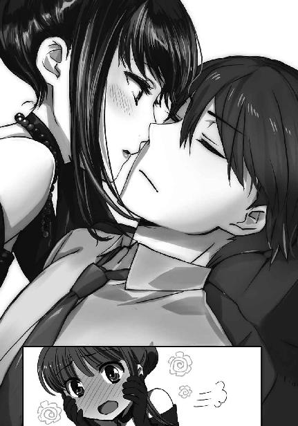
◇ ◇ ◇
西果新島は井桁に組んだ海底資源採掘施設を最下部に持ち、その上にフロートを兼ねる十二本と鉱石の搬出路を兼ねる四本、合わせて十六本の円柱を建て、円柱の上に正八角形の人工地盤を載せた半潜水型メガフロートだ。人工地盤は五層構造の居住区画になっており、その中には来島者用の高級ホテルも作られている。
今日のパーティは人工地盤地下第一層のホテル宴会場で開催されることになっている。開会三十分前になって、宴会場の前のロビーには続々と招待客が集まっていた。
「......あたし、何か場違いじゃない？」
素性は分からなくても見るからに社会的地位が高そうな、ついでに着ている服やつけているアクセサリーの値段も高そうな紳士淑女の群れを前にして、紗耶香が気後れを口から漏らした。
「大丈夫ですよ。壬生さん、とても似合っています」
「そうかしら」
あずさにそう言われても自信が持てないようで、紗耶香は無意味にストールの端を指で弄っている。
「気にしすぎよ、紗耶香。高校生とか大学生とかくらいの子も、見たところあたしたちだけじゃないんだし。それにこのパーティーが今回の旅行のメインイベントじゃない。余計なことは考えずに、目一杯楽しまなきゃ」
「そ、そうよね」
花音に励まされて、紗耶香はようやく落ち着きを取り戻した様子だ。
花音が言ったように、ロビーには二十代前半くらいの青年とか、彼女たちと同年代の少女の姿もあちらこちらに見えている。今日のパーティーは、意外に若い世代の参加者が多いようだ。
何となくロビーに降りてくる階段の方へ目を向けていた紗耶香と花音は、着飾った後輩と目が合った。
「千代田先輩、壬生先輩、お早いですね」
他の客の邪魔にならないよう気を遣った早足で近づいて来たほのかが、花音と紗耶香に声を掛ける。
その隣で、雫が小さくお辞儀した。
「光井さん、北山さん、二人で来たの？」
花音たちのグループは五十里が家を代表して招かれており、花音はその婚約者として出席、残る五人は五十里の友人としての参加だ。
しかし雫たちの場合、雫の両親が本来の招待客でありほのかと雫はその同行者でしかないと花音は知っていた。会場入りする際は、親と一緒でなければまずいはずだ。
「いいえ、あちらに」
言葉少なに、雫は主に視線で花音の問いに答える。
雫が顔を向けた先では、もうすぐ中学生になる長男を連れた北山潮・紅音夫妻が花音も顔を知っている政治家から挨拶を受けていた。
「さすがですねぇ」
彼女たちの会話を横で聞いていたあずさが感嘆を漏らす。
「あの人、結構偉い政治家だったよね？ 挨拶するんじゃなくて、向こうから挨拶に来るんだ......」
花音の声は感心しているだけではなく、呆れ混じりだった。
「結構偉いって言うか、大臣経験者だよ。あの方は国防族の有力者だから、余計に気を遣うんだろうね」
何時の間にか近づいてきていた五十里が、後ろから小声で口を挿む。
北山家の傘下に、直接兵器を取り扱っている企業は無い。だが銃弾から戦闘機まで、兵器の生産に必要な中間財で北山家の企業グループは高いシェアを抑えている。なまじ軍需分野が主業態で無い為、北山潮の機嫌を損ねれば売上を民生用や輸出に大きくシフトして国防軍の補給が滞る恐れがあった。五十里が使った「気を遣う」という表現は、実態に対して控えめなものと言える。
「ちょうど良いから、僕たちも挨拶に行くよ」
「どっちに？」
「もちろん、両方だ」
そう言って五十里は、まだ質問したそうな花音の背中を押し、潮と紅音、そして二人に挨拶をしている政治家の方へ歩いていく。
「そんなに慌てなくても良いのに」
二人の背中を見送りながらボソリと漏らした雫の一言に、紗耶香とあずさが豆鉄砲の奇襲を受けた鳩のような表情で瞬きを繰り返す。
別に今挨拶に行かなくても、雫がいるのだ。パーティーが始まってからでも、会話の機会は幾らでもある。二人の微妙な表情は、雫の呟きでそのことに気づいた故のものだった。
落ち着いているように見えて、五十里も平常心とは程遠い心理状態であるようだった。
「ほのか、どうしたの？」
一方、雫は既に五十里たちを見ていなかった。隣でキョロキョロとロビーを見回しているほのかに声を掛ける。
とはいえ、ほのかが誰を探しているのか、訊くまでもなく分かっていたのだが。
「達也さん、まだ来ていないのかな」
「そうだね。深雪たちが来たらすぐに分かるはずだし」
雫は暗に「深雪と水波のことを忘れているよ」と告げたのだが、ほのかには通じなかった。
◇ ◇ ◇
ほのかの心配を余所に、達也たちを乗せた快速艇は既に、人工島の港に着いていた。
深雪がロビーに姿を見せないのは、囲まれるのを嫌ってのことである。
秘密多き四葉家のプリンセスというだけで人々の興味と打算を招き寄せるのだ。そこに着飾った深雪の華麗な容姿が加われば、鬱陶しい事態になるのが目に見えていた。
達也が会場に近づかなかったのは、少し事情が異なる。彼は人工島地下一層にオープンしたばかりのショッピングモールに足を向けていた。
各店舗の本格的な営業は地下採掘施設が稼働を始める来月からだが、一部の記念品ショップとコンビニエンスストアが先行して店を開いている。
彼は全国展開しているコンビニの前で、ジェームズ・Ｊ・ジョンソンを見つけた。ジョンソンは髪の色と瞳の色を変え、ヒゲをすっかりそり落としていた。その上、インナーアーマーで体格まで変えている。だがその程度で、達也の「眼」を誤魔化すことはできない。そもそも彼は目で見て見つけたのではなく、「精霊の眼」で居場所を把握した上で足を運んでいるのだ。
相手も達也のことは分かったはずだ。達也は特に変装などしていないのだから。それでも、少しも緊張した気配を漏らさなかったのは大したものだと言える。
ジョンソンは、見た目十二、三歳くらいの女の子を連れていた。
赤い髪に緑の瞳。風間に見せられた静止画とは、色合いが違う。少し背伸びした感じにドレスアップした姿は、髪型の違いもあってかなり印象が変わっていたが、達也が見間違えることはなかった。
少女が顔を上げた。
達也と目が合う。
達也は軽く頭を下げ、ジョンソンに向かって「失礼しました」と話し掛けた。
「今日は国内向けのパーティーと聞いていたものですから......つい不躾な視線を向けてしまいました」
「いえ、気にしないでください」
ジョンソンはさすがに焦った声音で応じて、そそくさと達也から離れようとする。
しかし達也は、そのまま去らせなかった。
「お嬢さんも、申し訳ありませんでした。ご婦人に対する態度ではありませんでした。お許しください」
少女──ジャスミン・ウィリアムズ大尉の瞳を正面からのぞき込みながら、子供に対するものとは思えない、堅苦しい謝罪を述べる。
「......ご丁寧に、恐縮です。本当に、お気になさらないで」
少女はその外見に相応しい、高く硬い声で答えて、達也に目礼する。
それを合図に、ジョンソンとジャスミンは達也に背を向けた。
◇ ◇ ◇
達也がコンビニに入っていくのを背中越しに確かめて、ジョンソンは足を速めた。
ストライドの違いからジャスミンは小走りになっていたが、ジョンソンは歩くスピードを落とさない。
通路を曲がり、コンビニが見えなくなって、ジョンソンはようやく歩調を緩めた。
それでも、ジャスミンが歩く速度に合わせただけで、足は止めない。
あらかじめ監視カメラに細工して作り出した死角にたどり着いてやっと、ジョンソンは立ち止まった。
ジョンソンとジャスミンは素早く左右に目を走らせた。
誰もいないことを確認してから、前以て鍵を解除しておいた作業員用階段の扉を開け、中に身を滑り込ませる。
ジョンソンが大きく、ジャスミンがそっと、息をついた。
しかし気を抜いたのは、ほんの一時だった。
「ジャズ」
「何だ」
「気づかれたと......思うか？」
「分からない」
緊張した声で問うジョンソンに、硬い表情でジャスミンは頭を振った。
「追いかけてきた気配は無かった。魔法を使われた様子も無い......」
ジャスミンの口調が、不意に乱れた。
「ジェイ、魔法を使われた形跡は無かったよな？ 私たちは何もされなかったよな？」
ジャスミンがジョンソンを、名前でも階級でも無く愛称で呼ぶ。それは彼女が動揺しているサインだった。
「ジャズ、どうしたんだ？」
ジャスミンはジョンソンの一歳年下でしかない。だが今はまるで、その外見そのままの年齢であるかのように、ジョンソンの目には頼り無く見えた。
「分からない......。魔法の兆候は無かった。魔法を撃ち込まれたような感覚は無かった。だが何故だ？ 何故こんなにも不安を覚える？ まるで自分が知らない内に、絞首刑用のロープを首に巻き付けられているような、この不気味な感覚は何だ？」
「ジャズ、落ち着け」
実を言えば、ジャスミンが漏らした不安はジェームズにも覚えがある感覚だった。彼女が口にした「絞首刑用のロープ」という言葉に、自分が感じていた不吉な予感の正体を言い当てられた気がして内心、ショックも覚えていた。
しかし彼は自分が感じている動揺と不安を強引に抑え込んで、可能な限り不敵な表情を作り、ジャスミンの目をのぞき込んだ。
「俺にも、ジャズが何かされたようには見えなかった。少なくともやつはお前に、指一本触れていない」
ジャスミンの荒くなっていた呼吸が、少し落ち着きを取り戻す。
「......済まない。柄にも無く動揺した。あの四葉の魔法師ということで、意識しすぎてしまったようだ」
「いや。確かにやつは、何処か得体が知れない感じがする」
ジャスミンが頰を緩めたのは、それがジョンソンの冗談だと思ったからだ。
しかしジョンソンは、大真面目だった。
「ジャズ、今回は止めないか？」
そのセリフの意味を理解するのに、ジャスミンは数秒を要した。
「......馬鹿げたことを言うな。既に決行命令が下りているんだぞ」
「承知の上で言っている。今回の任務は......ヤバい」
ジョンソンは任務の放棄をほのめかしていた。
「ジョンソン大尉、その発言だけで軍法会議ものだぞ」
「ここに来ているのは俺たちだけだ。ということは俺たち自身が指揮命令権を有している。深刻な状況の悪化が予測される場合、独自の判断で撤退しても良いはずだ」
「それは致命的な状況が高い確度で予測される場合だろう！ まだそんな具体的事態は生じていない」
「俺たちが身を置いているのは普通の戦闘じゃない！ 魔法師同士の暗闘だ。どんな脅威が待っているか分からない！」
「そんなことは普通の工作任務でも同じだ！ 逃げ出して良い理由にはならない！」
ジョンソンとジャスミンが睨み合う。
先に目を逸らしたのは、ジョンソンだった。
「......済まない。どうかしていたようだ」
「......今のは、聞かなかったことにしておく」
ジョンソンが非を認め、ジャスミンが謝罪を受け容れる。
「ああ。......そろそろ戻るか。もうすぐパーティーが始まる。やつもいなくなった頃だろう」
「了解だ」
ジョンソンは階段同士をつなぐ通路を進んで別の扉へ向かった。
その背中を見ながら、ジャスミンは自分の中でもこの任務を放棄したいという気持ちが強くなっているのを確かに感じていた。
◇ ◇ ◇
達也はコンビニエンスストアでミネラルウォーターを買って、深雪たちが待っている快速艇に戻った。
喉が渇いていたわけではない。何も買わずに店を出るのは不自然だと思ったからだ。
「お兄様、そろそろ会場に向かいますか？」
達也が独りで快速艇を離れる時には、確かにそういう話をした。パーティー会場に向かう時間になったら戻ってくると。
しかし達也は深雪の問い掛けに、首を横に振った。
「まだ少し余裕があるだろう？ 五分程時間をくれ」
「それは構いませんが......もしかして、お兄様？」
敢えて船に戻って来た理由。それはおそらく、第三者の目が届かないからだ。
そこまで考えて、「目が届かない」というフレーズから深雪は達也が何をするつもりなのか悟った。
「時間になったらお呼び致します」
「頼む」
全てを弁えた深雪の申し出にそう答えて、達也は自分のキャビンに引っ込んだ。
深雪や水波が断りも無く彼の個室へ入ってくることはないはずだが、達也は念の為にドアをロックし、上着を脱いで椅子に腰を下ろした。
そのまま目を閉じる。
仮眠をとる為ではない。
五感では知覚できない世界へ「眼」を向ける為だ。
普通に肉眼を働かせながらでも達也は情報次元を「視る」ことができる。しかし、じっくり観察する場合は五感の刺激が少ない方が、やはりやりやすい。
ついさっき会ったばかりの「少女」に、気づかれないようイデア経由で撃ち込んだ想子弾を目印にして、彼女の情報にアクセスする。
（ジャスミン・ウィリアムズ。オーストラリア軍魔法師部隊大尉。やはり見た目どおりの歳ではなかったか）
遺伝子異常を抱えた調整体魔法師。
そうと分かっても、達也の心は動かなかった。
そんなことで手加減するのは、敵に対して失礼だ──というのは、自分に対する単なる言い訳にすぎない。
敵である以上、達也にとっては無力化する対象でしかない。彼女が敵であることを止めたなら、感じ方も変わるかもしれないが。
念の為、達也はジェームズ・Ｊ・ジョンソンのマーカーも確認した。こちらもまだ、問題無くトレースできる。気づかれない限り、あと三日程度は機能し続ける感触だ。
（不謹慎かもしれないが......あれの実戦テストにはちょうど良い）
仕掛けを終えて、達也は目を開けた。
キャビンの時計を見る。
思った以上に時間が経っていた。
立ち上がり、上着を着直したところで扉がノックされる。
「......お兄様。そろそろお時間です」
「分かった」
深雪に答えて、扉を開ける。
いつもの髪飾りを外し髪をアップにして露わになった深雪の首には、白、黒、金、三色の真珠がバランス良く配置されたネックレスが光っていた。
◇ ◇ ◇
西果新島竣工記念パーティーが始まる。
会場の扉が開き、ロビーにたむろしていた人々がゆっくりと中に入っていく。
こういう場合、上位者に先を譲るという考え方と、大物は後から入場するという二通りの考え方がある。しかし今日はそのどちらも当てはまらなかったようで、単に入り口の近くで待っていた者から順番に会場入りしていった。
その為、ロビーで待っていなかった達也たちが入場したのは、遅刻ではないにしても最後の方だった。つまり、大勢の人で埋まった会場に、達也にエスコートされ水波を従えた深雪が入場する形になった。
ざわめきに満ちていた会場が、入り口の方から急速に静まり返っていく。
まるで主役の登場だった。
いや、この瞬間、会場の主役は間違いなく深雪だった。
人々は息を吞み、身動ぎ一つできず、人が持ち得るものとは思えない美貌に目を、意識を奪われた。
深雪は自分を凝視する視線に少し困った感じの微笑みを浮かべて、会場の中央で軽く会釈した。
それで、人々の金縛りが解けた。
ざわめきが戻る。そのほとんど全てが「あの美女は一体？」「あれが四葉の......」「何と、あの方が!?」というような、深雪を噂し合うものだった。
ごく一部の例外。それは以前から深雪のことを見知っていた一高生、一高卒業生、そして雫の両親だった。
達也は深雪をエスコートし水波を連れて、まず北山潮の許を訪れた。今日のパーティーには潮の伝手で出席している形になっているのだから、これは当然である。
「ご無沙汰しております。本日はありがとうございます」
達也が丁寧に一礼する。彼に合わせて、深雪が優美可憐に、水波が初々しくお辞儀する。
「こちらこそ。ご丁寧に、ありがとう」
会場中の視線を集める中、潮はにこやかな顔で達也に応じた。先月の箱根テロ事件の後にも達也と深雪は潮に会っている。だから実は、それ程「ご無沙汰」でもなかったのだが、誰が聞いているか分からない状況で正直に本当のことを口にする必要は無い。
それに潮の妻の紅音とは実際に久し振りなのだから、おかしな挨拶でもなかった。
「しばらくお目に掛からない内に、随分ご立派になられましたね」
紅音はその立場に相応しい社交的な口調で達也に話し掛けた。もっとも、その裏に「よくも騙してくれたわね」という恨み言が隠れているのは、少なくとも達也には筒抜けだった。
「奥様におかれましては、少しもお変わりなく。本日はお目に掛かれまして光栄です」
だからといって、達也が恐れ入ることは全く無かった。
紅音はあやうく憎々しげな視線を向け掛けて、何とか愛想笑いを維持した。
「航くん、お久し振り。いよいよ中学生ね」
それ以上雰囲気を悪化させないよう気を遣ったのか、深雪が紅音の隣に緊張した面持ちで立っている航に、鈴を振るような声で話し掛ける。
その麗容に相応しい美声に、再び石化した者が老若を問わず何人もいた。
「はい、四月から中学生です！」
航がガチガチに緊張してしまったのも無理のないことだろう。余り意味が無い応えとはいえ、声を出せただけで大したものかもしれない。
そんな息子の様子を苦笑して眺めながら、潮は達也に話し掛ける。
「あちらに娘も来ているよ。話し掛けてやってくれないか」
潮が目を向けた先には、雫と、ほのかと、あずさたち卒業生が一塊になっていた。
「それでは、御言葉に甘えさせていただきます」
もう一度一礼して、達也たちは潮の前を離れた。
会場の人々も、ようやく自分たちの態度が礼を失していると思い至ったようだ。移動する達也たちから目を逸らし、近くにいる相手との雑談に戻る。
そのことにホッとしたのは、深雪本人よりもあずさや服部たちだった。
「もう見慣れたつもりでいたけど......そういう格好を見ると、改めて圧倒されちゃうわね」
こういうことを言えるのは花音の胆力があってのことで、あずさや紗耶香は深雪が放つオーラに──この場合は通俗的な意味の「オーラ」である──すっかり吞まれてしまっていた。
「皆様、四葉家の人間が珍しいのでしょう」
深雪は謙遜やお世辞は口にせず、こう答えた。これだけ視線を集めた後で、深雪が花音の容姿を本音で褒めても嫌みに受け取られてしまう。その程度の自覚は深雪にもあった。
ここで主催者が登壇した。それ程長くない挨拶の後、十人程度の祝辞が続く。その中には潮の姿もあって、雫は少し居心地が悪そうだった。
◇ ◇ ◇
その船は、久米島西約六十キロを北西に進んでいた。
船の形は、少し大きめの漁船といったところ。漁船といっても特に漁をしている様子は無く、経済速度で母港へ戻っている最中に見えた。
数年前までこの海域では、違法操業を行う大亜連合の漁船を日本の巡視船が追い回し、その内、両国の戦闘艦がやって来て火器管制レーダーを浴びせ合うというチキンレースが頻繁に演じられていた。
しかし五年前の沖縄侵攻事件以降、大亜連合の挑発行為はピタリと影を潜めた。
そして去年の講和条約締結後は、大亜連合の船も表面上紳士的に海上を行き交っている。
「中尉殿、本当に行かれるのでありますか？ 我々ではお迎えに上がれませんが......」
「後のことは何とでもなる。まずは作戦を成功させることだ」
そう言って、ブラッドリー・チャン中尉は魚雷のようなカプセルに入り、腹這いになった。
チャンは大亜連合脱走部隊のナンバーツー。ナンバーワンのダニエル・リウ少校が日本軍に捕らえられた現状では、彼がリーダーだ。チャン自ら片道切符の作戦に出撃すると言われれば、反論できる者はいなかった。
もっとも、チャンも全く考え無しというわけではない。「何とでもなる」というのはある程度目算あってのことだ。
破壊工作が成功すれば、それだけで人工島は沈められなくても、大混乱は必至。パニックが生じた中で長距離航行が可能な船を強奪するのは、それ程難しいことではないはずだ。
「ハッチを閉めろ」
「ハッ」
チャンの命令で、背中の上のハッチが閉ざされる。一瞬、完全な闇がチャンの視界を閉ざしたが、すぐに仄かな照明が点った。
魚雷型カプセルの数は五本。チャンは一人で入っているが、他の四本には二人ずつ乗り込んでいる。この九人が、最後の作戦に携わる決死隊だ。
カプセルが船底の穴から海中に放り出された。
魚雷型カプセルのスクリューには、後ろまですっぽり覆う金属のカバーが取り付けられている。スクリュー音で接近を探知されない為の措置だ。
五本のカプセルは、乗り込んだ人間の魔法だけで、海中を人工島『西果新島』へ進み始めた。
◇ ◇ ◇
人工島地下第一層のホテル宴会場では、挨拶が終わりフリートークの時間になっていた。
ここに集った上流階級の人たちはやっと調子を取り戻したようで、深雪を盗み見る視線も少なくなった。卒業生組も多少緊張から解放された顔で料理に手を伸ばしていた。
「五十里先輩も壇上に上がられるかと思っていましたが」
オードブルをつまみながら、達也が五十里に話し掛ける。
五十里は達也と同じ料理を手に持って、笑いながら頭を振った。
「実はそういう話もあったけど、お断りさせていただいたんだよ。僕の話なんか聞いても、喜ぶ人はいないからね」
「そんなことないわよ！ 啓の格好良いところ、見たかったのに！」
花音がすかさず嚙み付く。彼女の口振りからするに、この話題で揉めるのは、これが初めてではないようだ。
「ところで先輩。少しお時間をいただけませんか」
「達也様？」
この申し出に驚いたのは、五十里本人ではなく深雪の方だった。──こんな咄嗟でも「お兄様」と言わないあたり、随分慣れてきたようだ。
実は五十里も驚いていたのだが、深雪に先を越されてそれを露わにするタイミングを逃したのだった。
「......何かあったの？」
驚く代わりに、五十里は厄介事の臭いを嗅ぎ付けた。
達也の表情から、自分の推理が的を射ていると悟ったのだろう。
「分かった。こっちへ」
五十里の家はこの人工島の設計に関わっている。今居る宴会場に隣接した小部屋の位置も把握していた。お色直しなどの為に用意されている部屋だが、今日は使っていないはずだ。
「深雪はここで待っていてくれ。水波、深雪を頼む」
「......かしこまりました」
「はい、達也さま」
「花音も待っていて」
「......分かった」
ついてこようとした深雪を達也が、花音を五十里が制止して、二人はこっそり隣の部屋へ移った。
◇ ◇ ◇
「それで、一体何が起こるのかな？」
部屋には誰もいなかったが、五十里は立ったまま囁き声で達也に話し掛けた。
「このパーティーが大亜連合の脱走兵に狙われています」
達也も立ったままで、五十里の質問に正直な答えを返した。
五十里の喉が鳴る。彼が吞み込んだのは「息」でも「唾」でもなく、「悲鳴」だったに違いない。
「何故今頃......」
かすれた声で、五十里が達也を詰る。片言のセリフは、「何故、前以て知らせてくれなかったのか」と言いたかったのだろう。
「誤解しないでください」
達也が右手を前に軽く上げて、押し止めるようなジェスチャーで五十里を宥める。
「大亜連合軍の脱走兵による襲撃が計画されていますが、対策は完了しています。彼らには何もできません」
達也の言葉を全面的に信じたようでもなかったが、取り敢えず五十里は彼の話に耳を傾ける姿勢を見せた。
「破壊工作員は海中から人工島に接近し、爆弾を仕掛けてフロートに穴を空けるつもりです」
「......その程度じゃ、この西果新島は沈まないよ」
「ですが、今日のパーティーは中止になるでしょうね。実行できれば、ですが」
五十里は落ち着きが回復すると共に、思考力も取り戻したようだ。彼は達也に訝しげな目を向けた。
「随分自信がありそうだけど......だったら何故、僕にこのことを話したんだい？」
「戦闘が始まっても、自重していただく為です」
「言われなくても、危ない真似に手を出すつもりは無いけど？」
五十里は如何にも平和主義者という顔で答えた。しかし、そこから白々しさを読み取るのは、達也でなくとも難しくなかっただろう。
また、五十里のポーカーフェイスを崩す手札が、達也にはあった。
「この人工の島に仕掛けられた刻印魔法の防御システムのことは存じております。その魔法を先輩が自由に発動させられることも」
五十里が大きく目を見開く。
だがすぐに、納得した顔で頷いた。
「司波君の立場なら、知り得るだろうね。じゃあ、国防軍に助けてもらわなくても、爆弾を仕掛けられることは無いということも分かっている？」
五十里は横浜事変の折、あの現場にいた一人だ。達也が国防軍の特務士官であることを彼は知っている。
「そもそも近づけないでしょう。大型海洋生物を寄せ付けない為に、フロート表面に発生する斥力場は人間にも作用します。怪我をすることはないでしょうが、生体電流を持っている限りフロートや採掘施設に接触できません」
「ご名答。ついでに言えば、付着物も超音波洗浄の原理で剝がしてしまう。僕じゃなくても、家の刻印魔法を発動させられる魔法師がいる限り、爆弾を仕掛けるなんて無理だ」
「そうですね。そしてそのことは、破壊工作員も知っています」
五十里の顔色が変わる。その言葉の意味が理解できない程、彼は鈍くなかった。
「......僕が、狙われると？」
「そうです。正確には、先輩も狙われている、ですね」
達也は非情なまでにあっさりと頷いた。
「ご安心ください。会場には先輩の護衛を務めてくださる国防軍の魔法師を手配してあります。その方です」
達也がそう言った瞬間、五十里の背後に人の気配が生じた。
慌てて振り返る五十里に、ウェイターの制服を着た魔法師が敬礼する。
「いつの間に......」
五十里の問い掛けには答えず、ウェイターに変装した魔法師が名乗りを上げる。
「国防陸軍、南風原曹長であります。軍規の為、所属部隊を名乗らぬことについてはご容赦ください」
南風原と名乗った軍人は、年齢三十歳前後の瘦せた男性だった。だが、彼が服の上から見たとおりの体格でないことは、この方面に余り詳しくない五十里にも何となく分かった。
「曹長は護衛のスペシャリストです。個人を対象とする防御魔法に優れ、また格闘戦にも長けています。移動する場合は、曹長に声を掛けてください」
達也は五十里が頷くのを確認してから、
「では戻りましょう」
と促した。
◇ ◇ ◇
パーティー会場に戻った達也は、一見「有名企業社長秘書」といった印象の、控えめなドレス姿の美女に声を掛けられた。
「先輩は先に戻っていてください」
「分かった」
察しが良い五十里は、その美女のことを詮索せずに花音たちが固まっているテーブルへ戻っていった。──彼女に見覚えがあったという事情もある。
「あれが五十里家のご長男？ 可愛い男の子ね。ドレスの方が似合いそう」
「本人には言わないでくださいよ。多分、気にしていると思いますので」
「言わないわよ。そんなに無神経に見える？」
「いえ、念の為です」
意地悪な笑みを浮かべる藤林を、達也は軽くあしらった。
「来ましたか？」
そして、完全に世間話の口調でそう訊ねた。
「ええ。あと五分で防衛ラインに接触するわ」
二人の回りには、藤林が誰にも気づかれないように張った盗聴防止の「結界」が張られている。現代魔法の遮音フィールドではなく、藤林家伝承の古式魔法だ。効力が強い現代魔法より、センサーに感知されにくい古式魔法の方がこういう場には向いている。
「では浮上してくるまでおよそ十分というところですか」
「もう少し早いかもね」
「了解です。俺も出撃準備に掛かります」
「了解よ。隊長にはそう伝えます」
達也は歩き出し掛けて、藤林の何か言いたげな視線に気づいて立ち止まった。
「──何か？」
「達也くんは......惑わないのね」
「何のことでしょうか」
達也は惚けているわけではない。藤林の物言いは漠然としすぎて、彼にも何を指しているのか分からなかったのだ。
「五年前、達也くんも大切な人を亡くしてしまったと聞いているわ」
「事実です。それで？」
達也の声は、薄情と表現しても良いものだった。
「同じ地で、同じ敵を前にして、いつもと全く同じ。......私もそんな風に強くなれれば良いのに」
藤林のセリフは達也に対するものではなく、自分自身に対するもののように思われた。
「完全に同じではありませんよ。あの時とは敵の性質も状況も違います」
しかし達也は、律儀に言葉を返した。
「それに、俺にとって本当に大切な存在は一人だけです」
その「一人」の名は、訊く迄もなかった。
「......深雪さんさえ失わなければ、他はどうでも良いと？」
「無意味な仮定です。俺が生きている限り、そんなことは起こりませんから」
達也はまるで力みもせずにそう答えて、今度こそ藤林の前から立ち去った。
◇ ◇ ◇
テーブルへ戻ってきた達也に、物問いたげな視線が集まる。実際に桐原や服部は口を開き掛けた。
「すみません」
だが達也が、その機先を制した。
「家の方からの連絡で、所用ができてしまいました」
去年まで、達也は「家」のことを秘密にする為に色々と気を配っていた。
だが今はこうして、四葉家の身内であることを口実にすることができる。
四葉家の用事であるとほのめかせば、その悪名故に余計な詮索を受けずに済む。実を言えば達也はその都度、「これは便利だ」と不謹慎かもしれないことを感じていた。
今回も「何の用か」と問う声は無い。
「しばらく中座します。深雪、パーティーが終わるまでには戻ってくる」
「はい、達也様。お待ちしております」
達也は頷き、北山潮の方へ歩き出した。同じように中座の挨拶をするのだろう。
「達也様って呼んでいるんですね」
その背中を見送っていた深雪に、あずさが話し掛けた。
「はい。『達也さん』では何となくしっくり来ないものですから」
唐突で今更な──深雪は既にあずさの前で、何度も「達也様」という呼称を使っている──話題だったにも拘わらず、深雪は慌てず騒がず、余裕たっぷりの笑みでそのセリフに応じる。
ここまで堂々とされると、あずさも笑う以外に反応できない。
「はぁ～、いやまあ、何と言うか......司波さんには確かに似合っているけど」
花音が「ご馳走様」と言いたげな表情で天井を仰いだ。
「あたしには無理そう......」
「花音は今のままで良いよ。その方が僕も嬉しい」
「えへへ......そう？」
フォローを入れた五十里に、花音がすり寄っていく。
「あーあ、ここでも二人の世界かよ。まったく、大和撫子の慎みは何処に行きやがったんだ」
桐原が、甘い空気を振りまき始めた五十里と花音から目を逸らして、ぼやく。
「お前だって彼女同伴だろうに」
服部のツッコミには動じなかった桐原だが、
「桐原くんは慎み深い女の子が好きなのね？ じゃあ、あたしも少し控えることにするわ」
「お、おいっ」
紗耶香の意地悪には、動揺を隠せなかった。
卒業生組が、自分たちの世界を作っていた五十里と花音も一緒になって笑っている傍らで、ほのかと雫が声を潜めて深雪に話し掛ける。
「深雪は行かなくて良いの？」
「私たちも何かお手伝いできないかな？」
「わたしたちは大人しくしているのが一番のお手伝いだと思うわ」
この回答は、深雪の本音ではない。
気持ちだけでなく、作戦上も深雪は最終局面で重要な役目を果たすことになっている。
しかし今は大人しくしておくべきだ。それは、噓ではなかった。
深雪の答えは民間人の未成年という点から見れば正論で、ほのかと雫はそれで一応納得した。だが、それでは引き下がらない者もいた。
荒事の予感に、最初から自重するつもりなど無い者たちが。
達也は──深雪もだが──ＯＢの血の熱さを、少々甘く見ていた。
◇ ◇ ◇
人工島『西果新島』から西に、わずか一キロ。
満月の光を受け、波の上に一人の男が立っていた。
中華風の白い鎧を身に着けた巨漢。魔法具『白虎甲』を纏った呂剛虎だ。
『そろそろやつらが到着する』
「是。潜水を開始します」
『分かっているとは思うが、白虎甲は「火」ほどではないが「水」とも相性が悪い』
「心得ております。その程度のハンデがなければ、面白くありません」
『まあ「火」をものともしない上尉のことだ。心配はしていないが』
「お任せください」
『よし、行け』
陳祥山の命令に従い、呂剛虎の身体は海面下に沈んでいく。
それ自体はおかしなことではない。
海面に立っていた今までの方が、むしろ異常なのだ。
しかし、水飛沫を上げて一気に海中へ落下するのではなく、少しずつスムーズに水面下へ消えていく姿は、やはり異様なものだった。
呂剛虎はスノーケルもくわえていなければボンベも背負っていない。普通に呼吸している。よく見れば、彼の身体は海水に触れていない。白虎甲を纏う呂剛虎の巨体は、薄い空気の膜に覆われていた。
彼は海中で立ち止まり、前方へ目を凝らした。
ここまで潜れば、月の光も星の光もほとんど届かない。夜の海は、海水と共に暗闇を湛えている。前に伸ばした自分の腕も見えない状態だ。──物理的な光だけでは。
呂剛虎の視界には、魔法の行使に伴う想子の光と、肉体の内側から放たれる精気の光が見えていた。
呂剛虎が海水を踏みしめ、
左腕を突き出し、右腕を引き絞った。
呂剛虎の身体を覆う気体の層が厚みを増す。海上から持ち込んだ空気に、海中から抽出した酸素を注ぎ足したのだ。通常ならば酸素中毒になりかねない状態だが、呂剛虎の肉体は高濃度の酸素を消費して「力」を蓄えていく。
肉体が生み出したエネルギーが、「術」の力と結びつき、
突き出す右腕から、強大な「波動」となって放たれた。
水を動かさず、生体のみを揺らす「波」。
はね返ってくる乱れた「波動」に、呂剛虎は確かな手応えを感じた。
海水を踏み、海中を駆ける。
先頭を行く魚雷型のカプセルを、呂剛虎は蹴り上げた。
鼻面を突き上げられて縦に回転するカプセルから、二人の男が放り出される。
その二人は、慌てて海面を目指した。
他のカプセルからも次々と脱走兵が抜け出し、海の上へ浮上していく。
呂剛虎は獰猛な笑みを浮かべて、彼らの後を追った。
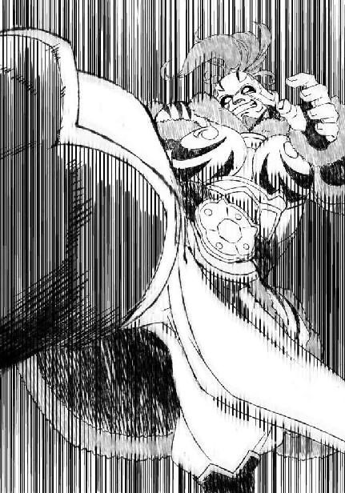
◇ ◇ ◇
呂剛虎が魚雷型カプセルと接触した時、海上では達也が水上バイクを走らせていた。
彼一人ではない。達也の隣を桧垣ジョセフと柳が小型ボートで並走している。
「少佐、見えましたか」
『君にも見えたか』
達也と柳は、海中に広がる「波動」を各々異なる視界で知覚した。
「敵工作員が浮上してきます」
『俺が行く。君は援護を頼む』
「了解です」
達也が返事をしたのと同時に、柳がボートの床を蹴った。彼の手には長さ二メートル程の棒が握られている。
柳が海面に着地した。正しくは着水と言うべきなのだろうが、足が全く沈んでいないのを見ると「着地」としか表現できなくなる。
彼は波を踏みしめ、棒を海面に突き込んだ。左手で棒の端を押し下げ、五十センチ程離れた所を持つ右手を勢いよく押し上げる。
海の中から、敵兵が釣り上げられた。宙を舞っている工作員へ、柳が棒を突き出す。
工作員の苦鳴は水上バイクの駆動音にかき消された。ただ大きなダメージを負っているのは、飛んでいく脱力した姿で分かる。
柳が突き飛ばした敵兵は、ジョセフが操縦するボートへ落ちた。ジョセフが落下した男を手早く拘束する。その間に、柳は海面から顔を出した次の敵へ向かっていた。
一際強い気配が、急速に浮上してくる。
柳を背後から襲う位置だ。
海面から出た首を柳が棒で薙ぎ払うのと、巨大な人影が海面から鯨の跳躍さながらに飛び出したのは、ほぼ同時だった。
達也はその巨軀に魔法の照準を向けた。だが、意志の引き金は引かなかった。
その男より更に猛々しい気配が、後を追って海中から飛び出してくるのが分かったからだ。
巨体の男が大亜連合軍脱走兵、ブラッドリー・チャン中尉であることは既に分かっている。
そして追跡者は大亜連合軍、呂剛虎上尉。
肉体のサイズはブラッドリー・チャンが呂剛虎を上回る。
だが内包しているエネルギーは、呂剛虎の方が一段も二段も上だ。
達也は呂剛虎にチャンを任せて、柳と共に残りの雑魚を片付けることに決めた──のだが。
ここで、達也でさえ思ってもみなかった、予想外の事態が発生する。
「撃滅！」
何だかよく分からない気合いと共に、見覚えのある人影が、海面に立ち上がった敵に跳び蹴りを喰らわしたのだ。
敵工作員を海に沈め、敵を蹴り飛ばした反動で勝手に達也が運転する水上バイクのタンデムシートへ乗り込んできた青年は風紀委員会に所属していた時の先輩、沢木だった。
「......先輩。こんな所で何をしているんですか？」
「むっ？ 驚かないのだな」
「それはまあ、先輩だということは跳び蹴りのフォームで分かっていましたから」
達也の回答は強がりではない。沢木と分かっていたから後ろに乗せたのであって、見ず知らずの相手ならば空中で撃ち落としている。
「この暗闇の中、そんなことまで分かるのか。さすがは司波君だな」
「......いや、暗闇ではありませんから。この月明かりです。その程度のことは」
今日は満月で、天気は晴れ。「雲一つ無い」とはいかないが、今のところ月光は遮られずに南の海へ降り注いでいる。
達也が言ったように、人間の輪郭を見分ける程度のことは難しくない。
「せりゃああぁ！」
少し離れた所から、覚えのある声が聞こえてきた。
達也は頭に幻痛を覚えた。
「桐原先輩もですか」
「おう。服部も来ているぞ」
幻ではなく、実際に頭を痛くしてくれる回答が背後の沢木から告げられる。
達也は水上バイクを桐原の声が聞こえた方へ向けた。
途中、柳の援護射撃に弱い魔法を二発放って、達也は服部が運転する水上バイクと合流する。
「沢木先輩と桐原先輩だけでなく、服部先輩まで......。一体何をなさっているんですか。しかもそんな格好で」
達也はパーティー用のスーツから着替えてきている。ウェットスーツやドライスーツではないが、海に落ちても泳ぐのに邪魔にならない海上用の戦闘服だ。
しかし一高ＯＢトリオは、三人ともスーツ姿のままだった。
「楽しそうなことをやってるから混ぜてもらおうと思ってな！ 司波、独り占めは感心しないぜ！」
百二十センチくらいの杖術用の杖を木刀代わりにした桐原が楽しそうに嘯く。この杖はおそらく、人工島の警備部から借りてきたのだろう。
「女子は安全な所に残してきたからな。横浜の時とは違って、遠慮無く悪者退治ができるというものだ」
沢木はこれで、真面目に答えているつもりらしい。
頭のネジが何本か飛んでいるのではないかと疑いたくなる桐原と沢木の発言に、達也は頭痛が激しくなってきたような気がした。──沢木については「こんな性格だったのか」と、愕然としている部分もあった。
「......服部先輩。貴方がついていながら......」
「いや、俺は止めたぞ！ だがこいつらの勝手にやらせるよりはと思ってついてきたんだ！」
達也の目には、服部もノリノリで魔法を放っているように見えた。だがそれは、敢えて口には出さなかった。
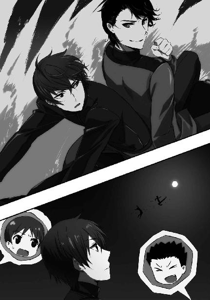
「風間中佐」
その代わり彼は、風間に文句を言うことにした。
『......何だ』
応答までに存在した、わずかなタイムラグ。それで達也は、ＯＢの暴走を風間も承知の上だと確信した。
「何故ここに予定外の民間人が来ているのですか」
予定外の、に力を込めて送った質問に対する回答は、当然かもしれないが、歯切れが悪いものだった。
『公式には、現在、その海域で戦闘行為は行われていない』
国防軍は襲撃自体を隠蔽するつもりだから、この戦闘が公式記録に残らないのは当たり前のことだ。
「だからといって、民間人を近づけて良いという理屈にはならないでしょう」
『空と違って、非戦闘海域の自由な航行を禁止することはできない。私たちの口から戦闘が行われている事実を告げることはできないから尚更だ』
どうやら風間は、何が起こっているのか自分が教えたのではないと主張したいらしかった。
しかし卒業生たちに戦闘中であることを教えないことと、戦闘の直中に割って入ろうとする暴挙を止めることは、別問題であるはずだ。
「理由など幾らでもつけられたはずです。中佐。まさかとは思いますが、敢えて止めなかったのではないでしょうね」
『民間人を積極的に戦列へ加えるつもりは無かった』
つまり、容認したということだ。
（将来の為に、彼らの戦闘力を把握しておくつもりか......）
達也はこれ以上の問答が無益であることを悟った。
服部、桐原、沢木は名前から分かるように、いずれも『数字付き』の出身ではない。十師族を中心とする魔法界の主流から外れている。
独立魔装大隊としては、否、一〇一旅団を率いる佐伯少将としては、確保しておきたい人材だろう。これを機会に縁を深めておくよう、佐伯から言い含められているのかもしれない。
「それでは、退去させられないということですか」
それはこのまま戦闘参加を認めるということだ。
暗にそう訊ねた達也の質問は、
『やむを得ない』
予想どおりの回答を得た。
取り敢えず沢木には服部の水上バイクに戻ってもらって──三人乗りで機動力が落ちるくらいでちょうど良かった──、達也は柳の援護射撃に戻った。
といっても、既に敵工作員はあらかた掃討済みで、残る三人の内の二人には沢木と桐原が喜々として拳と杖を振るっている。
相手の練度もそれ程高くはない。こっちは好きにさせておいて大丈夫だろう。
そして、残る一人。こちらは、練度という点では次元が違うと言えるくらい、高い。
だがこちらも、任せておいて問題は無い。むしろ手出し無用だった。
呂剛虎が海面を蹴って疾駆する。
ブラッドリー・チャンが水面で足を滑らせてカウンター気味に踏み込む。
呂剛虎が左手を、チャンが右手を突き出した。
二人の掌底突きが衝突する。
そのまま手四つの体勢にはならなかった。
二人の突きは一瞬、拮抗し、
チャンが大きく弾き飛ばされる。
呂剛虎が波の上に転がったチャンに迫った。
チャンの身体が波間に沈む。
呂剛虎が足を踏み降ろした。
海面が揺れる。
波が広がったのではない。半径五メートルにわたって固形化した水面が、鐘のように震えたのだ。
固体化した水面が崩れ、激しく波立つ。
波と泡の中からチャンが飛び出してきた。
その正面に呂剛虎が迫る。
突き上げるような肘打ち。
チャンが苦悶に顔を歪めて宙を舞い、海に沈む。
二人の闘いを見ていて、達也は気づいたことがある。
ブラッドリー・チャンは、水の上に「足場」を作っている。
呂剛虎は、水の上に「道」を作っている。
達也は「足場」を作ることはできても「道」を作る方法は知らない。
呂剛虎は達也が使う魔法とは異なる体系の術法を用いているということだ。
（じっくり観察したいところだが......そういうわけにもいかないか）
達也が「視」なければならない場所は、ここだけではない。彼は万が一の失敗を犯さないように、好奇心をねじ伏せた。
この場に限っても、もっと他に見るべきものがある。
呂剛虎とチャンの闘いは、終わりが近づいている。
この決着を見過ごすわけにはいかなかった。
達也は練度が低いと判断したが、それは彼が過ごしてきた環境──四葉家、独立魔装大隊、そして九重八雲のレベルを基準にしての話だ。
桐原と沢木にしてみれば、十分に歯応えがある相手だった。
桐原も沢木も、闘いながら水の上を自在に駆け回る技術はまだ身につけていない。水を足場にできるのは桐原で八歩、沢木で五歩だ。ただし沢木は一旦空中に飛び上がることにより、再び水面に五歩を刻むことができる。
ただいずれにせよ、桐原も沢木も闘っている最中に服部が運転する水上バイクへ戻る必要がある。
服部たちが借りてきたのは男三人で乗っても余裕がある、水上バイクとしては大型の物で、二人同時に飛び乗っても運転の邪魔になることはない。だが桐原と沢木の位置関係を常に把握し、二人が海に沈まないよう走り回らなければならない服部は、実際に白兵戦を演じている二人以上に神経を削られていた。
達也が見たとおり、格闘戦能力自体は敵兵より桐原と沢木の方が上だ。
だが二人が戦っている敵兵は不利な体勢になるたび海中に沈み、二人を足下から狙ってくる。大亜連合軍脱走兵は、水中と水上を自在に駆け巡る魔法を身に着けていた。
日本の古式魔法に当てはめれば、忍術の一つ『水遁』の使い手ということになるだろう。彼らが元々所属していた香港軍の魔法は、大陸由来の古式魔法とイギリス伝来の古式魔法をベースに、現代魔法の断片や敵対していた日本の魔法も取り込んで「何々流」と分類することができない混沌とした状態になっている。『無頭竜』のような犯罪組織の方が、まだしも伝統に忠実と言える程だ。
脱走兵自身も自分が使っている魔法がどういう系統のものか分からないまま、ただ技術として使っている。
だが、「使えるから使う」。それが道具としての「技術」の、正しい在り方なのかもしれない。この様な理屈自体、勝敗の帰趨には何ら影響しないのだから。
「せりゃぁ！」
桐原の杖が相手の肩口に振り下ろされる。
高周波ブレードも、杖では真剣程の威力は出ない。
それでも高速振動する杖は、触れただけで敵の服と皮膚を裂き、細胞を揺らしてダメージを骨の芯まで送り込む。
逆手に握ったナイフで受けても、刀身から指に、掌に振動が伝わり麻痺を誘う。
敵がナイフを落とさなかったのは、ナックルガードに指が引っ掛かっていたからにすぎない。
敵が片膝をつき、そのまま水飛沫を上げて水面下に没する。
「またかっ！ うおっ!?」
予想以上の水中速度に、遂に桐原が足をすくわれた。足の下からの攻撃など、普通は想定していない。魔法を併用する『剣術』でもそれは同じだ。
海面に倒れる桐原。そのまま彼の身体は海中へ沈んでいく。
その首に巻き付く敵の腕。
敵兵がもう一方の手に握る刃が、桐原に振り下ろされようとした、まさにその時。
彼らの直下に、爆発が生じた。
海面へと押し上げられる海水で、桐原と敵の身体が海面を超えて空中に打ち上げられる。
桐原がまだ浮遊感に包まれている最中、敵の身体に急激な下向きのＧが掛かり海面に叩きつけられる。
表面張力が敵兵の身体を支えている一瞬に、海面を電流が走った。
人間を無力化するには足りない、弱い電撃だ。
だが短時間行動を阻害し、格闘戦の中で隙を作るには十分な威力がある。
海中爆発、落下加速、電撃。一連の魔法は服部が放ったものだった。
「桐原、今だ！」
服部は距離を取って魔法を行使している。水上バイクも走らせたままだ。相当の大声を張り上げても声が届かない可能性の方が高かった。
「応っ！」
だが桐原はその声を聞き逃さなかった。
その機を逃さなかった。
桐原は空中で『跳躍』の魔法を使って軌道を変え、重力に任せて落下しながら『高周波ブレード』を纏わせた杖を沈んでいく敵兵に振り下ろした。
高速振動する杖に触れた海水が気化し、激しく泡立つ。
その抵抗で杖の勢いが喰われる。それが、結果的には良かったのだろう。
気化により発生した泡で海水を押し退けながら、桐原の杖が敵兵の胴体を捕らえた。
斬りつけるのではなく、気泡をクッションにしながら押し付けられた杖は、敵兵を激しく揺さぶり、その意識を奪った。
海に沈んだ桐原が、仕留めた敵兵を抱え上げて海面に顔を出す。
沢木と敵兵の闘いはまだ続いていた。
海中から攻撃を仕掛ける敵工作員と、空中から攻撃を仕掛ける沢木。
端的に言えば、嚙み合っていない。
沢木の拳や蹴りを受けてダメージを蓄積させた敵兵は、攻撃を完全に水中からのものに切り替えている。
それに対して沢木は、海の上を駆けるのではなく海面を蹴って跳躍しながら、水の上に顔を出した敵を目掛け空中で軌道を変えて急降下踏み付けを繰り出す。
一瞬の交錯が繰り返される。
沢木は敵を蹴り潰そうとする。
敵は沢木の足を捕らえて水中に引きずり込もうとする。
「まずいな、ありゃ。助太刀した方が良くねえか？」
仲間の闘いを観戦する余裕ができた桐原は、波間にぷかぷか浮かびながら顔を顰めて呟いた。
常時跳躍し続けている沢木と、水の中でタイミングを窺う敵。
スタミナの消耗は、どう見ても沢木の方が早い。
そう感じたのは桐原だけではなかった。
敵が水上に顔を出す。
次の瞬間、薄く押し固められた水の円盤が海面をギリギリに掠めながら敵に襲い掛かった。
敵は咄嗟に、海中へ戻った。
その直上で水の円盤はピタリと止まり、垂直に落下した。
急激に増加した水圧が海中の敵にダメージを与えたのが見なくても分かる。
満月の月明かりの下で展開されたその光景に、桐原は思わず口笛を吹いて称賛を表した。
確かめるまでもなく、今のも服部の魔法だ。
あの円盤の挙動は、途中で魔法を上書きしたものではない。
敵が真っ直ぐ下に潜って避けると予測して、軌道をあらかじめプログラムしてあったのだ。
常に敵の一手先を取る読みの鋭さと、それを可能にする魔法の制御。
「さすがは『ジェネラル』。俺なんぞとは一味も二味も違うぜ」
本人が嫌うのは分かり切ったことなので、服部自身の耳には決して入らぬように陰でこっそり囁かれている二つ名を桐原は呟いた。
"GENERAL"
形容詞としては「専門的でなく一般的な」「普通の」「世間一般の」など、どちらかといえば消極的なイメージもつきまとう言葉だ。例えば『ゼネラリスト（ジェネラリスト）』といえば、「分野を限定しない広範囲な知識・技術・経験を持つ人」という本来の意味を離れて「スペシャリストになれない何でも屋」というような、揶揄するニュアンスで使われることの方が多い。
しかしＣＡＤの使用を前提とする現代魔法は、元々「一人で何でもこなせる万能型の兵士」を想定して開発された技術だ。「専門的でない」のは、「専門分野に縛られない」即ち「何でもできる」ということ。これこそまさしく、現代魔法が目指した姿だった。
服部は自分たち同学年世代、真由美や克人がいた一学年上の世代、達也や深雪がいる一学年下の世代を通して見ても、現代魔法の教育方針を最も忠実に実現している魔法師だと桐原たち同級生は考えている。
一年先輩の摩利も確かに魔法のバリエーションは豊富だが、彼女は対人戦に滅法強いその一方で、機械化部隊を苦手にしているという能力の偏りがある。
だが服部にはそれが無い。彼が本来得意とするフィールドは中・遠距離の集団戦だが、狙撃戦も白兵戦も高いレベルでこなすことができる。白兵戦専門の桐原が、服部に格闘訓練で中々勝てないでいるくらいだ。
それともう一つの意味が、『ジェネラル』の二つ名にはある。
服部は『数字付き』ではない。
古式魔法の名門というわけでもない。苗字は同じだが『忍術』の名門・服部家とは無関係。百家の一つであり家系こそ古いが、魔法界では非主流派だ。
それでいて『数字付き』と対等以上に渡り合う服部は、桐原や沢木のような数字を持たない同級生から将来のリーダー、『将軍』と期待されていた。
桐原や服部には見えなかっただろう。空中で沢木の唇が微かに動いていた。彼も、もしかしたら桐原と同じように、服部の、本人が知らない二つ名を呟いていたのかもしれない。
海面に顔を出した敵兵の挙動には精彩がなかった。服部の魔法が計算どおり、水中の敵に圧力によるダメージを与えたに違いない。
沢木は空を蹴って、海面を漂う敵に襲い掛かった。
踏み付けを繰り出す沢木の両足を、敵兵が摑み取ろうとする。
敵の腕は、空を切った。
沢木は揃えた両足を、深く引き付けていた。
下半身だけではなく腰と上半身のバネも使って、両足を突き出す。
自己加速魔法により、両足が音速に達した。
海面に叩きつけられた空気の壁は、敵兵を完全に無力化した。
呂剛虎とブラッドリー・チャンの闘いも、大詰めを迎えていた。
まともに闘っては、チャンは呂剛虎に勝てない。『人喰い虎』の異名を持つ呂剛虎は、世界最強の白兵戦魔法師の一人と評価されている強者だ。
横浜事変で彼が不覚をとったのは、同じく近接戦世界最強の一人と言われている『イリュージョン・ブレード』千葉修次との戦いで深手を負っていた所為であり、敵に達也や真由美がいたからである。摩利やエリカ、レオなどの近接戦タイプだけでは負傷していた呂剛虎も倒せなかっただろう。
武の技も魔の技も呂剛虎の方が上。
それがチャンにもようやく実感できたのか。
チャンの気配から、一切の余裕が消えた。
いや、余裕と表現しては語弊があるかもしれない。チャンは呂剛虎との闘いの後に為すべきことをずっと意識していた。彼の目的は呂剛虎に勝利することではなく、人工島に対する破壊工作を成功させることなのだから。
しかしそれでは、この場で沈められるだけだ。チャンはそう思い知った。
ブラッドリー・チャンの、目の色が変わる。彼の身体から抑えきれない想子が噴き出し、 陽炎のような揺らぎがチャンの全身を覆った。
「ほぉ」
呂剛虎が楽しそうに目を細め、唇を歪める。
呂剛虎が纏う白い鎧の上に、鋼の色をした想子の層が重ねられ、見る見る内に密度と硬度を増した。
チャンが、波の上でグッと身体を屈めた。
四つ足の肉食獣が襲い掛かる為の力をためるような姿で、両腕を海面につける。
その腕を、水が這った。
足と腕から這い上った海水がチャンの巨体を覆い、空中に持ち上げる。
海水はチャンを閉じ込めるものではなかった。水の塊が上下に割れ、大蛇の顎を象る。
チャンは細部を放棄した大蛇、あるいは龍の口の中から呂剛虎を見下ろす。
呂剛虎はそれを見上げて──隠しようもなく、笑った。
楽しげに、獰猛に、歯を剝き出して。
呂剛虎が一歩を踏み出すのと、チャンの龍蛇が鎌首を振り下ろしたのは、全くの同時だった。
呂剛虎が水龍の形をした大波に吞み込まれる。
直後、波の間から咆吼が轟いた。
「龍」のものではない。「虎」の咆吼だ。
水柱が上がり、海面が擂り鉢状に抉れる。
擂り鉢の底に、濡れそぼった呂剛虎が肩で大きく息を吐きながら立っていた。
海面が元に戻る。
押し返す波が届く前に、呂剛虎が跳躍した。
空中に留まるチャンが、飛沫の弾幕を呂剛虎に浴びせる。
呂剛虎の鎧『白虎甲』は大陸の古式魔法の産物であり、五行の法則に従う。
『金生水』──金行が水行に力を与える。
これを裏側から見れば、金行は水行に力を奪われている。打ち消す相剋とは異なる、一方が強化されもう一方が弱体化される相互関係。
『白虎甲』の性質は金行。それ故に堅固な守り、確実な勝利をもたらす。その性、冷徹でありながら、司る情は怒。
金行の性質を持つ白虎甲は水行に合って力を衰えさせる。単に水が大量にあるというだけでは影響を受けないが、水行の術で攻撃を受けたなら少しずつ力が低下していく。
リミッターを外した状態とはいえ、ブラッドリー・チャンの攻撃が呂剛虎に徹っているのは、五行の理が有利に働いているからだ。
しかし、その程度で呂剛虎は──世界に名だたる『人喰い虎』は止まらない。
水飛沫の弾丸がもたらす、身体を蝕む痛みを以て「怒」の情をますます燃え上がらせる。
敵の攻撃を己が闘争のエネルギーに変えて、呂剛虎はチャンを周囲に展開されている術式ごと右足で薙ぎ払った！
まさに、一蹴。
呂剛虎の全力が込められた蹴りは、チャンの水術を破壊し、その巨軀を吹き飛ばした。
大きく弧を描いて、チャンの巨体が飛んでいく。
偶然か、あるいは最後の意地か。
ブラッドリー・チャンは達也に上空から襲い掛かる形で落ちた。
達也の対応は簡単なものだった。
単に、スロットルを開けただけ。
水上バイクが急発進し、ブラッドリー・チャンは虚しく海中に沈んだ。
◇ ◇ ◇
風間たちの思惑どおり、海上の闘いはパーティーに影響を与えなかった。
ただ事情を知る者は、警戒を緩めていない。達也に警告されたとおり五十里は会場に留まり続け、深雪と水波もなるべく一高関係者から離れないようにしていた。
とはいえ、別行動になる時間が皆無ではない。どうしても避けられないケースはある。
例えば、こんな場合だ。
「花音、何処に行くの？」
五十里の問い掛けに、花音は顔を赤らめ──たりせず、笑顔で答えた。
「お花を摘みに」
「あっ、あたしも」
「わたしも一緒に行きます」
花音がやむを得ない理由で中座すると言いだし、紗耶香とあずさが同行を申し出る。
「啓も来る？」
「......行っておいで」
ニンマリと笑った花音を、顔を赤くした五十里が追いやる。
深雪と水波が顔を見合わせた。
二人とも、五十里が狙われる可能性は達也から聞いていた。
本来は、花音たちからも目を離すべきではないだろう。
だが深雪の身体は一つ。水波にとっては、深雪と別行動など論外だ。
結局二人は、この場に残ることにした。
◇ ◇ ◇
ジャスミンとジョンソンのオーストラリア軍魔法師コンビは、海から接近する工作部隊の結果を待たず独自に動いていた。
二人には分かっているのだ。大亜連合脱走部隊の作戦は、主力を失った段階で最早成功するはずがないと。
二人は今、廊下の隅で、目立たぬように囁き声を交わしていた。
「制圧できそうか？」
「無理だな」
ジャスミンの問い掛けに、ジョンソンが声だけで答える。
「お偉方が大勢来ている所為か、制御室前には軍人がうじゃうじゃいやがる。しかもその中に『大天狗』までいるっておまけ付きだ」
「ハル・カザマか......それは、無理だな」
独立魔装大隊隊長・風間玄信中佐は、外国の魔法師から『大天狗』の異名と共に『ハル・カザマ』と名前を省略されて知られている。なお余談だが、この二十一世紀末、『大天狗』は英語圏の軍人の間では「The great long-nosed goblin」ではなく「Dai-Tengu」で通用する。一説によればサブカルチャー輸出の成果だということだが、真実は闇の中である。
「今更だが、このまま逃げた方が良いんじゃないか？」
「その話は終わっている」
ジャスミンが必要以上に素っ気なく即答したのは、彼女自身の脳裏を同じ思いが過ったからだった。
「ああそうだったな畜生め！ ......ジャズの方はどうだった？」
「少なくとも私では手に負えない。この島に仕掛けられた魔法システムをクラックする為には、やはりケイ・イソリに協力させる必要がある」
「ってことは、その坊やをさらわなきゃどうにもならんか」
「カザマを出し抜くより、その方が現実的だ」
「まあ、そうだよな......っと」
ジョンソンが近づいてくる人影に気づいて口を噤む。
ジャスミンも反射的に身構えたが、すぐに「普通の少女」の素振りを取り戻した。
「彼女たちは......ケイ・イソリの同行者か」
ジャスミンたちが話をしているのは、トイレから少しだけ離れたソファーの上だ。トイレに入っていく花音、紗耶香、あずさの顔が、ジャスミンの位置からはハッキリ見えた。
「本当か？」
「間違いない」
どうやらジョンソンは彼女たちのことを良く覚えていないようだが、お節介を焼かれて炎天下を連れ回されたジャスミンには自信があった。
「ちょうど良い。ジョンソン大尉、少し隠れていてくれ。彼女たちを人質にとって、ケイ・イソリを誘き出す」
ジョンソンの目から見て、三人とも脅威になるような戦闘力は備えていない。ポニーテールの少女はそれなりにできそうだったが、本気になったジャスミンが対処できない相手とは思われなかった。
「了解だ」
ジョンソンは音を立てないように注意して作業員用通路の扉を開け、その中に身を隠した。
◇ ◇ ◇
お化粧を直してパウダールームから出てきた紗耶香は、ドレスアップした小さな女の子が自分たちを見ているのに気がついた。
小さなといっても年齢は十二、三歳。白人種は日本人に比べて大人っぽく見えるというから、本当はもっと小さいかもしれない。
「あっ......もしかして、ジャズ？」
「ハイ、紗耶香」
何となく見覚えがあると思ったら、先日誘拐されそうになっていたところを助けた少女だった。
「えっ？ でも髪の色......」
花音が言うように、あの時とは髪の色が違う。よく見れば瞳の色も変わっている。
栗色の髪が、赤に。
茶色の瞳が、緑に。
色が変わっていることとドレスアップしている所為で印象が随分違うが、本人が認めているのだから間違いないだろう。
「ジャズ、どうしたの？ お父さんは？」
「ちょっと、困ったことになっちゃって」
「えっ、何かあったの？」
物怖じしないと言えば聞こえは良いが、多少警戒心に欠けている傾向のある花音が、ジャスミンの間近へ寄っていく。
とは言ってもこの場合、相手は十二、三歳程度の少女の外見だ。花音の行動を不用心と責めるのは、少しばかり酷だろう。
「実はね......動くな！」
結果は、ご覧のとおりだが。
花音の腕を素早く捻り上げ、膝裏を蹴って跪かせ、ジャスミンは花音の喉に隠し持っていたナイフを当てた。
「ジャズ、一体何を!?」
紗耶香の悲鳴に、ジャスミンは酷薄な笑みを返した。
「人は見掛けによらないということよ。覚えておいた方が良い」
目線で紗耶香とあずさを牽制してから、ジャスミンは二人を同時に視界へ入れながら要求を告げる。
「ケイ・イソリを連れてきなさい」
「啓を？ 啓に一体何をするつもりなの!? うくっ！」
花音が拘束を振り解こうとするが、逆関節ががっちり決まっている為、苦鳴を漏らすだけの結果に終わった。
「直接的な危害を加えるつもりはありません。早く連れてきなさい」
「駄目よっ！ あたしの所為で啓に危ない真似なんかさせられない！」
あずさと紗耶香が顔を見合わせた。
今のところジャスミンに花音を傷つけるような動きは無い。だが彼女の冷たい瞳を見れば、ナイフを使うのに躊躇は無いと分かってしまう。
「呼びに来るまでもない。僕はここにいる」
「啓！」
迷っていた紗耶香たちの背後から、五十里の声が聞こえてきた。
「啓、何で来たの!? あうっ！」
「少しお静かに願えませんか。話ができないので」
腕を締め上げて花音を黙らせ、ジャスミンが五十里に目を向けた。
五十里も、ジャスミンを見ている。彼の瞳には、怒りが燃えていた。
「まずは花音を離せ。交渉したいのならそれからだ」
「状況を良く考えてから発言することです。要求するのは私であって、貴方ではありません。そうですね......まずは、隣の軍人を下がらせてください」
ギリッと奥歯を嚙み締めた五十里が、隣に立っている南風原に頷いた。いや、これは頭を下げたのか。
南風原は何も言わずに、二歩下がった。
ウェイターの制服を着ていた男性が実は軍人だったと知って、紗耶香とあずさは目を丸くしている。しかし二人とも、余計なことを言って場を乱すのは慎んだ。
「良いでしょう。では本題です。ミスター・イソリ、我々と一緒に来てください」
「......僕が一緒に行けば、花音を離してくれるのか」
「ええ。ジェームズ」
身許を隠す為にファーストネームで呼んだジャスミンに応えて、ジェームズが姿を見せる。
「ミスター・イソリをこちらへ」
「分かった」
「啓、止めてっ！」
この時、ジャスミンの意識は花音が無謀な真似をしでかさないかということに向いていた。ここで花音に自棄になられては、交渉が台無しになってしまう。
ジョンソンの注意は五十里と南風原と、そして紗耶香に向けられていた。白兵戦タイプの戦闘魔法師であるジョンソンには、紗耶香が見た目に反してできると分かっていた。
二人ともあずさを警戒していなかったのは、仕方が無いかもしれない。ジャスミンが警戒されなかったのと同じだ。あずさの外見が、彼女の脅威度に関する判断を狂わせていた。
この場でジャスミンが最も警戒しなければならなかったのは、実はあずさだったのに。
──弦の音が聞こえた。
──ハープのような、弦を弾く音が、どこからともなく響いた。
情動干渉魔法『梓弓』。
ジャスミンの意識は、その音色に誘われて現実から遊離した。
その音が何処から聞こえてきたのか、ジャスミンには分からなかった。
それが本当に耳で聞いた音なのか、それとも幻聴なのか、それも分からなかった。
そんな場合ではないのに、ジャスミンはその音が何処から聞こえてくるのか、それだけに意識を奪われてしまう。
次に何時、その音が聞こえてくるのか、それだけに彼女の意識は向けられてしまう......。
誰もが動くことを忘れた中、ポーチから取り出した携帯端末形態のＣＡＤを操作して、あずさが次の魔法を行使した。
花音の喉に突きつけられたナイフが強く引っ張られる。
右手からナイフをもぎ取られる感覚に、ジャスミンは我を取り戻した。だが、完全ではない。指に力が入らず、ナイフは彼女の手を離れていく。
ナイフが床に落ちる。
「やあぁ！」
それを見て、紗耶香が動いた。
彼女の手刀が、ジャスミンの首筋を狙う。
ジャスミンは花音から手を離して、素早く後退した。
「ジャズ！」
『梓弓』による自失から回復したジョンソンが、ジャスミンの小さな身体を抱え上げる。
二人を拘束しようと足を踏み出した南風原へ、ダーツの矢が投げつけられた。ホテル内の遊戯室からジョンソンが調達してきた物だ。
南風原は三本のダーツを易々と打ち落としたが、その隙にジョンソンは、腕の中のジャスミンと共に作業員用通路へ逃れていた。
「花音、大丈夫」
拘束から逃れた花音の許へ、五十里がホッとした表情で駆け寄った。
「うん......ごめん。ごめんなさい」
五十里の顔を間近で見た花音が、突然、泣き出した。
五十里は慌てず、優しく彼女の頭を抱え込んだ。
「怖かった？」
「ううん。違う。違うの！」
「じゃあ、どうしたの？」
「あたしの所為で啓が危ない目に。あたしが、あたしが不注意だった所為で！」
懺悔する花音の髪を、五十里は優しく、何度も撫でた。
「どうして謝るの？ 花音は何も悪くないよ」
「でもっ！」
なおも懺悔を続けようとする花音の耳元に、五十里は唇を寄せた。
「花音が無事で良かった」
花音の謝罪は止まった。彼女はただ、五十里の胸の中で嗚咽を漏らした。
「うわぁ......大人ですねぇ」
幸い、雰囲気をぶちこわすあずさの発言は二人の耳に届かなかった。
紗耶香の「羨ましい......」と言わんばかりの眼差しも、二人の世界を作っている五十里と花音には届かなかった。
◇ ◇ ◇
「何とか、逃げ切れたようだな......。ジャズ、大丈夫か？」
「しくじった。アズサ・ナカジョウが精神干渉系魔法を使うとは......」
「情報が不足していたんだ。俺たちの所為じゃない。それより、これからどうする」
口惜しげに唇を嚙んでいたジャスミンが、俯いて考え込む。
やがて彼女は、瞳に決意を湛えて顔を上げた。
「これはやりたくなかったが......私の魔法をパーティー会場に使う」
「もう、それしかないか......」
躊躇しているのはジョンソンも同じだった。ジャスミンの魔法、『オゾンサークル』をパーティー会場に使うのは、毒ガス攻撃と同じだ。
どう言い訳しても、正当化はできない。
爆弾テロ攻撃より激しい非難を世界から浴びることになるだろう。母国の政府は各国の非難を躱す為に、ジャスミンとジョンソンを生け贄に捧げるかもしれない。
だが外から爆破する作戦は成功するはずもなく──実際に、もう失敗している──、内側から機械的制御を奪う作戦も、魔法システムをクラックして暴走させる作戦も、上手く行かなかった。
残る手立ては『オゾンサークル』しかない。オーストラリア本国司令部の命令が破壊工作の遂行である以上、その先に待っているのが破滅であっても、やらないわけにはいかない。
「ジャズ、まずは脱出艇の所まで移動しよう。オゾンサークルを使えば、港はすぐに封鎖されるだろう。その前に脱出する態勢を整えておいた方が良い」
「了解だ」
ジョンソンの先導で、二人は整備作業員用の階段を下りて港に隣接する作業員用控え室に忍び込んだ。直接港に出なかったのは、目撃されるのを避ける為だ。
二人がたどり着いた部屋は無人だった。人の姿どころか、気配も感じ取れない。
「都合良く誰もいなかったな」
「都合が良すぎる気もするが......」
ジョンソンの楽観的な発言に対して、ジャスミンは猜疑心を禁じ得なかったようだ。
「さっきの騒ぎに駆り出されているんだろう」
しかし、ここでグズグズしているわけにもいかない。ジャスミンはジョンソンの言うとおりだと無理やり自分に言い聞かせた。
「警戒を頼む」
「任せろ」
オゾンを発生させるだけの魔法なら、それ程難しくはない。だが見えていない場所へ相対的位置情報だけを頼りに、高濃度のオゾンを対処の時間を与えないよう一気に発生させる為には、強い精神集中が必要だ。その間、術者は無防備になる。オゾンサークルを敵地で用いる為には、護衛を務めるパートナーの存在が必須だった。
ＣＡＤを作動させて起動式を取り込む。目を閉じて精神を集中し、魔法演算領域で魔法式を組み上げる。
無意識領域にある魔法演算領域を意識して動かすという、ある意味矛盾した行為。意識と無意識の双方を、一つの行為に、同時に集中しなければならない。
息をすることも忘れて、ジャスミンはオゾンサークルの魔法式を組み上げた。
座標は既に設定済みだ。
ジャスミンは、パーティー会場へ向けて──そこに大勢の人がいるのは意識しないようにして──オゾンサークルを発動する。
しかし、
ここで、思い掛けないトラブルが発生した。
「......魔法発動に失敗した？」
「何だって？」
ジョンソンが周囲に対する警戒を忘れて、思わず問い掛ける。
「オゾンサークルの発動に......失敗した、と思う。手応えが無かった」
「馬鹿な！」
ジョンソンが隠れていることを忘れ、思わず声を荒げてしまう程、それは意外なことだった。
いや、あり得ないことだ、と言っても良い。
ジャスミン・ウィリアムズはオゾンサークルの開発者、ウィリアム・マクロードが調整を直接指導した、オゾンサークルに最適化された調整体魔法師。戦略級魔法の定義を満たすだけの規模は再現できなかったが、発動速度と確実性は本家本元のマクロードを上回っている。
机上のデータだけではない。これまでジャスミンは、何度も実戦でオゾンサークルを使っている。今日この時まで、失敗したことは一度も無い。四日前、日本軍の追跡を振り切る際にオゾンサークルを使った際も、不安要素はまるで無かった。
「もう一度やってみる！」
ジャスミンが再び目を閉じて精神を集中した。
ジョンソンは護衛の務めも忘れて、彼女を見詰めた。
目を開けたジャスミンは、愕然とした表情で力なく床に両膝を突いた。
「発動しない......何故だ？ 私の力が、消えてしまったのか？」
「いいえ」
突如、第三者の美しく澄んだ、まさに鈴を振るような声が割り込んだ。
声が聞こえた後に、存在しなかったはずの第三者の気配が生じた。
反射的に、ジョンソンはその気配に向かって空気弾を放とうとした。だが、彼の魔法も発動しなかった。
声を失った二人の前に、一人の男性と二人の少女が姿を見せる。
男性は大亜連合特殊部隊の、陳祥山上校。
少女は、深雪と水波だった。
「お二方が魔法の技能を失ったわけではありません」
ジャスミンとジョンソンに話し掛けているのは深雪だ。彼女は言い聞かせるように、微かな憐れみも込められた口調で言葉を続ける。
「四葉家の秘術『ゲートキーパー』。如何でしょうか？」
「四葉家の......秘術だと？」
ジャスミンのかすれた問い掛けに、深雪は微笑みを返した。ジャスミンの質問は英語によるものだったが、深雪は構わず日本語で答えた。
「はい。普段、この様な説明はしないのですが、今日は特別です。私どもも、貴重な技を見せていただきましたので」
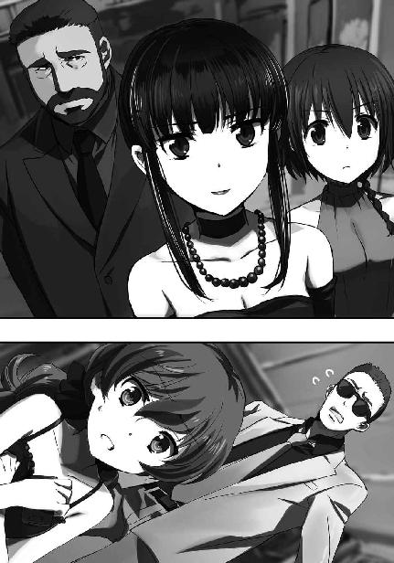
そう言って深雪が陳祥山へチラリと視線を投げる。
陳祥山は微かな苦笑でそれに応じた。
深雪はジャスミンに視線を戻した。
「無意識領域で構築された魔法式は、無意識領域の最上層にして意識領域の最下層たる『ルート』に転送され、意識と無意識の狭間に存在する『ゲート』から魔法の対象に投射されます」
「それがどうした」
ジョンソンは苛立った声を上げただけだが、
「......まさか!?」
ジャスミンは、深雪が言おうとしていることに気づいたようだった。
「ゲートは魔法師の精神とエイドスのプラットホームであるイデアの境界。ゲートはイデアに露出しています。そうでなければ、魔法式を自分の外側に作用させることができませんから」
「馬鹿な！ 幾ら何でも、そんな真似が」
「もうご理解いただいたようですね。魔法師無力化魔法『ゲートキーパー』は、対象となる魔法師のゲートに仕掛けられ、そこを通過した直後の魔法式を破壊します。『ゲートキーパー』が解除されない限り、あなた方は魔法を使えません」
深雪の説明は、完全な真実ではない。
彼女はこれを「四葉家の秘術」と言ったが、正しくは「達也の秘術」だ。他人の『ゲート』を監視し続ける、それは、少なくとも今現在、四葉家では達也にしかできないことだ。
それを「四葉家の秘術」と偽ったのは、達也に関心が集まりすぎるのを避ける為。
もっとも、そんなことはジャスミンにもジョンソンにも関係無い。今、二人が魔法を封じられているのは事実なのだから。
ジャスミンが床に両手を突いた。
ジョンソンが無言で深雪に襲い掛かる。
しかし、彼の身体は水波の障壁によって阻まれる前に、急速な体温の低下によって立っている力を失った。
無様に床を這うジョンソンへ、深雪が優しく語り掛ける。
「大丈夫ですよ。冬眠が一時的なものであることは、既に実証済みですから」
陳祥山が再び苦笑を漏らした。
実証のサンプルになったのは、彼だったからだ。
「皆様、お願いいたします」
深雪が扉の外に向かって声を掛けた。
その言葉を合図にして扉が開かれ、スーツ姿の軍人がジャスミンとジョンソンを拘束すべく入ってくる。
ジャスミンの目に映る扉の外は、港ではなく、飾り気の無い部屋だった。
扉が開いたことにより、微かな音楽が聞こえてくる。
ここがパーティー会場のすぐ横だと知って、ジャスミンは更なるショックを受けた。
「お気づきになりませんでしたでしょう？ 鬼門遁甲というのだそうですよ。お二人は階段を下りているつもりで、下りたり上ったりしていたのです。ですから仮に『ゲートキーパー』が作用していなくても、相対座標で魔法を照準する方法では、オゾンサークルは発動しませんでした」
「は、ははははは......何だそれは。私たちは、最初から、お前たちの掌の上だったというのか......」
今度こそ決定的に打ちのめされて、ジャスミンは虚ろな笑い声を漏らした。
［７］
達也が人工島へ戻ってきた時には、深雪もパーティー会場に復帰していた。
「達也様、お疲れさまでした」
「深雪の方こそ、ご苦労様。ほぼ予定どおりだったようだな」
「はい。最後に少し、予定外の仕事をいたしましたが、あのくらいの手間はあった方が、解説だけしているよりも気が楽です」
達也はあらかじめ言明していたように、パーティー終了時間に余裕で間に合った。
スーツには着崩れなど皆無で、靴も曇り一つ無く磨かれている。出て行った時よりも、むしろ、きちんとしているくらいだ。
達也の姿を目敏く見つけて、ほのかと雫が寄ってきた。
「達也さん、御用はもう済んだんですか？」
「ああ。予定より少し、時間が掛かったかな」
「まだ半分くらいだよ」
今日のパーティーは二時間半の予定だ。「半分くらい」は言い過ぎでも、あと一時間くらいは残っている。
「それより、先輩たち」
「そう言えば、何処に行ったんだろうね？」
雫とほのかが言うように、主要な招待客の一人である五十里をはじめとして、一高卒業生が全員パーティー会場からいなくなっている。
その理由を達也も深雪も知っていたが、二人に教えるつもりは無かった。
ほのかたちも心得たもので、それ以上卒業生の話はしなかった。
◇ ◇ ◇
卒業生の内、あずさと紗耶香は人工島の港に来ていた。
一応、服部、桐原、沢木の出迎えなのだが、
「もうっ！ こんなに濡らして！ 海水は靴も服も傷めるのよ！」
桐原の格好を見て小言の雨を降らせ始めた紗耶香に、桐原本人だけでなく服部と沢木も小さくなっていた。
「壬生さん、取り敢えずそのくらいで......」
彼女たちの周りには、敵の工作員を回収してきた国防軍の人間もいる。
あずさは、面白そうにこちらを見ている軍人たちの視線が気になって仕方が無かった。
「でも、見てよ。これ、もう駄目かも」
パーティー用の高価なスーツは、生地が海水でよれている。革靴もすっかり塩水を吸っていた。金銭感覚は一般庶民の紗耶香が嘆くのも無理はない。
「だ、大丈夫ですよ」
早くこの一幕を終わらせたい一心で、あずさは人目があるのも忘れてＣＡＤを操作した。
あずさの魔法が服部、桐原、沢木を一気に包み込む。
海水中の塩類が液体と粉末の形で分離されて床に落ちる。
風も無いのに粉と滴は海へ移動して消えた。
服と靴が乾く。
革靴はふんわりと、スーツは皺を伸ばしながら。
風が吹き込んだように服部、沢木、そして桐原の短い髪まで広がり、適度に乾燥した上ラフな感じでセットされる。
ほんの十秒程で、三人の顔と身体から海に入った痕跡は消え失せた。
「これで良いですよね？ 早く会場へ戻りましょう」
あずさは自分の魔法が注目を集めているのに気づいていなかった。
別の理由で軍の人たちに見られていると勘違いしている彼女は、主に紗耶香と服部に向かってひたすら「戻ろう」と主張する。
「......いえ、先に千代田さんたちの様子を見に行かないと」
あずさに視線が集中している理由を告げるべきかどうか悩んだ紗耶香は、結局「知らない方が幸せ」という結論に達してそう答えた。
「千代田に何かあったのか？」
「それも後で説明するから。行きましょう」
服部の質問に対する回答を保留して、紗耶香はあずさの背中を押し、歩き始めた。
あんなことがあったばかりとあって、五十里と花音には他の人間がいない部屋を与えられていた。
「......一体何があったんだ？」
二人が休んでいるという部屋に足を踏み入れて、服部は心底訝しそうに訊ねた。
花音はもう泣いていない。
涙は出ていないし、嗚咽も漏れていない。
だが、彼女は五十里の胸に顔を埋めたままだった。
「あはははは......ちょっとね。ショックなことがあって」
五十里としては、スルーして欲しいところだ。だが、服部がそれで納得するはずもない。
結局、五十里に甘える花音を放置したまま、あずさと紗耶香が代わる代わる「人質事件」について説明している内に、パーティーの終了時刻が到来してしまった。
◇ ◇ ◇
陳祥山と呂剛虎は、脱走兵を積み込んだ高速艇で帰国の途についた。
ブラッドリー・チャンらを乗せていた偽装漁船も既に捕らえてある。彼らの任務は、ほぼ満点で完了した。
「上尉、祝杯に付き合え」
「喜んで」
西に向かい、台湾海峡を通って厦門港を目指す船の甲板で、満月を見ながら陳祥山と呂剛虎が酒杯を交わす。
「今回は実りの多い任務だった」
陳祥山の言葉に、
「そうですな」
呂剛虎があながちお愛想ではなく応じた。
「やはり、日本軍とはいずれ雌雄を決する必要があるだろう」
「小官もそう思います」
二人は申し合わせたように、満月を仰ぎ見た。
「風間中佐の手の内が見られなかったのは残念だが、やつの部下の力量は大体分かった」
「ええ。特に柳少佐は手強いかと」
「ほう」
陳祥山が呂剛虎の杯に酒を注ぎ足す。
呂剛虎は杯に両手を添えて恭しく受けた。
「だが」
「はい」
「これ以上厄介な相手に成長する前に、潰さなければならん」
「仰るとおりです」
「司波達也。司波深雪。忌々しい四葉の後継者」
陳祥山の言葉に、呂剛虎の両眼が燃え盛る闘志を映して爛々と輝く。
「やつらは脅威だ。それが改めて確認できただけでも、大きな収穫だ」
「是」
「次は敵だ。今度こそ」
「お任せください」
「うむ」
陳祥山は、そこに映った月の影を飲み干すように酒杯を呷った。
◇ ◇ ◇
パーティー終了後、達也はクルーザーの通信機で真夜に首尾を報告した。
『今日はご苦労様でした』
「恐縮です」
今回の任務は滞りなく終わった。点数をつけるなら、九十点は行くだろう。
満点でないのは、プラスアルファが無かったからだ。
『今回の結果には満足しています』
「ありがとうございます」
『面白い話も聞かせてもらいましたし。「ゲートキーパー」......中々使い勝手が良さそうな魔法ね』
「改良すれば、自分以外にも使えるようになると思います」
『魔法師を本当の意味で無力化する魔法が遂にできるということですね。期待しています』
「速やかに実用化できるよう努めます」
『大亜連合の魔法も、中々興味深いものでした。詳しい報告を直接聞きたいので、東京に戻ったら本家においでなさい』
「はい。すぐにうかがいます」
『あら、そんなに急がなくても良いのよ。二、三日、そちらで英気を養ってから戻っていらっしゃい。報告は四月に入ってからで構いません』
「恐縮です」
『来月、会えるのを楽しみにしているわ』
その言葉を最後に、通信は切れた。
カメラの前で頭を下げていた達也が、通話ランプの消灯を確認して顔を上げる。
達也は小さく伸びをした。
今回は成功の報告とはいえ、真夜と話をするのはやはり気疲れする。
気分をリフレッシュする為に、彼はキャビンから甲板へ上がった。
そこでは深雪が、水波を従えて月を見ていた。
「お兄様。叔母様とのお話は終わられましたか？」
「ああ。東京に戻ったら直接報告に来いと言われた。ただし、四月に入ってからにしろという指示だ」
「まぁ......。叔母様、今はお忙しいのでしょうか」
深雪はすぐ報告に来るよう命じられると思っていたのだろう。口に片手を当て、軽く目を見開いている。
「多分、お前の言うとおりだろう」
達也はこの任務を命じられた時に、真夜が師族会議以外で珍しく本拠地から出てきていたのを思い出した。もしかしたらスポンサーとの間にでも、急を要する案件が発生したのかもしれない。
「でも、少し余裕ができましたね」
「そうだな」
達也が深雪の隣に立つ。
気を利かせたのか、水波がキャビンに引っ込んでいく。
二人だけになった甲板で、深雪が達也に身を寄せた。
ドレス姿のまま、髪をアップにした頭をスーツの肩にそっと預ける。
「今回は任務でしたが......楽しい旅行でした」
「俺も楽しかった」
「でも、今度は任務抜きで旅行に行きたいです。お兄様......達也様」
「お兄様で良いんだぞ」
深雪の頭が触れている肩を動かさないように気をつけながら、達也は彼女の横顔を窺った。
「お兄様と、達也様。どちらが良いのでしょうか。わたしにはまだ......」
「焦る必要はないさ。まだ、時間はある」
「そうですね。まだ、時間は残されています......」
うっとりと目を閉じた深雪の心の裡は、達也にも読み取れなかった。
［エピローグ］
空港の出発ロビーには六種類の人間がいる。
笑顔で見送る者。
涙で見送る者。
それ以外の表情で見送る者。細かく分類すればきりが無いのだろうが、笑顔と涙以外は誤差の範囲内だ。
同様に、見送られる側も三種類。
笑顔で旅立つ者。
涙と共に旅立つ者。
それ以外の表情で旅立つ者。
しかし敢えて、もう一種類付け加えるならば。
疲れ切った顔で帰途につく者。仕事か遊びかの違いはあれど、また肉体的疲労と精神的疲労の相違はあれど、帰りの飛行機を待つ者は、多くがそういう顔をしている。
彼女もまさに、疲労困憊の様子だった。
三月二十九日。久米島西沖合いの人工島で行われたパーティーの翌日。
「疲れる旅行だったわ......」
那覇空港の出発ロビーに到着した紗耶香は、スーツケースに両手を突いて体重を預け、しみじみと呟いた。
彼女の独り言を聞いたあずさが、控えめに乾いた笑い声を上げる。誘ってくれた同級生の手前、大きな声では言えないが、「同感！」というところなのだろう。
「そうかぁ？ 楽しかったじゃねえか」
しかし、恋人の桐原は違う意見だ。うきうきした表情でそう反論する。まだ昨夜の興奮を引きずっている様子だ。パーティーの興奮、ではなく、荒事の興奮を。
「......桐原君は楽しかったでしょうね。子供みたいに、ずぶ濡れになってはしゃいでいたもの」
紗耶香に恨めしそうな目を向けられて、桐原は咄嗟に視線を逸らした。昨晩スーツを台無しにし掛けてこっぴどく怒られたことを思い出したのだ。
「べ、別に、水遊びをしていたわけじゃねえぞ。なあ、沢木」
何が「なあ」なのかよく分からないセリフだったが、沢木は大きく頷いた。
「ああ。良い実戦だった。久々に全力を出せて満足だ」
紗耶香とあずさから放たれた視線の矢が、沢木に何本も突き刺さる。しかし見えざる矢でハリネズミ状態になっても、沢木は一向に堪えていない様子だ。
そこに五十里が、済まなそうな表情で会話に加わった。
「何か、ごめん。変なことに巻き込んじゃって......」
「あっ、ううん！ そんなことないわ！」
五十里の謝罪の言葉に、紗耶香は慌てて首を横に振った。
「あたしの方こそ、変なこと言ってごめんなさい。楽しかったのは間違いじゃないの」
「うん、分かってる」
慌てて釈明する紗耶香に、五十里は苦笑気味の笑顔で頷いた。
「あんなアクシデントに巻き込まれたら疲れちゃうよね。もう一日くらい、ゆっくりしていけば良かったかな」
「賛成！」
五十里の何気ない一言に花音が食い付く。
「今日の便はキャンセルして、もう一泊していこうよ！」
フィアンセの腕に自分の腕を絡めながら、花音が甘えた声で五十里に強請った。
「そういうわけにも行かないよ」
「そうだな。大学の入学式までにはまだ少し日があるとはいえ、そろそろ準備に取り掛かりたい」
服部のセリフにあずさは頷いていたが、花音は納得できないようだ。
「準備なんて何があるのよ」
「それより、搭乗手続きを済ませないか？」
花音の反論をスルーして、服部は五十里に声を掛けた。
「そうだな」
応えたのは沢木だ。彼はそのままスーツケースを押して搭乗カウンターへ向かった。
「ちょっと！ こら、無視すんな！」
沢木の後に続いて歩き始めた服部は、花音の抗議に上半身だけで振り返った。
「外国じゃないんだ。夏にでもまた来れば良いだろう？」
「良いね。またこのメンバーで来ようか」
服部のセリフに、五十里が乗り気な回答を返す。
「えーっ、あたしは啓と二人が良いなぁ」
花音がすかさず不満を唱え、
「俺たちは夏休みが本当に自由に使えるかどうか分からないからなぁ」
防衛大学校に進む桐原のセリフに、同じく防大進学組の紗耶香が残念そうな顔で頷く。
「別に、今年の夏に限る必要はないし、夏に限る必要すらない。リスクが何処にでも待ち構えているように、チャンスは何時でも存在する」
「服部、そいつは何かの哲学か？」
桐原の冷やかしに、服部は笑って頭を振った。
「哲学なんてご大層なものじゃないさ。単なる気休めだ」
「何が言いたいのか分かんねえよ」
「次はもっと上手くやれる、というのと同じようなものだ」
「なる程」
搭乗手続きを終えた沢木が、振り返って口を挿む。
「では、次は俺たちだけでトラブルを片付けられるようになろうか」
「まあ、そういうことだな」
服部は笑ったまま、沢木のセリフに頷いた。
◇ ◇ ◇
予定どおりパーティーの翌日に東京行きの飛行機に乗った一高卒業生組に対して、在校生組は朝からのんびりと波の上を漂っていた。潜水艦の襲撃で中断した久米島遊覧を、同じグラスボートでやり直しているのだった。
「思い掛けず『任務ではない旅行』になりましたね」
苦笑混じりの深雪のセリフに、
「これはノーカウントで良いんじゃないか？」
達也はやはり、苦笑交じりで答えた。
「何が『ノーカウント』なんですか？」
ほのかがすかさず、不思議そうに問い掛ける。
「今回の沖縄旅行は仕事だったから、次回は仕事抜きで旅行しようと話をしていたんだ」
特に隠す必要はないので、達也はほのかの質問に正直に答えた。
次回は仕事抜き、という話を深雪としたのは昨晩のことだ。人工島から沖縄本島へ戻る船の上の会話。あれからまだ半日しか経っていない。このクルーズを「仕事抜きの旅行」にカウントすると、昨夜の会話が何とも締まらないものになってしまう気がして、達也も深雪も苦笑していたのだった。
「ふーん、そうなんですか」
ほのかはそれ以上踏み込んでこなかった。「自分も一緒に」というセリフは彼女自身にとって好ましくない回答を招くと悟ったのだろう。
「いつまでこっちにいられる？」
親友の苦悩を敏感に察知したのか、雫が深雪に別の話題を持ち掛ける。
「明日か明後日には東京に戻らなければと思っているのだけど」
「あんまり余裕、無いんだね」
「本当は今日の便で戻る予定だったの。これでも少し余裕ができたのよ」
「ふーん......」
何故余裕ができたのか、深雪は説明しなかった。
雫もそこは訊ねなかった。
「そろそろ入学式の打ち合わせもしなければならないし」
「そうか」
雫は、実態はともかく肩書きは平の風紀委員なので、校内でイベントがあっても事前に忙しくなったりはしない。だが深雪は生徒会長だ。入学式に向けて、色々な準備がある。
例年であれば三月中に新入生総代との顔合わせや式の段取りなど終わらせておくのだが、今年は深雪が公務みたいなもので──「公」務ではないが、実質的にはそれに近い──終業式直後に東京を離れている。式の手配は春休みになる前に一通り終わらせてあるのだが、新入生答辞の打ち合わせはまだできていない状況だ。
「今年の総代は、また女の子なんだよね？」
「そうよ」
「十師族なんだっけ」
「ええ。三矢詩奈さん。三矢家の末のお嬢さんよ。まだお会いしたことは無いのだけど」
「そうなんだ。だったら尚更、余りゆっくりはしていられないね」
「そうね。残念だけど」
深雪がそう言った時、彼女自身だけでなくほのかも気落ちした顔をしていた。
深雪が東京に戻れば、達也も一緒にいなくなるから、ではない。ほのかも生徒会の役員で、入学式の準備に取り掛かる必要があるのは彼女も同じだからだ。
ほのかと雫は三十一日に帰京する予定だが、仮に深雪が入学式の準備で三十日に東京へ戻るとなれば、それに合わせて帰りの便を繰り上げることも考えなければならない。
「......とにかく、こっちにいる間はのんびりしましょう！ 海は少し早いですけど、私たちが泊まっているホテルのプールで泳ぎませんか？ 結構広いんですよ！」
気を取り直したほのかが、達也に迫っている。
それを見ている深雪の表情から少し余裕が無くなってきた、と彼女と話をしていた雫は思った。
◇ ◇ ◇
ジャスミン・ウィリアムズとジェームズ・Ｊ・ジョンソンが日本軍に捕らえられたという報せは、翌日の内にイギリスのウィリアム・マクロードの耳にも入った。
今回の久米島沖人工島破壊工作未遂事件は表面上、大亜連合脱走部隊をオーストラリア軍が支援したものだが、この二者を結びつけたのはイギリスだ。背景が明らかになれば、真の首謀者はイギリス軍だったとの非難は免れない。
それを自覚しているから、イギリス軍情報部は現在、緊迫した空気に包まれていた。
蜂の巣を突いたような大騒ぎには、なっていない。この件はホワイトホール（イギリスの政府機関・官庁街）にある国防情報参謀部本部ビルの中でさえ、情報漏洩を恐れて大きな声では語られていない。それが余計に、重苦しい空気を演出している。
すれ違う際、マクロードに責めるような目を向けてくる者も少なくない。今回の作戦に関わったスタッフは、オーストラリア軍魔法師部隊を動かすに当たってマクロードが主導的な役割を果たしたことを知っている。
自分が非難の視線に曝されていることに、マクロードは気づいていた。既に弁明も求められているのだ。自分の立場が悪化していることは、誰かに教えられるまでもない。
しかしウィリアム・マクロードには、自分に対する悪感情にまるで頓着している様子が無い。政府高官の前で軍の幹部に詰問されている最中も、悠然とした貴族的な態度を崩さなかった。
一つには、公認戦略級魔法師『十三使徒』の一人である自分をイギリス政府が疎かに扱うはずがない、という計算もあるのだろう。しかし自身でオーストラリアまで乗り込んでいって直接作戦に口を出す程深く関与しているにも拘わらず、ショックを受けた様子が無いのは、単に自分の地位が安泰であることを確信しているからとは思われなかった。
マクロードは呼び出されたＤＩＳ本部ビルを出て、一ブロック隣の古いビルに入った。ここにはイギリスのシギント（通信傍受、盗聴、レーダー波やビーコン信号等の傍受による諜報活動）を担う政府通信本部（旧ＭＩ１）の分室が入っている。
部外者には何に使われているのか全く分からないこのビルは、マクロードの仕事場でもある。厳密にいえばＧＣＨＱ分室ビルの一室に、マクロードは、完全に個人用のオフィスを割り当てられていた。
彼は誰にも会わず自分の部屋に入って鍵を掛けた。元々人の出入りが少ないビルだが、マクロードのオフィスは内部の職員もほとんど足を踏み入れることが無いマシンフロアの一角にある。専用のエレベーターに乗ってしまえば、この部屋に来た事実を他人に知られることはない。
マクロードは、ビルの外見とは不釣り合いな最新式通信機のスイッチを入れた。
通信機のディスプレイは、すぐに一人の男性の姿を映し出した。相手は約束の時間より前から通信機の前に陣取っていたようだ。
『ハロー、サー・ウィリアム・マクロード。お身体の調子は如何ですか？』
「ハロー、ドクター・クラーク。身体の方はすこぶる快調ですよ。年の割にはね」
『そんなつもりではなかったのですが......申し訳ない』
「こちらこそ失礼。単なる冗談です」
画面の中で困惑気味に笑っている男性の名はエドワード・クラーク。ＵＳＮＡ国家科学局所属の学者で、大規模情報システムの専門家だ。
『お人が悪いですよ、サー。ところで例の件、予定どおり失敗に終わったようですね』
「ドクターに隠し事はできませんな」
『恐れ入ります。それで、「木馬」は上手く潜り込めましたか？』
「今のところはまだ。ジャズはハル・カザマの許に捕らえられています」
『そうですか......。四葉が興味を持ちそうなサンプルだと思ったのですがね』
「私はまだ、五分五分だと思っています。ハル・カザマの部隊と四葉の間には特別なコネクションがあるようですから」
『同一の遺伝子情報を持つ「ウィリアムズ・ブラザー」の精神感応で、四葉の秘密を少しでも探り出せれば良いのですが』
「ジャズの場合は『シスター』と言うべきなのでしょうがね。彼女たちの精神感応は本人が意識して使えるものではない分、確実性には欠けますが、相手に察知されにくいというメリットがあります。ドクターの『システム』と組み合わせれば、我々の目と耳が届く範囲は大きく広がるのではないかと」
『世界を制する為に何より必要なのは情報です。サー・ウィリアム、ＵＳＮＡは貴方のご協力に、作戦の成否に拘わらず感謝しております』
「恐縮です。我がブリテンの繁栄の為に、今後もドクターのお知恵をお貸し願いたい」
『無論ですとも。我々は同盟者なのですから』
画面の中でエドワード・クラークが「それではまた近い内に」とフレンドリーな挨拶を告げる。その直後、画面はブラックアウトした。
マクロードも通信機の電源を落とし、システムを念入りにロックして、この秘密オフィスを後にした。
◇ ◇ ◇
久米島沖人工島襲撃未遂事件の翌々日。真夜は都心近くの高級住宅街を訪れていた。
見た目は古く大きな一軒家。しかしその実態は、最新式の警備装置と幾重にも重ね掛けされた古式魔法の防衛陣地に守られた、一種の要塞だ。
家の主の名は東道青波。青波入道閣下とも呼ばれる老人で、日本の政財界の奥深くに巣くう黒幕──妖怪とも呼ばれる──の一人だ。旧第四研の真のオーナーで、四葉のスポンサーでもある。
東道老人が真夜を呼びつけることは少ない。スポンサーとはいえ、四葉家が一方的な庇護を受けている関係ではないのだ。資金面だけに限って言えば、四葉家は東道老人の助けがなくてもやっていける。
四葉家はかつて、旧第四研の管理者、運営スタッフを排除して、軍から自由を勝ち取った。しかしその前に、軍が東道家から第四研の実権を奪った経緯がある。
だからこそ今でも東道老人と四葉家当主は友好的な関係でいられる。四葉家が東道老人の権力に依存している部分があるのと同様に、東道老人は四葉家の力に助けられているのだ。
お互いに、持ちつ持たれつの関係。だからこそ、東道老人が真夜を呼びつけるのは、余程の重要案件がある場合だ。
真夜と東道老人はお決まりの挨拶を交わした後、早速本題に入った。
「一昨日の久米島の件、ご苦労だった」
「恐れ入ります」
破壊工作を阻止するよう真夜が達也に命じたのは、東道老人の依頼を受けてのことだ。
「その際、オーストラリア軍の魔法師を捕虜に取っているな」
「はい。一人は平凡な魔法師ですが、もう一人は中々興味深いサンプルのようです」
真夜の言葉に、東道老人は「そうだろう」と言わんばかりに頷く。
「お前たちが興味を懐くのは当然だ。だが、その者を決して四葉の懐に入れてはならない」
老人の言葉に、真夜が軽く目を見張る。
「あら......。もしかして、罠でございますか？ 人間爆弾のような」
「爆弾よりも質が悪い。その女は『耳』だ」
東道老人の言い方は抽象的なものだったが、真夜は「耳」を諜報系の特殊能力者のことだと正確に理解した。
「かしこまりました。佐伯閣下には、その者を早急に処分するよう忠告致しましょう」
真夜は東道老人の言葉を疑わなかった。
どうやってそれを知ったのかとも訊ねなかった。
四葉家は旧第四研だけで開発された一族ではない。第四研創設以前から、その前身となる組織で交配が進められていた。
そして東道老人の手許にはまだ、四葉家に「血」を提供した家系の者が残っているのだ。
「そうだな。佐伯にはこちらから指図するより、お前から告げる方が効果的だろう」
東道老人の命令に、真夜は心がこもっていない笑顔で頭を下げた。
〔『南海騒擾編』完〕
あとがき
ここまでお付き合いいただき、ありがとうございます。『南海騒擾編』、如何でしたでしょうか。お楽しみいただけたのであれば良いのですが。
元々の予定では、この第二十巻で三年生の部が開幕するはずでした。しかし諸事情により、シリーズ構成には無かった、単巻で完結する番外編的なエピソードをお届けすることになりました。
この巻は、構想段階では（１）シリーズのメインストーリーとはあまり関係が無い番外編にする、（２）今まであまりスポットライトが当たらなかった一学年上のメンバーを活躍させる、（３）シチュエーションは卒業旅行で舞台は北海道か沖縄にする、という方針でした。
ところがどうしたことか、プロットを作り始めるとあれよあれよという間に、お読みいただいたようなきな臭い話になってしまいました。一応、脇役ながら服部たちにスポットは当たっていますし、舞台とシチュエーションも方針どおりなのですが......。
師族会議編が達也たちにとって窮屈な話だったので、今回はのびのびと活躍させよう、と考えたのがいけなかったのでしょうか。達也が便利すぎる異能を使いまくっています。彼を自由にさせたらこうなってしまうんですね。普通の敵には為す術がありません。
まあこれからは、強いだけでは打開できない状況に直面することになるのですが。......直面する、はずです。
エピローグにはメインストーリーに大きく関わってくるキャラクターが顔を出しています。当初の構想に反して、番外編とは呼べなくなってしまいました。しかし、結果的には彼らをここで登場させられて良かったと思います。
また、名前だけですが新一年生も出てきました。彼女は当初『文乃』という名前だったのですが、『文弥』と被っているという理由で没。次に『詩乃』という名前を思いついたのですが、いやいや、これは某超人気作品の人気ヒロインの名前と同じ字じゃないか、と気づいてこれも没。最終的に『詩奈』で落ち着きました。彼女も色々と特徴的なキャラクターですので、次巻以降の活躍をご期待ください。
作中に出てきた海底資源鉱床は二〇一五年一月に独立行政法人石油天然ガス・金属鉱物資源機構が存在を確認したと発表した「ごんどうサイト」を参考にしています。今年（二〇一六年）二月にも沖縄海域で海底熱水鉱床の確認が発表されていますし、実際に商業ベースで採掘できるようになれば良いですね。技術の進歩に期待しましょう。
作中の人工島は一九七五年に開催された沖縄国際海洋博の「アクアポリス」をモデルにしています。規模や構造は全く違いますが。
私自身は、海底資源開発にはこういうメガフロートより「オーシャンスパイラル」のような海中建造物の方が有望ではないかと考えているのですが、今回のストーリーではメガフロートの方が都合が良かったので、この様な形になりました。オーシャンスパイラルもロマンですよねぇ。私が生きているうちに実現しないものでしょうか。
さて、次巻では本当に、三年生の部が開幕します。主人公の最終学年に相応しく「そんなのあり？」という展開を色々と考えておりますので、是非、シリーズの最後までお付き合いください。皆様に「面白かった」と仰っていただけるよう、精一杯頑張ります。
それでは、第二十一巻『動乱の序章』編でまたお目にかかれますことを願っております。
（佐島勤）
佐島勤
西暦１９ＸＸ年、日本の片田舎に生まれる。和洋のスペースオペラを糧に少年時代を過ごす。青年時代、ファンタジーと伝奇小説に転向。卒業後、企業戦士（ただし雑兵）として現実世界に魂を売り渡すも、西暦２０１１年、遅れてきたジュブナイル作家として空想世界に帰還を果たす。（本プロフィールには虚偽と誇張表現が含まれています）
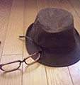
イラスト／石田可奈
西暦１９ＸＸ年生まれ。挿絵は初仕事。本業はアニメーター。アニメ『俺の妹。』の総作画監督を担当。『魔法科高校』ではキャラクターデザイン、総作画監督もつとめた。
SpecialThanks：ジミーストーンさん。
本書に対するご意見、ご感想をお寄せください。
電撃文庫公式ホームページ 読者アンケートフォーム
http://dengekibunko.jp/
※メニューの「読者アンケート」よりお進みください。
ファンレターあて先
〒102-8584 東京都千代田区富士見1-8-19
アスキー・メディアワークス電撃文庫編集部
「佐島 勤先生」係
「石田可奈先生」係
本書は書き下ろしです。
この物語はフィクションです。実在の人物・団体等とは一切関係ありません。

 電撃文庫
電撃文庫
魔法科高校の劣等生⑳
南海騒擾編
佐島勤
発 行 2016年10月7日
発行者 塚田正晃
発行所 株式会社KADOKAWA
〒102-8177 東京都千代田区富士見2-13-3
03-3238-8745（営業）
http://www.kadokawa.co.jp/
プロデュース アスキー・メディアワークス
〒102-8584 東京都千代田区富士見1-8-19
03-5216-8399（編集）
http://dengekibunko.jp/
本書（電子版）に掲載されているコンテンツ（ソフトウェア／プログラム／データ／情報を含む）の著作権およびその他の権利は、すべて株式会社KADOKAWAおよび正当な権利を有する第三者に帰属しています。
法律の定めがある場合または権利者の明示的な承諾がある場合を除き、これらのコンテンツを複製・転載、改変・編集、翻案・翻訳、放送・出版、公衆送信（送信可能化を含む）・再配信、販売・頒布、貸与等に使用することはできません。
(C)2016 TSUTOMU SATO
※2017年8月5日発行の電撃文庫『魔法科高校の劣等生⑳ 南海騒擾編』2版に基づき制作